DRAFT — UE26CS151A · Unit_02 — Unit 2: Collections & Functions · Complete Unit Master
·How to use this pack
Search this single unit master by lesson, timestamp, slide text or source page. Read the transcript in timestamp order, then compare extracted slide text with its page-faithful source figure. Formula candidates and archive question mappings are explicitly flagged for review. Topics include the applicable parts: overview, key terms, formulas, figures, flowcharts, important points, worked examples, past-paper questions and a recap. IDs are shared with the separate documents: E = formula, G = graph, F = flowchart, W = worked example. Each ID is numbered by topic, so E4.2 is the second formula of topic 4.
1UE26CS151A · Unit_02: Unit 2: Collections & Functions
This unit master organizes source material for Python for computational Problem Solving, Unit_02, officially titled Unit 2: Collections & Functions. It includes 4 video transcripts and 8 source slide decks, with page-level text and rendered images where available. This draft preserves source wording and page order; it does not claim a complete human subject review or full audiovisual review. EV0000001
2Lists and Tuples
This lesson is indexed from the source video titled Lists and Tuples. Its complete timestamped transcript is preserved below in segment order. The original video path and content hash are recorded in datasets/lecture-corpus.json. Transcript text is source wording; it has not been silently corrected or rewritten. A candidate slide deck is grouped here according to the current matching score; the exact path and page locators are listed in the source evidence. EV0000002 · EV0000003
Graphs and diagrams
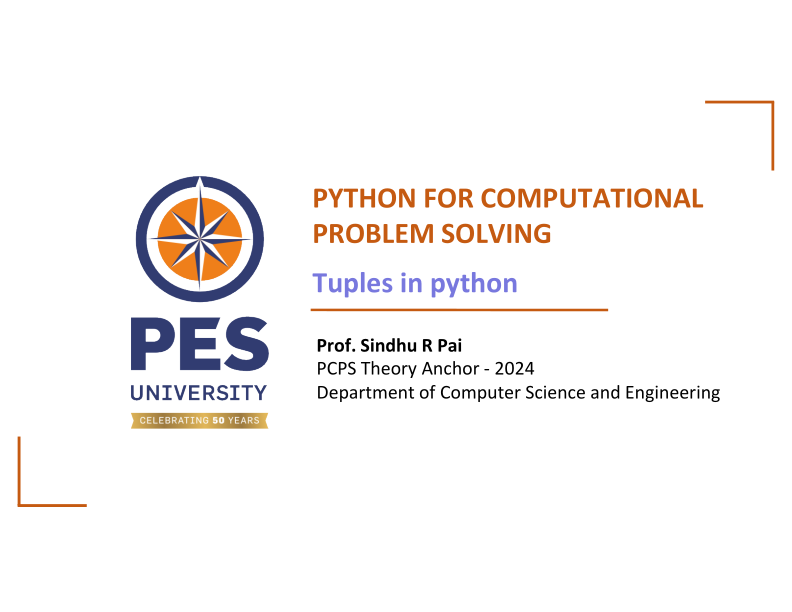
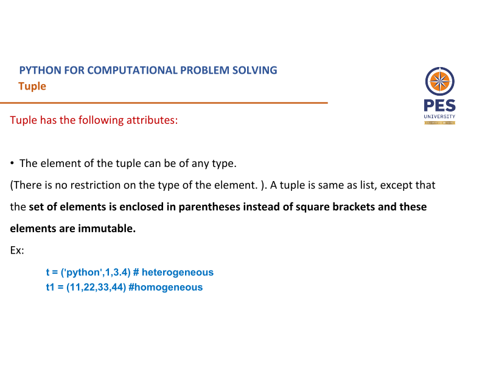
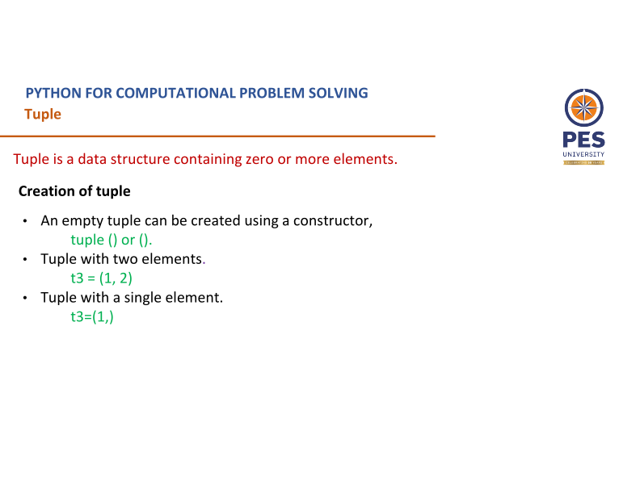
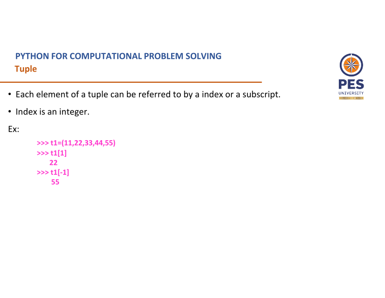
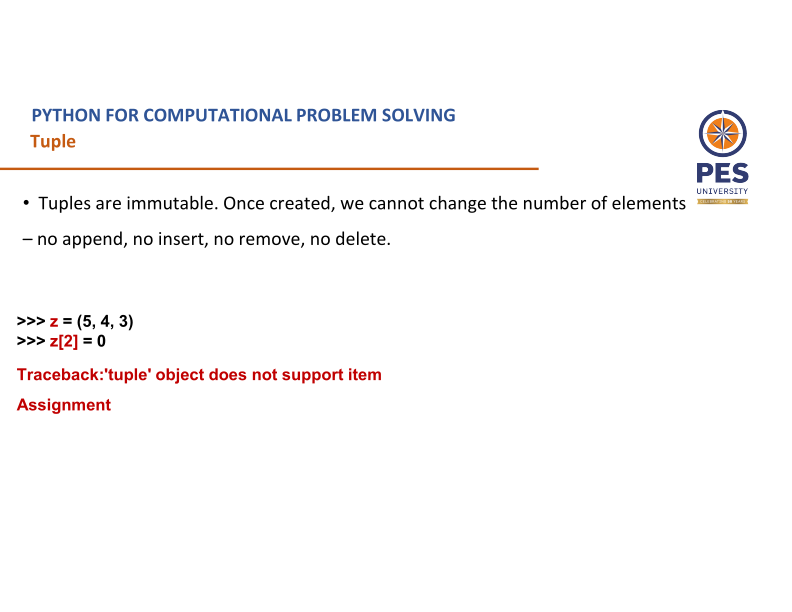
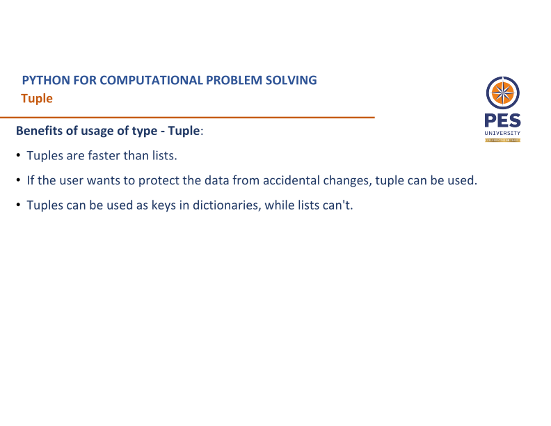
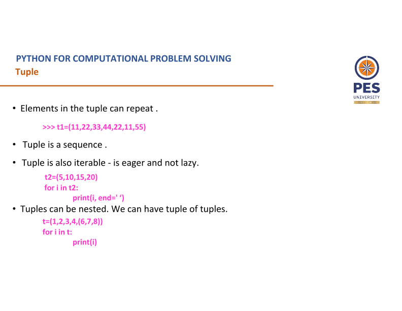
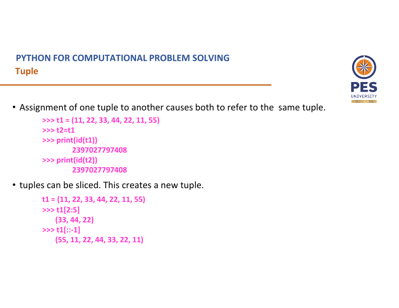
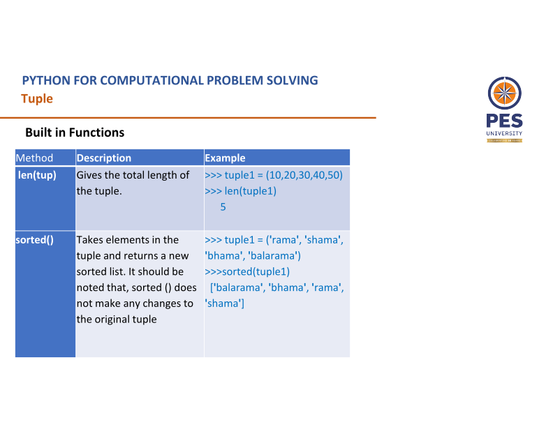
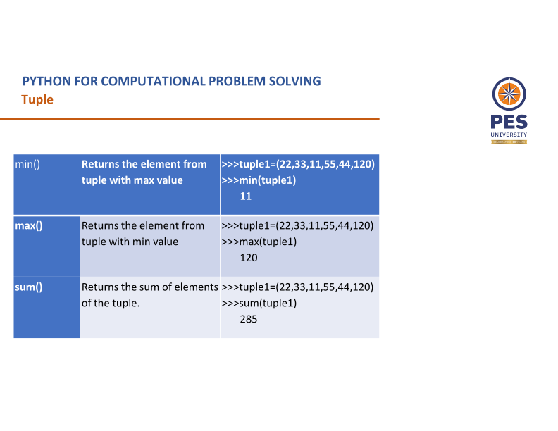
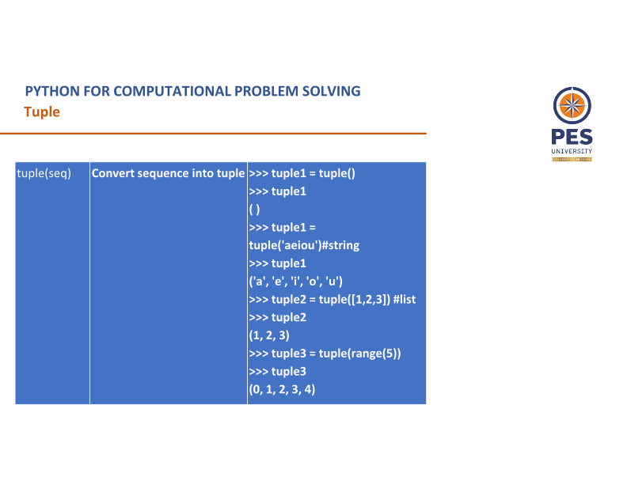
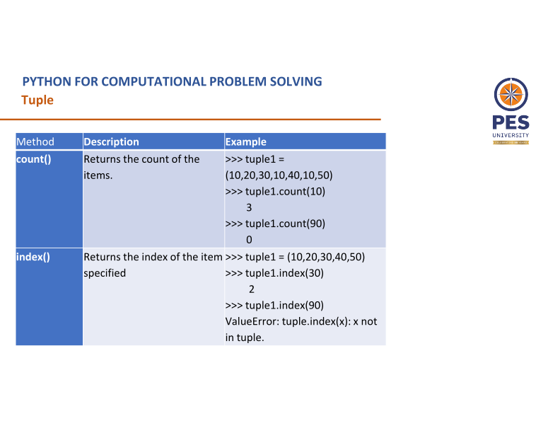
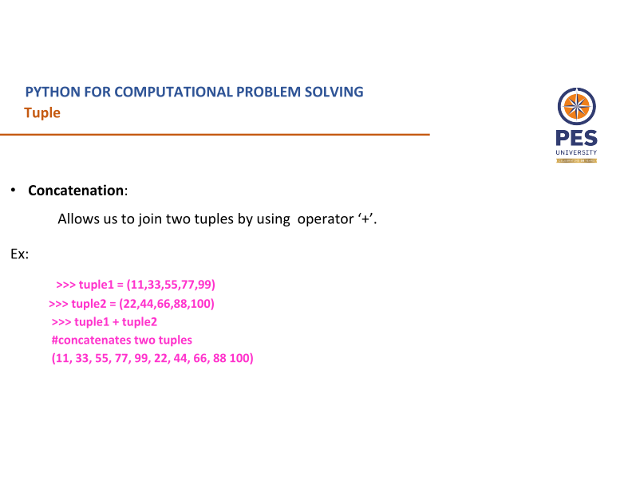
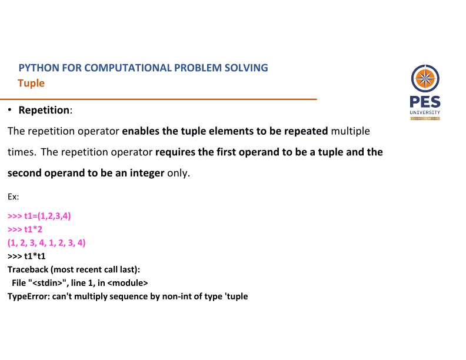
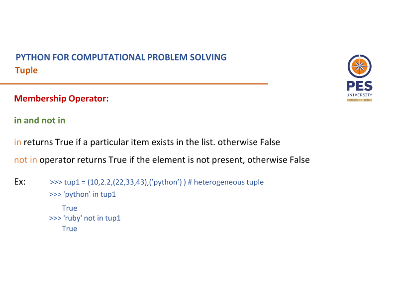
Important points and why
- Source slide page 1 (extracted text): PYTHON FOR COMPUTATIONAL PROBLEM SOLVING Tuples in python Prof. Sindhu R Pai PCPS Theory Anchor - 2024 Department of Computer Science and Engineering EV0000078 · EV0000079 · EV0000080
- Source slide page 2 (extracted text): PYTHON FOR COMPUTATIONAL PROBLEM SOLVING Tuple Tuple has the following attributes: • The element of the tuple can be of any type. (There(There isis nono restrictionrestriction onon thethe typetype ofof thethe elementelement. )). AA tupletuple isis samesame asas listlist, exceptexcept thatthat the set of elements is enclosed in parentheses instead of square brackets and these elements are immutable. Ex: t = ('python',1,3.4) # heterogeneous t1 = (11,22,33,44) #homogeneous EV0000081 · EV0000082 · EV0000083
- Source slide page 3 (extracted text): PYTHON FOR COMPUTATIONAL PROBLEM SOLVING Tuple Tuple is a data structure containing zero or more elements. Creation of tuple • An empty tuple can be created using a constructor, tuplep ()() or ().() • Tuple with two elements. t3 = (1, 2) • Tuple with a single element. t3=(1,) EV0000084 · EV0000085 · EV0000086
- Source slide page 4 (extracted text): PYTHON FOR COMPUTATIONAL PROBLEM SOLVING Tuple • Each element of a tuple can be referred to by a index or a subscript. • Index is an integer. Ex: >>> t1=(11,22,33,44,55) >>> t1[1] 22 >>> t1[-1] 55 EV0000087 · EV0000088 · EV0000089
- Source slide page 5 (extracted text): PYTHON FOR COMPUTATIONAL PROBLEM SOLVING Tuple • Tuples are immutable. Once created, we cannot change the number of elements – no append, no insert, no remove, no delete. >>> z = (5, 4, 3) >>> z[2] = 0 Traceback:'tuple' object does not support item Assignment EV0000090 · EV0000091 · EV0000092
- Source slide page 6 (extracted text): PYTHON FOR COMPUTATIONAL PROBLEM SOLVING Tuple Benefits of usage of type - Tuple: • Tuples are faster than lists. • If the user wants to protect the data from accidental changes, tuple can be used. • Tuples can be used as keys in dictionaries, while lists can't. EV0000093 · EV0000094 · EV0000095
- Source slide page 7 (extracted text): PYTHON FOR COMPUTATIONAL PROBLEM SOLVING Tuple • Elements in the tuple can repeat . >>> t1=(11,22,33,44,22,11,55) • Tuple is a sequence . • Tuple is also iterable - is eager and not lazy. t2=(5,10,15,20) for i in t2: print(i, end=' ‘) • Tuples can be nested. We can have tuple of tuples. t=(1,2,3,4,(6,7,8)) for i in t: print(i) EV0000096 · EV0000097 · EV0000098
- Source slide page 8 (extracted text): PYTHON FOR COMPUTATIONAL PROBLEM SOLVING Tuple • Assignment of one tuple to another causes both to refer to the same tuple. >>> t1 = (11, 22, 33, 44, 22, 11, 55) >>> t2=t1 >>> print(id(t1)) 2397027797408 >>> print(id(t2)) 2397027797408 • tuples can be sliced. This creates a new tuple. t1 = (11, 22, 33, 44, 22, 11, 55) >>> t1[2:5] (33, 44, 22) >>> t1[::-1] (55, 11, 22, 44, 33, 22, 11) EV0000099 · EV0000100 · EV0000101
- Source slide page 9 (extracted text): PYTHON FOR COMPUTATIONAL PROBLEM SOLVING Tuple Built in Functions Method Description Example len(tup) Gives the total length of >>> tuple1 = (10,20,30,40,50) the tuple. >>> len(tuple1) 5 sorted() Takes elements in the >>> tuple1 = ('rama', 'shama', tuple and returns a new 'bhama', 'balarama') sorted list. It should be >>>sorted(tuple1) noted that, sorted () does ['balarama', 'bhama', 'rama', not make any changes to 'shama'] the original tuple EV0000102 · EV0000103 · EV0000104
- Source slide page 10 (extracted text): PYTHON FOR COMPUTATIONAL PROBLEM SOLVING Tuple min() Returns the element from >>>tuple1=(22,33,11,55,44,120) tuple with max value >>>min(tuple1) 11 max() Returns the element from >>>tuple1=(22,33,11,55,44,120) tuple with min value >>>max(tuple1) 120 sum() Returns the sum of elements >>>tuple1=(22,33,11,55,44,120) of the tuple. >>>sum(tuple1) 285 EV0000105 · EV0000106 · EV0000107
- Source slide page 11 (extracted text): PYTHON FOR COMPUTATIONAL PROBLEM SOLVING Tuple tuple(seq) Convert sequence into tuple >>> tuple1 = tuple() >>> tuple1 ( ) >>> tuple1 = ttuple('aeiou')#stringl (' i ')# t i >>> tuple1 ('a', 'e', 'i', 'o', 'u') >>> tuple2 = tuple([1,2,3]) #list >>> tuple2 (1, 2, 3) >>> tuple3 = tuple(range(5)) >>> tuple3 (0, 1, 2, 3, 4) EV0000108 · EV0000109 · EV0000110
- Source slide page 12 (extracted text): PYTHON FOR COMPUTATIONAL PROBLEM SOLVING Tuple Method Description Example count() Returns the count of the >>> tuple1 = items. (10,20,30,10,40,10,50) >>> tuple1.count(10) 3 >>> tuple1.count(90) 0 index() Returns the index of the item >>> tuple1 = (10,20,30,40,50) specified >>> tuple1.index(30) 2 >>> tuple1.index(90) ValueError: tuple.index(x): x not in tuple. EV0000111 · EV0000112 · EV0000113
- Source slide page 13 (extracted text): PYTHON FOR COMPUTATIONAL PROBLEM SOLVING Tuple • Concatenation: Allows us to join two tuples by using operator ‘+’. Ex: >>> tuple1 = (11,33,55,77,99) >>> tuple2 = (22,44,66,88,100) >>> tuple1 + tuple2 #concatenates two tuples (11, 33, 55, 77, 99, 22, 44, 66, 88 100) EV0000114 · EV0000115 · EV0000116
- Source slide page 14 (extracted text): PYTHON FOR COMPUTATIONAL PROBLEM SOLVING Tuple • Repetition: The repetition operator enables the tuple elements to be repeated multiple times. The repetition operator requires the first operand to be a tuple and the second operand to be an integer only. Ex: >>> t1=(1,2,3,4) >>> t1*2 (1, 2, 3, 4, 1, 2, 3, 4) >>> t1*t1 Traceback (most recent call last): File "<stdin>", line 1, in <module> TypeError: can't multiply sequence by non-int of type 'tuple EV0000117 · EV0000118 · EV0000119
- Source slide page 15 (extracted text): PYTHON FOR COMPUTATIONAL PROBLEM SOLVING Tuple Membership Operator: in and not in in returns True if a particular item exists in the list. otherwise False not in operator returns True if the element is not present, otherwise False Ex: >>> tup1 = (10,2.2,(22,33,43),(’python’) ) # heterogeneous tuple >>> 'python' in tup1 True >>> 'ruby' not in tup1 True EV0000120 · EV0000121 · EV0000122
- Source slide page 16 (extracted text): THANK YOU Departmentp of Computerp Science and Engineeringg g Dr. Shylaja S S, Director, CCBD &CDSAML, PESU Prof. Sindhu R Pai – sindhurpai@pes.edu Prof. Chitra G M Prof. Mohan Kumar A V EV0000123 · EV0000124 · EV0000125
3Dictionary
This lesson is indexed from the source video titled Dictionary. Its complete timestamped transcript is preserved below in segment order. The original video path and content hash are recorded in datasets/lecture-corpus.json. Transcript text is source wording; it has not been silently corrected or rewritten. A candidate slide deck is grouped here according to the current matching score; the exact path and page locators are listed in the source evidence. EV0000026 · EV0000027
Graphs and diagrams
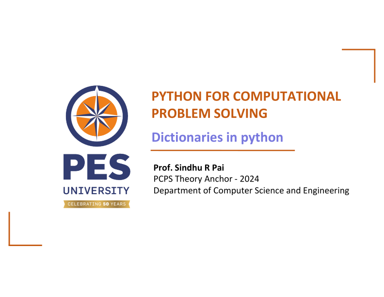
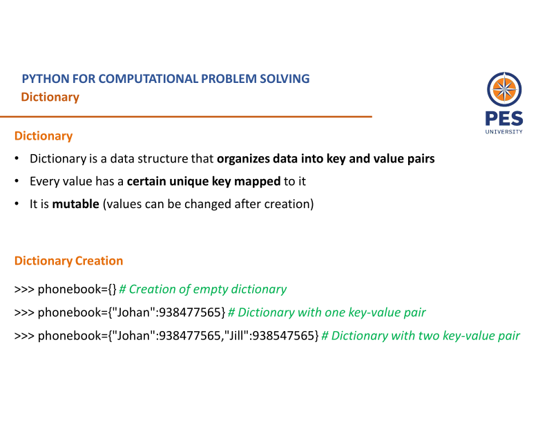
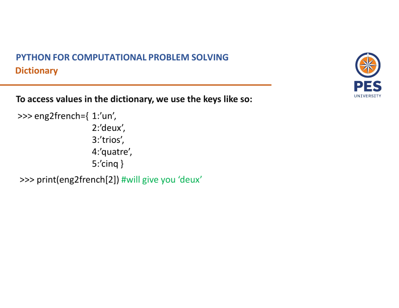
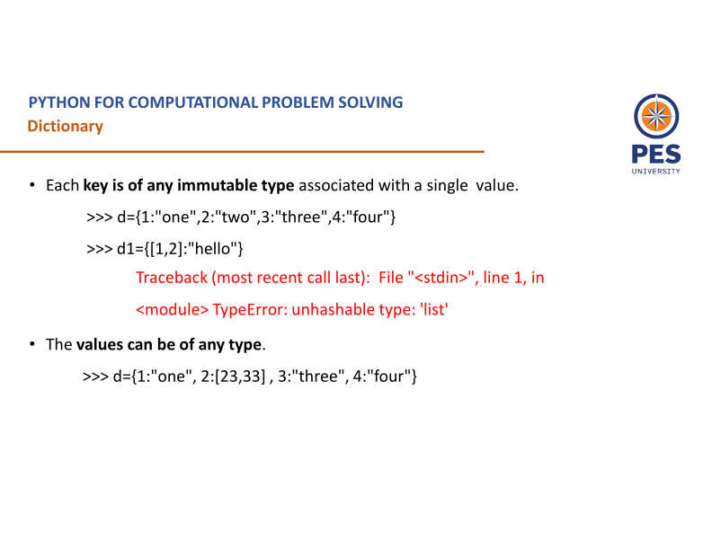
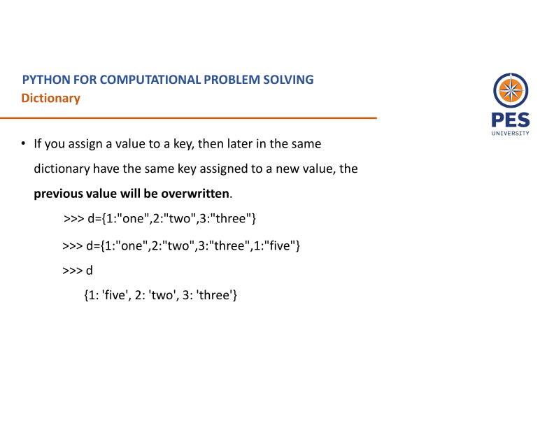
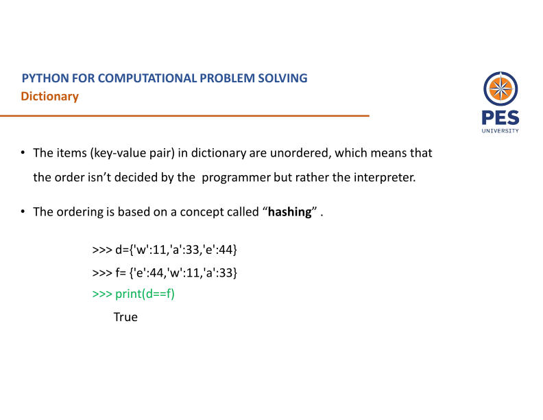
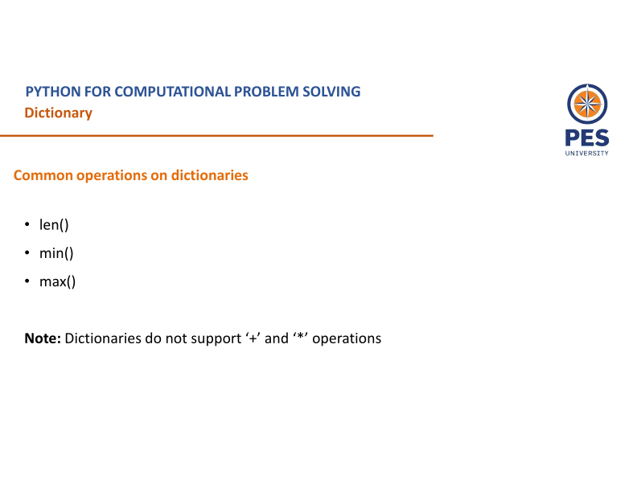
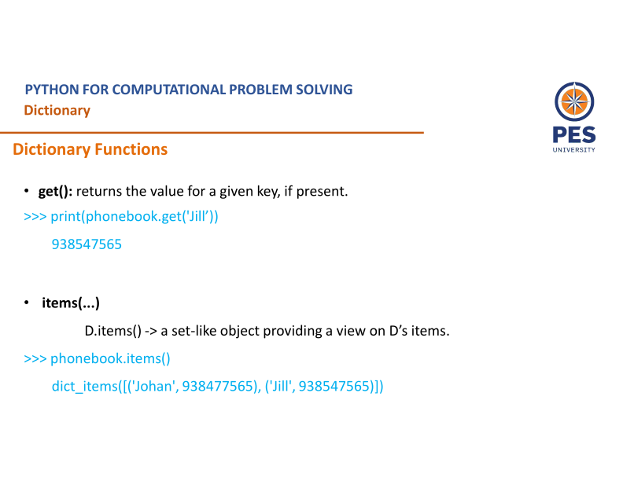
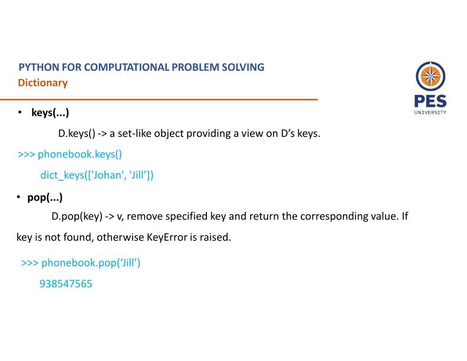
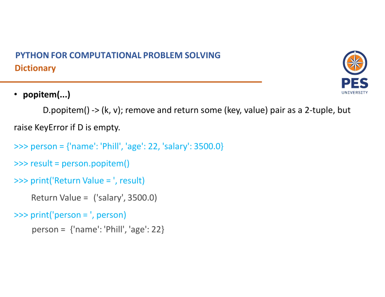
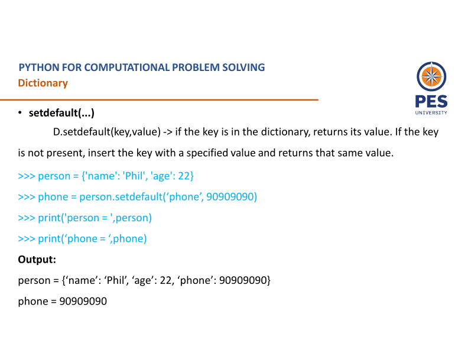
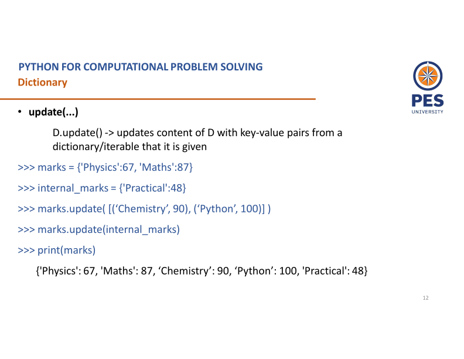
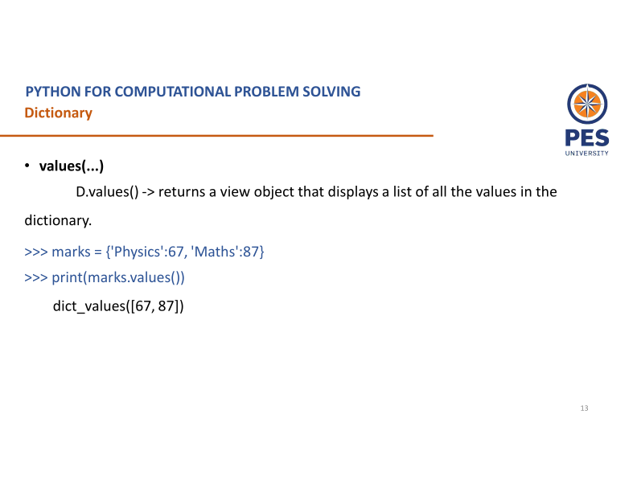
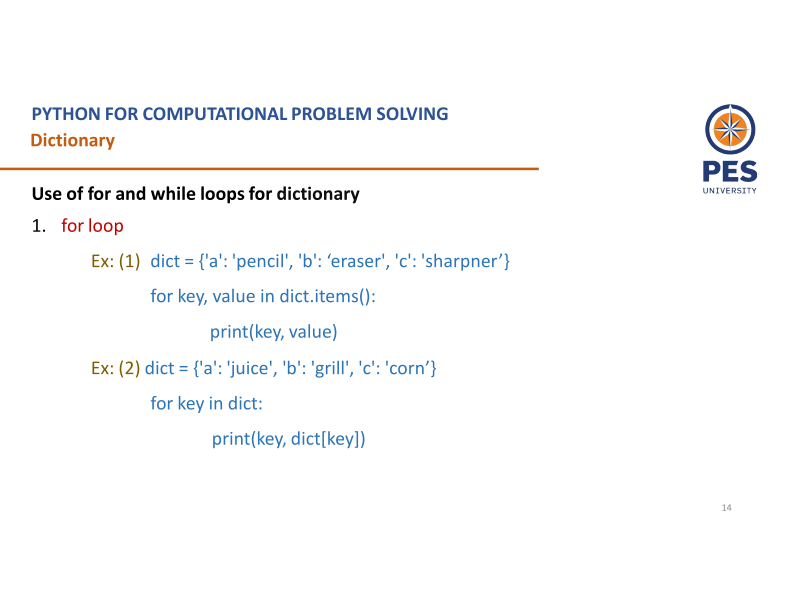
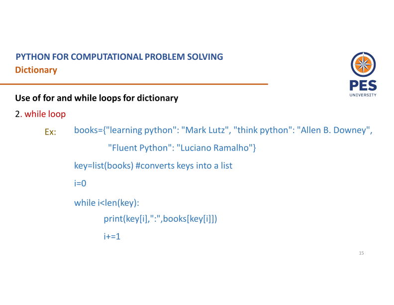
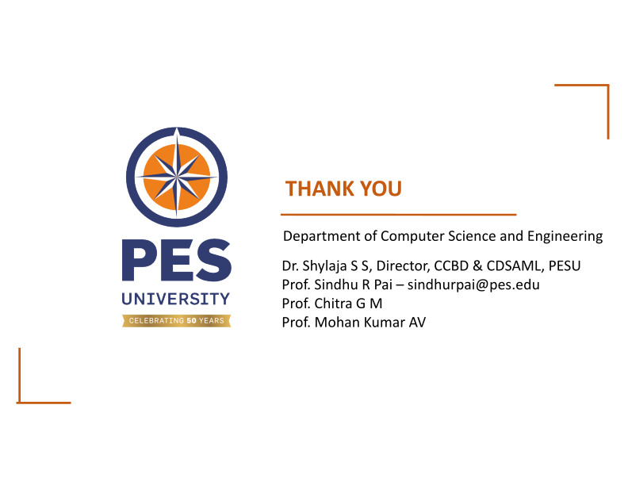
Important points and why
- Source slide page 1 (extracted text): PYTHON FOR COMPUTATIONAL PROBLEM SOLVING Dictionaries in python Prof. Sindhu R Pai PCPS Theory Anchor - 2024 Department of Computer Science and Engineering EV0000126 · EV0000127 · EV0000128
- Source slide page 2 (extracted text): PYTHON FOR COMPUTATIONAL PROBLEM SOLVING Dictionary Dictionary • Dictionary is a data structure that organizes data into key and value pairs • Every value has a certain unique key mapped to it • It is mutable (values can be changed after creation) Dictionary Creation >>> phonebook={} # Creation of empty dictionary >>> phonebook={"Johan":938477565} # Dictionary with one key-value pair >>> phonebook={"Johan":938477565,"Jill":938547565} # Dictionary with two key-value pair EV0000129 · EV0000130 · EV0000131
- Source slide page 3 (extracted text): PYTHON FOR COMPUTATIONAL PROBLEM SOLVING Dictionary To access values in the dictionary, we use the keys like so: >>> eng2french={ 1:’un’, 2:’deux’, 3:’trios’, 4:’quatre’,4: quatre , 5:’cinq } >>> print(eng2french[2]) #will give you ‘deux’ EV0000132 · EV0000133 · EV0000134
- Source slide page 4 (extracted text): PYTHON FOR COMPUTATIONAL PROBLEM SOLVING Dictionary • Each key is of any immutable type associated with a single value. >>> d={1:"one",2:"two",3:"three",4:"four"} >>> d1={[1,2]:"hello"} TracebackTraceback (most(most recentrecent callcall last):last): FileFile "<stdin>""<stdin>", lineline 11, inin <module> TypeError: unhashable type: 'list' • The values can be of any type. >>> d={1:"one", 2:[23,33] , 3:"three", 4:"four"} EV0000135 · EV0000136 · EV0000137
- Source slide page 5 (extracted text): PYTHON FOR COMPUTATIONAL PROBLEM SOLVING Dictionary • If you assign a value to a key, then later in the same dictionary have the same key assigned to a new value, the previous value will be overwritten. >>> dd={1:"one",2:"two",3:"three"}{1 " " 2 " " 3 " h "} >>> d={1:"one",2:"two",3:"three",1:"five"} >>> d {1: 'five', 2: 'two', 3: 'three'} EV0000138 · EV0000139 · EV0000140
- Source slide page 6 (extracted text): PYTHON FOR COMPUTATIONAL PROBLEM SOLVING Dictionary • The items (key-value pair) in dictionary are unordered, which means that the order isn’t decided by the programmer but rather the interpreter. •• TheThe orderingordering isis basedbased onon aa conceptconcept calledcalled “hashing”“hashing” . >>> d={'w':11,'a':33,'e':44} >>> f= {'e':44,'w':11,'a':33} >>> print(d==f) True EV0000141 · EV0000142 · EV0000143
- Source slide page 7 (extracted text): PYTHON FOR COMPUTATIONAL PROBLEM SOLVING Dictionary Common operations on dictionaries • len() • min() • max() Note: Dictionaries do not support ‘+’ and ‘*’ operations EV0000144 · EV0000145 · EV0000146
- Source slide page 8 (extracted text): PYTHON FOR COMPUTATIONAL PROBLEM SOLVING Dictionary Dictionary Functions • get(): returns the value for a given key, if present. >>> print(phonebook.get('Jill’)) 938547565938547565 • items(...) D.items() -> a set-like object providing a view on D’s items. >>> phonebook.items() dict_items([('Johan', 938477565), ('Jill', 938547565)]) EV0000147 · EV0000148 · EV0000149
- Source slide page 9 (extracted text): PYTHON FOR COMPUTATIONAL PROBLEM SOLVING Dictionary • keys(...) D.keys() -> a set-like object providing a view on D’s keys. >>> phonebook.keys() dict_keys(['Johan',_ y ( 'Jill’])) • pop(...) D.pop(key) -> v, remove specified key and return the corresponding value. If key is not found, otherwise KeyError is raised. >>> phonebook.pop(‘Jill’) 938547565 EV0000150 · EV0000151 · EV0000152
- Source slide page 10 (extracted text): PYTHON FOR COMPUTATIONAL PROBLEM SOLVING Dictionary • popitem(...) D.popitem() -> (k, v); remove and return some (key, value) pair as a 2-tuple, but raise KeyError if D is empty. >>>>>> personperson = {'name':{ name : 'Phill',Phill , 'age':age : 22,22, 'salary':salary : 3500.0}3500.0} >>> result = person.popitem() >>> print('Return Value = ', result) Return Value = ('salary', 3500.0) >>> print('person = ', person) person = {'name': 'Phill', 'age': 22} EV0000153 · EV0000154 · EV0000155
- Source slide page 11 (extracted text): PYTHON FOR COMPUTATIONAL PROBLEM SOLVING Dictionary • setdefault(...) D.setdefault(key,value) -> if the key is in the dictionary, returns its value. If the key is not present, insert the key with a specified value and returns that same value. >>> personp = {'name':{ 'Phil',, 'age':g 22}} >>> phone = person.setdefault(‘phone’, 90909090) >>> print('person = ',person) >>> print(‘phone = ‘,phone) Output: person = {‘name’: ‘Phil’, ‘age’: 22, ‘phone’: 90909090} phone = 90909090 EV0000156 · EV0000157 · EV0000158
- Source slide page 12 (extracted text): PYTHON FOR COMPUTATIONAL PROBLEM SOLVING Dictionary • update(...) D.update() -> updates content of D with key-value pairs from a dictionary/iterable that it is given >>> marks = {'Physics':67, 'Maths':87} >>> internal_marks = {'Practical':48} >>> marks.update( [(‘Chemistry’, 90), (‘Python’, 100)] ) >>> marks.update(internal_marks) >>> print(marks) {'Physics': 67, 'Maths': 87, ‘Chemistry’: 90, ‘Python’: 100, 'Practical': 48} 12 EV0000159 · EV0000160 · EV0000161
- Source slide page 13 (extracted text): PYTHON FOR COMPUTATIONAL PROBLEM SOLVING Dictionary • values(...) D.values() -> returns a view object that displays a list of all the values in the dictionary. >>> marksk = {'{'Physics':67,h ' ''Maths':87}h ' } >>> print(marks.values()) dict_values([67, 87]) 13 EV0000162 · EV0000163 · EV0000164
- Source slide page 14 (extracted text): PYTHON FOR COMPUTATIONAL PROBLEM SOLVING Dictionary Use of for and while loops for dictionary 1. for loop Ex: (1) dict = {'a': 'pencil', 'b': ‘eraser', 'c': 'sharpner’} for key, value in dict.items(): print(key, value) Ex: (2) dict = {'a': 'juice', 'b': 'grill', 'c': 'corn’} for key in dict: print(key, dict[key]) 14 EV0000165 · EV0000166 · EV0000167
- Source slide page 15 (extracted text): PYTHON FOR COMPUTATIONAL PROBLEM SOLVING Dictionary Use of for and while loops for dictionary 2. while loop books={"learning python": "Mark Lutz", "think python": "Allen B. Downey", Ex: "Fluent Python":y "Luciano Ramalho"} key=list(books) #converts keys into a list i=0 while i<len(key): print(key[i],":",books[key[i]]) i+=1 15 EV0000168 · EV0000169 · EV0000170
- Source slide page 16 (extracted text): THANK YOU Departmentp of Computerp Science and Engineeringg g Dr. Shylaja S S, Director, CCBD & CDSAML, PESU Prof. Sindhu R Pai – sindhurpai@pes.edu Prof. Chitra G M Prof. Mohan Kumar AV EV0000171 · EV0000172 · EV0000173
4Files
This lesson is indexed from the source video titled Files. Its complete timestamped transcript is preserved below in segment order. The original video path and content hash are recorded in datasets/lecture-corpus.json. Transcript text is source wording; it has not been silently corrected or rewritten. A candidate slide deck is grouped here according to the current matching score; the exact path and page locators are listed in the source evidence. EV0000046 · EV0000047
Graphs and diagrams
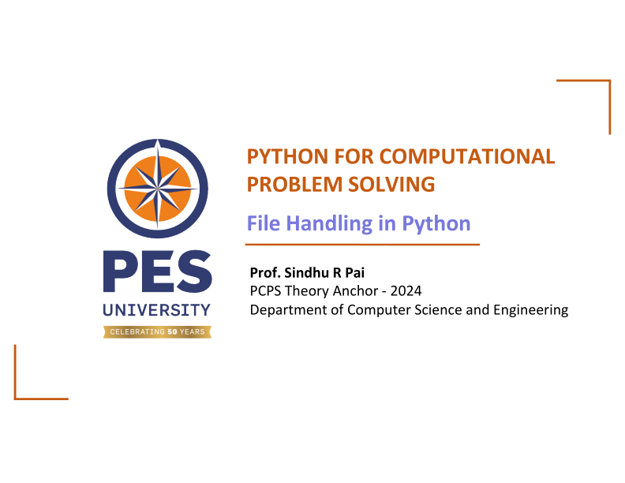
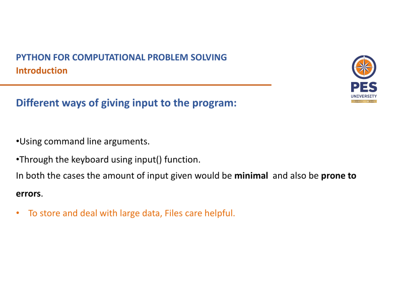
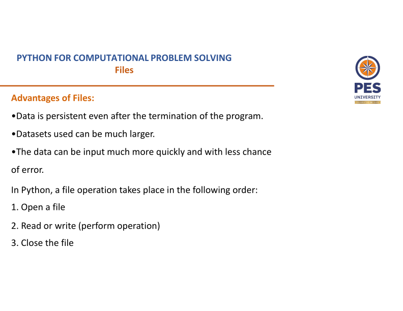
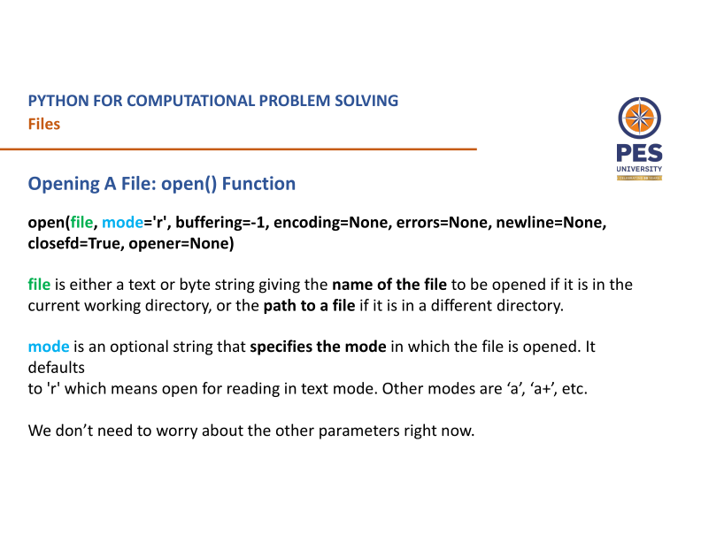
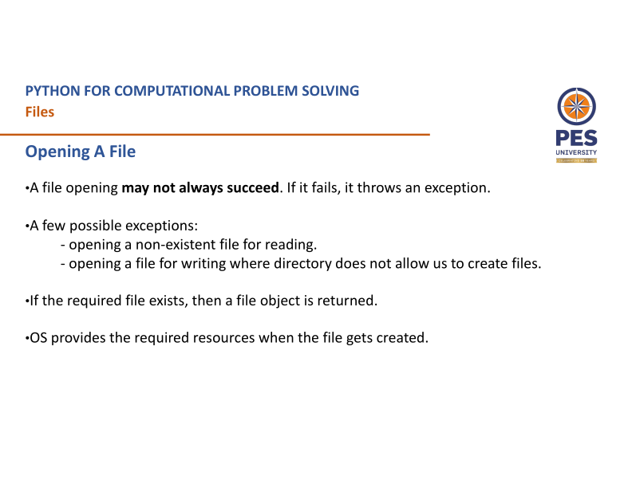
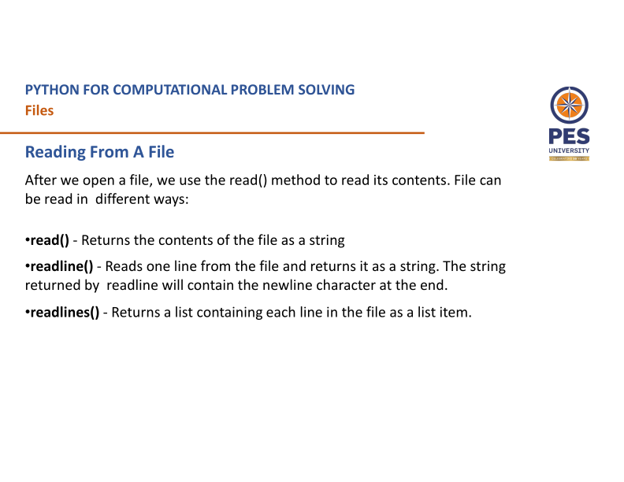
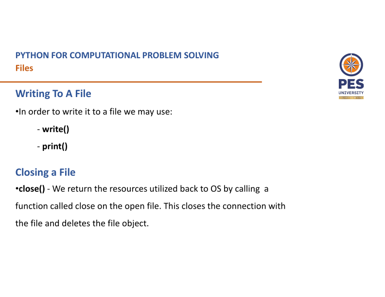
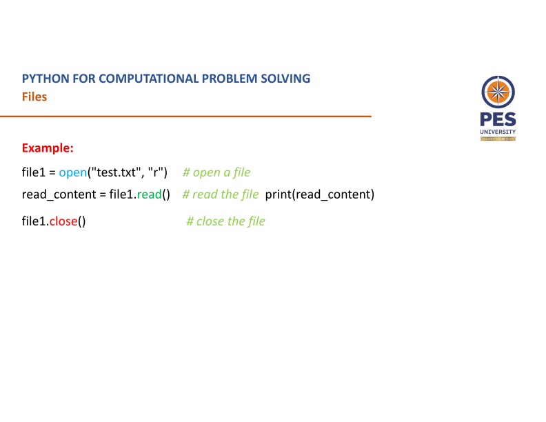
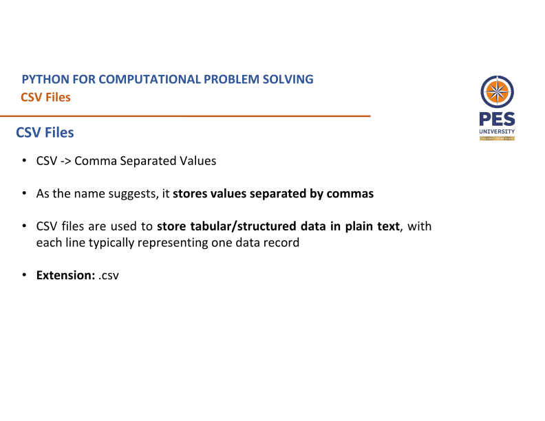
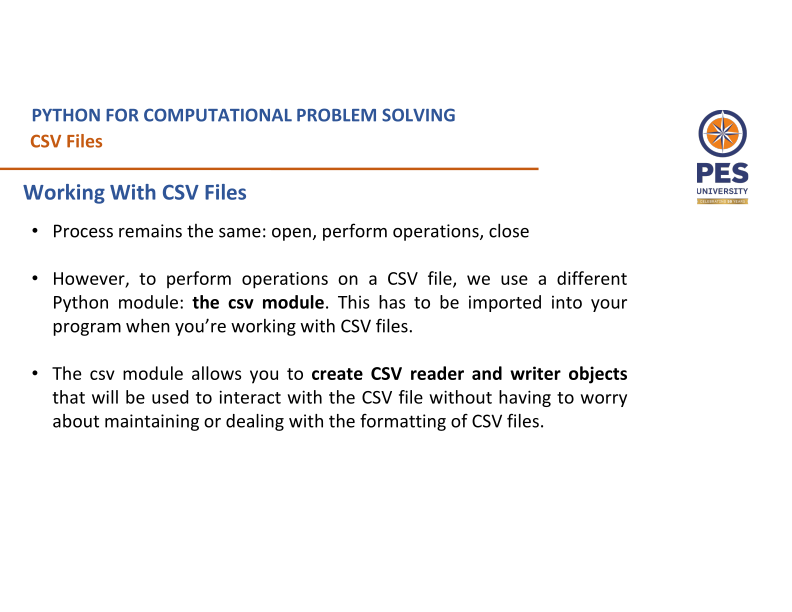
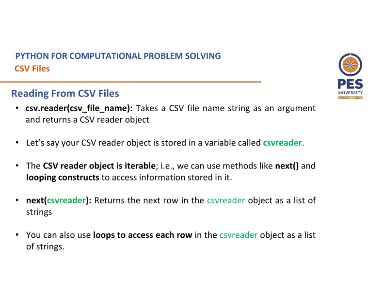
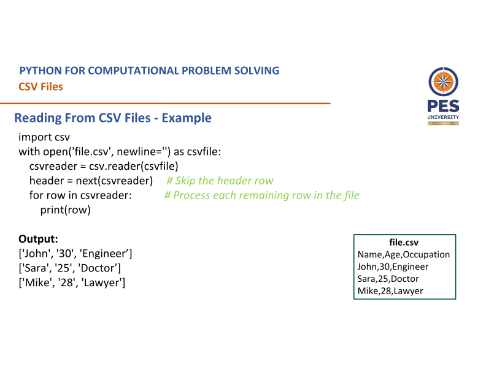
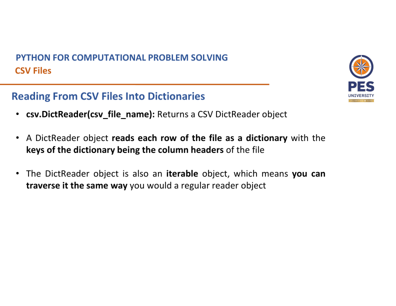
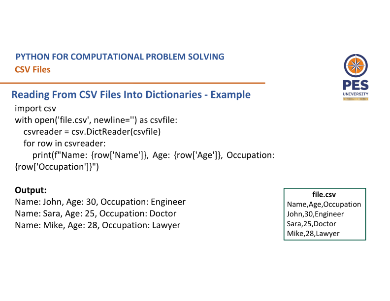
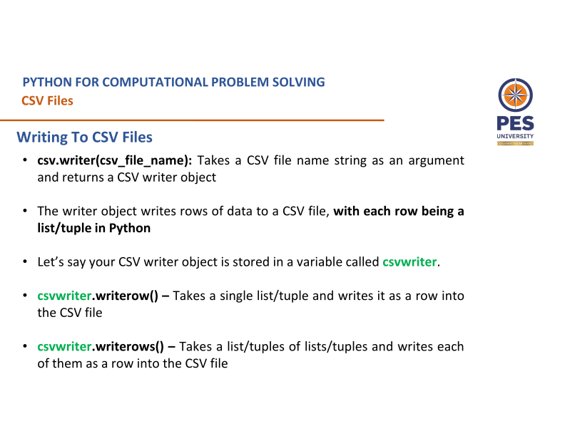
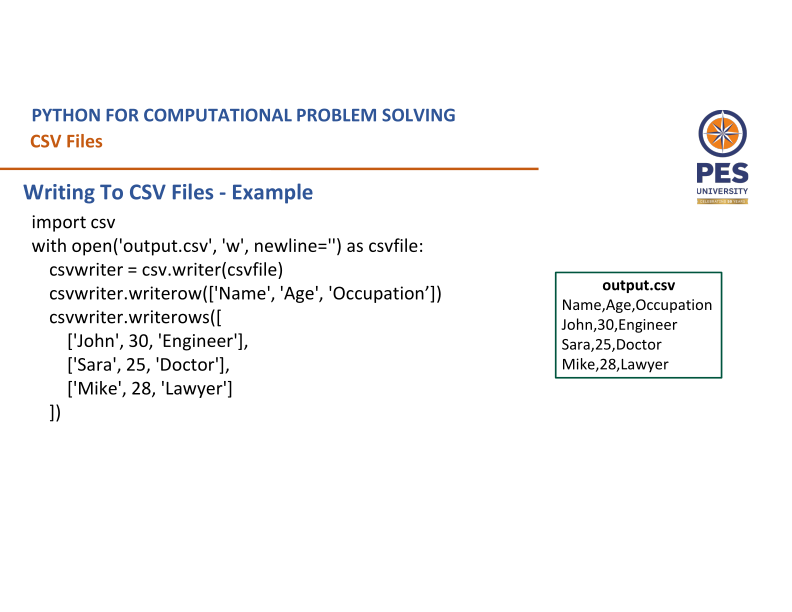
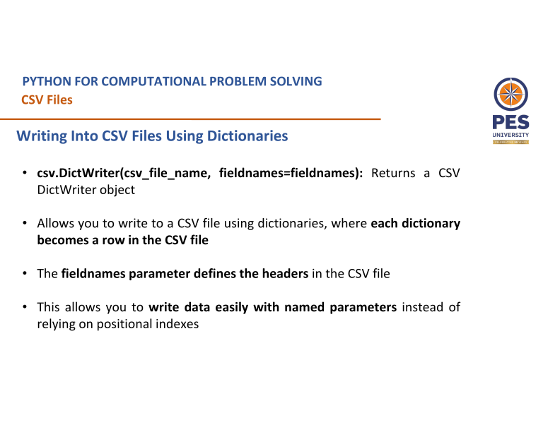
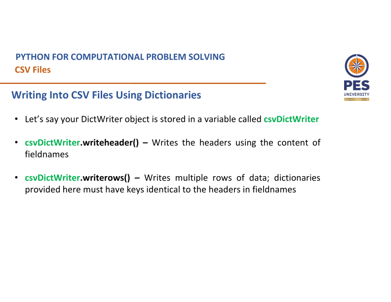
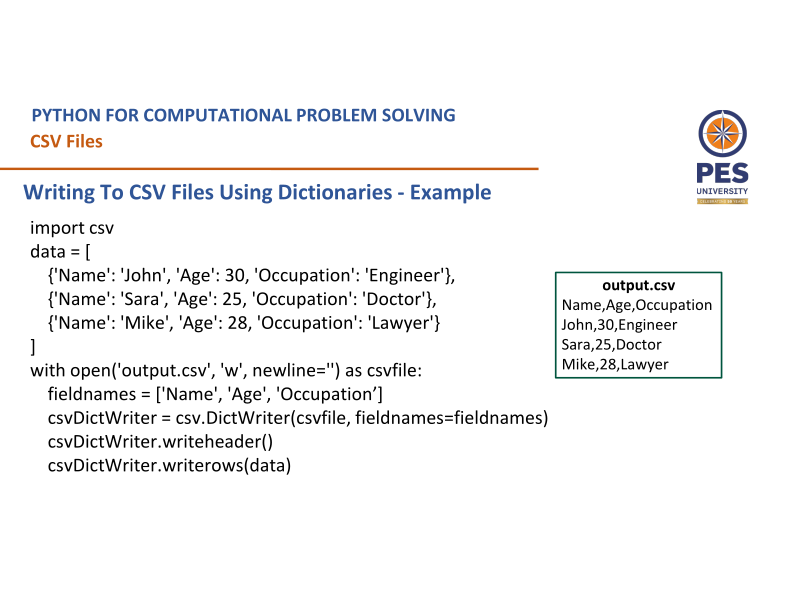
Important points and why
- Source slide page 1 (extracted text): PYTHON FOR COMPUTATIONAL PROBLEM SOLVING File Handling in Python Prof. Sindhu R Pai PCPS Theory Anchor - 2024 Department of Computer Science and Engineering EV0000246 · EV0000247 · EV0000248
- Source slide page 2 (extracted text): PYTHON FOR COMPUTATIONAL PROBLEM SOLVING Introduction Different ways of giving input to the program: •Using command line arguments. •Through the keyboard using input() function. In both the cases the amount of input given would be minimal and also be prone to errors. • To store and deal with large data, Files care helpful. EV0000249 · EV0000250 · EV0000251
- Source slide page 3 (extracted text): PYTHON FOR COMPUTATIONAL PROBLEM SOLVING Files Advantages of Files: •Data is persistent even after the termination of the program. •Datasets used can be much larger. •The data can be inputp much more quicklyq y and with less chance of error. In Python, a file operation takes place in the following order: 1. Open a file 2. Read or write (perform operation) 3. Close the file EV0000252 · EV0000253 · EV0000254
- Source slide page 4 (extracted text): PYTHON FOR COMPUTATIONAL PROBLEM SOLVING Files Opening A File: open() Function open(file, mode='r', buffering=-1, encoding=None, errors=None, newline=None, closefd=True, opener=None) file is either a text or byte string giving the name of the file to be opened if it is in the current working directory, or the path to a file if it is in a different directory. mode is an optional string that specifies the mode in which the file is opened. It defaults to 'r' which means open for reading in text mode. Other modes are ‘a’, ‘a+’, etc. We don’t need to worry about the other parameters right now. EV0000255 · EV0000256 · EV0000257
- Source slide page 5 (extracted text): PYTHON FOR COMPUTATIONAL PROBLEM SOLVING Files Opening A File •A file opening may not always succeed. If it fails, it throws an exception. •A few possible exceptions: - openingopening aa nonnon-existentexistent filefile forfor readingreading. - opening a file for writing where directory does not allow us to create files. •If the required file exists, then a file object is returned. •OS provides the required resources when the file gets created. EV0000258 · EV0000259 · EV0000260
- Source slide page 6 (extracted text): PYTHON FOR COMPUTATIONAL PROBLEM SOLVING Files Reading From A File After we open a file, we use the read() method to read its contents. File can be read in different ways: •read()•read() -- ReturnsReturns thethe contentscontents ofof thethe filefile asas aa stringstring •readline() - Reads one line from the file and returns it as a string. The string returned by readline will contain the newline character at the end. •readlines() - Returns a list containing each line in the file as a list item. EV0000261 · EV0000262 · EV0000263
- Source slide page 7 (extracted text): PYTHON FOR COMPUTATIONAL PROBLEM SOLVING Files Writing To A File •In order to write it to a file we may use: - write() - print()print() Closing a File •close() - We return the resources utilized back to OS by calling a function called close on the open file. This closes the connection with the file and deletes the file object. EV0000264 · EV0000265 · EV0000266
- Source slide page 8 (extracted text): PYTHON FOR COMPUTATIONAL PROBLEM SOLVING Files Example: file1 = open("test.txt", "r") # open a file read_content = file1.read() # read the file print(read_content) file1.close() # close the file EV0000267 · EV0000268 · EV0000269
- Source slide page 9 (extracted text): PYTHON FOR COMPUTATIONAL PROBLEM SOLVING CSV Files CSV Files • CSV -> Comma Separated Values • As the name suggests, it stores values separated by commas • CSV files are used to store tabular/structured data in plain text, with each line typically representing one data record • Extension: .csv EV0000270 · EV0000271 · EV0000272
- Source slide page 10 (extracted text): PYTHON FOR COMPUTATIONAL PROBLEM SOLVING CSV Files Working With CSV Files • Process remains the same: open, perform operations, close • However, to perform operations on a CSV file, we use a different PythonPython module:module: thethe csvcsv modulemodule. ThisThis hashas toto bebe importedimported intointo youryour program when you’re working with CSV files. • The csv module allows you to create CSV reader and writer objects that will be used to interact with the CSV file without having to worry about maintaining or dealing with the formatting of CSV files. EV0000273 · EV0000274 · EV0000275
- Source slide page 11 (extracted text): PYTHON FOR COMPUTATIONAL PROBLEM SOLVING CSV Files Reading From CSV Files • csv.reader(csv_file_name): Takes a CSV file name string as an argument and returns a CSV reader object • Let’s say your CSV reader object is stored in a variable called csvreader. • The CSV reader object is iterable; i.e., we can use methods like next() and looping constructs to access information stored in it. • next(csvreader): Returns the next row in the csvreader object as a list of strings • You can also use loops to access each row in the csvreader object as a list of strings. EV0000276 · EV0000277 · EV0000278
- Source slide page 12 (extracted text): PYTHON FOR COMPUTATIONAL PROBLEM SOLVING CSV Files Reading From CSV Files - Example import csv with open('file.csv', newline='') as csvfile: csvreader = csv.reader(csvfile) header = next(csvreader) # Skip the header row for row in csvreader: # Process each remaining row in the file print(row) Output: file.csv ['John', '30', 'Engineer’] Name,Age,Occupation ['Sara', '25', 'Doctor’] John,30,Engineer Sara,25,Doctor ['Mike', '28', 'Lawyer'] Mike,28,Lawyer EV0000279 · EV0000280 · EV0000281
- Source slide page 13 (extracted text): PYTHON FOR COMPUTATIONAL PROBLEM SOLVING CSV Files Reading From CSV Files Into Dictionaries • csv.DictReader(csv_file_name): Returns a CSV DictReader object • A DictReader object reads each row of the file as a dictionary with the keysy of the dictionaryy beingg the column headers of the file • The DictReader object is also an iterable object, which means you can traverse it the same way you would a regular reader object EV0000282 · EV0000283 · EV0000284
- Source slide page 14 (extracted text): PYTHON FOR COMPUTATIONAL PROBLEM SOLVING CSV Files Reading From CSV Files Into Dictionaries - Example import csv with open('file.csv', newline='') as csvfile: csvreader = csv.DictReader(csvfile) for row in csvreader: print(f"Name: {row['Name']}, Age: {row['Age']}, Occupation: {row['Occupation']}") Output: file.csv Name: John, Age: 30, Occupation: Engineer Name,Age,Occupation Name: Sara, Age: 25, Occupation: Doctor John,30,Engineer Name: Mike, Age: 28, Occupation: Lawyer Sara,25,Doctor Mike,28,Lawyer EV0000285 · EV0000286 · EV0000287
- Source slide page 15 (extracted text): PYTHON FOR COMPUTATIONAL PROBLEM SOLVING CSV Files Writing To CSV Files • csv.writer(csv_file_name): Takes a CSV file name string as an argument and returns a CSV writer object • The writer object writes rows of data to a CSV file, with each row being a list/tuple in Python • Let’s say your CSV writer object is stored in a variable called csvwriter. • csvwriter.writerow() – Takes a single list/tuple and writes it as a row into the CSV file • csvwriter.writerows() – Takes a list/tuples of lists/tuples and writes each of them as a row into the CSV file EV0000288 · EV0000289 · EV0000290
- Source slide page 16 (extracted text): PYTHON FOR COMPUTATIONAL PROBLEM SOLVING CSV Files Writing To CSV Files - Example import csv with open('output.csv', 'w', newline='') as csvfile: csvwriter = csv.writer(csvfile) output.csv csvwriter.writerow(['Name', 'Age', 'Occupation’]) NameName,Age,OccupationAge Occupation csvwriter.writerows([ John,30,Engineer ['John', 30, 'Engineer'], Sara,25,Doctor ['Sara', 25, 'Doctor'], Mike,28,Lawyer ['Mike', 28, 'Lawyer'] ]) EV0000291 · EV0000292 · EV0000293
- Source slide page 17 (extracted text): PYTHON FOR COMPUTATIONAL PROBLEM SOLVING CSV Files Writing Into CSV Files Using Dictionaries • csv.DictWriter(csv_file_name, fieldnames=fieldnames): Returns a CSV DictWriter object • Allows you to write to a CSV file using dictionaries, where each dictionary becomes a row in the CSV file • The fieldnames parameter defines the headers in the CSV file • This allows you to write data easily with named parameters instead of relying on positional indexes EV0000294 · EV0000295 · EV0000296
- Source slide page 18 (extracted text): PYTHON FOR COMPUTATIONAL PROBLEM SOLVING CSV Files Writing Into CSV Files Using Dictionaries • Let’s say your DictWriter object is stored in a variable called csvDictWriter • csvDictWriter.writeheader() – Writes the headers using the content of fifieldnamesld • csvDictWriter.writerows() – Writes multiple rows of data; dictionaries provided here must have keys identical to the headers in fieldnames EV0000297 · EV0000298 · EV0000299
- Source slide page 19 (extracted text): PYTHON FOR COMPUTATIONAL PROBLEM SOLVING CSV Files Writing To CSV Files Using Dictionaries - Example import csv data = [ {'Name': 'John', 'Age': 30, 'Occupation': 'Engineer'}, output.csv {'Name':{ 'Sara',, 'Age':g 25,, 'Occupation':p 'Doctor'},}, NameName,Age,OccupationAge Occupation {'Name': 'Mike', 'Age': 28, 'Occupation': 'Lawyer'} John,30,Engineer ] Sara,25,Doctor Mike,28,Lawyer with open('output.csv', 'w', newline='') as csvfile: fieldnames = ['Name', 'Age', 'Occupation’] csvDictWriter = csv.DictWriter(csvfile, fieldnames=fieldnames) csvDictWriter.writeheader() csvDictWriter.writerows(data) EV0000300 · EV0000301 · EV0000302
- Source slide page 20 (extracted text): THANK YOU Departmentp of Computerp Science and Engineeringg g Dr. Shylaja S S, Director, CCBD & CDSAML, PESU Prof. Sindhu R Pai – sindhurpai@pes.edu Dr. Mohan Kumar A V Ack: Teaching Assistant – Advaith Sanil Kumar EV0000303 · EV0000304 · EV0000305
5Function_Call_Definition_Variable_arguments
This lesson is indexed from the source video titled Function_Call_Definition_Variable_arguments. Its complete timestamped transcript is preserved below in segment order. The original video path and content hash are recorded in datasets/lecture-corpus.json. Transcript text is source wording; it has not been silently corrected or rewritten. A candidate slide deck is grouped here according to the current matching score; the exact path and page locators are listed in the source evidence. EV0000066 · EV0000067
Graphs and diagrams
Important points and why
- Source slide page 1 (extracted text): PYTHON FOR COMPUTATIONAL PROBLEM SOLVING Functions: Definition and Call Prof. Sindhu R Pai PCPS Theory Anchor - 2024 Department of Computer Science and Engineering EV0000345 · EV0000346 · EV0000347
- Source slide page 2 (extracted text): PYTHON FOR COMPUTATIONAL PROBLEM SOLVING Course Overview What are functions? • A function is a self contained block of code that performsperforms aa specificspecific tasktask • Functions ideally take input, performs a set of operations and returns an output to the program that invoked it. 1 EV0000348 · EV0000349 · EV0000350
- Source slide page 3 (extracted text): PYTHON FOR COMPUTATIONAL PROBLEM SOLVING Advantages of functions • Reducing duplication of code and the complexity of the program through modularity. • Improves the readability, enhances the clarity of the program. • Promotes reuse of code. • Debugging and maintenance becomes easier EV0000351 · EV0000352 · EV0000353
- Source slide page 4 (extracted text): PYTHON FOR COMPUTATIONAL PROBLEM SOLVING Functions - Types Types of functions in Python programming: • Built-in functions or Pre-defined – Standard library functions. •• UserUser defineddefined functionsfunctions - DefinedDefined byby useruser forfor specificspecific applicationapplication inin orderorder toto reduce complexity of large programs. EV0000354 · EV0000355 · EV0000356
- Source slide page 5 (extracted text): PYTHON FOR COMPUTATIONAL PROBLEM SOLVING Built-in Functions Built-in functions or Pre-defined – These functions are built into the Python interpreter and can be used/called without the need for additional code. Examples: • print() – Outputs a message to the console or standard output device. • Input() - Takes user input from the console or standard input device. • len() - Returns the length of an object, such as a string, list, or tuple. • type() - Returns the data type of an object. • sorted() - Sorts a list or sequence in ascending order. • abs() - Returns the absolute value of a number. EV0000357 · EV0000358 · EV0000359
- Source slide page 6 (extracted text): PYTHON FOR COMPUTATIONAL PROBLEM SOLVING User Defined Functions • User defined functions – These are the functions defined by the user to aid them in achieving a specific goal. The Python interpreter also supports the user-defined functions created as per the user requirement. The main purpose of these functions is to help in organizing the programsp g into logicalg segmentsg that work togetherg to solve a specificp partp of our problem. Definition: • A function is a block of code which only runs when it is called. • Can pass data, known as parameters (optional), into a function. • A function can return data as a result. EV0000360 · EV0000361 · EV0000362
- Source slide page 7 (extracted text): PYTHON FOR COMPUTATIONAL PROBLEM SOLVING User Defined Functions A function has two parts – leader and suite • The leader starts with the keyword def then the function name • function name is an identifier that starts with alphabets [a- z or A-Z] or _ and then followed by any number of letter of English or _ or digit. • followed by a pair of round parentheses then a colon. • suite follows – suite can have any valid statement of Python including another function definition. • All the statements within the function must be indented. • Finally, use the return (optional) keyword to return the output of the function. • Function must be defined preceding their usage in the program code. Syntax: def function_name(parameters): #suite EV0000363 · EV0000364 · EV0000365
- Source slide page 8 (extracted text): PYTHON FOR COMPUTATIONAL PROBLEM SOLVING Processing of Functions • When the function is defined, header or the leader is processed; the user is provided a name or a handle which is the same as the function name. • A function entity with the function name in the definition along with the suite is stored. • Each entity in Python has a reference count. • At this point of translation, only leader is processed and the suite is not processed. EV0000366 · EV0000367 · EV0000368
- Source slide page 9 (extracted text): PYTHON FOR COMPUTATIONAL PROBLEM SOLVING Function: Call • Name of the function followed by parentheses causes a function call • This results in transfer of control to the leader of the function and then the suite is executed • After that, the control comes back to the point after the function call in the user’s code. • A pair of round parentheses () is called a function call operator. EV0000369 · EV0000370 · EV0000371
- Source slide page 10 (extracted text): PYTHON FOR COMPUTATIONAL PROBLEM SOLVING Function: Call EV0000372 · EV0000373 · EV0000374
- Source slide page 11 (extracted text): PYTHON FOR COMPUTATIONALPROBLEM SOLVING Function Call: Activation record When the function call is made, an activation record is created which will have • Parameters:- nothing but the arguments. • Local variables:- variables created with in the suite of the function. • Return address:- location to which the control of the program should be transferredtransferred onceonce thethe functionfunction terminates.terminates. • Temporary variables:- unnamed variables required by the translator • Return value:- value to be passed back to the caller. The activation record is created for every call of the function. At the end of the function, if no other callable can refer to the activation record, it will be removed. EV0000375 · EV0000376 · EV0000377
- Source slide page 12 (extracted text): PYTHON FOR COMPUTATIONALPROBLEM SOLVING Function Call: Example 1:- def area_rect(x,y) : a=x*y return a a=area_rect(5,6) print("areai t(" =",a)" ) Output: area = 30 EV0000378 · EV0000379 · EV0000380
- Source slide page 13 (extracted text): PYTHON FOR COMPUTATIONALPROBLEM SOLVING Function Overloading: Function overloading is the ability to have multiple functions with the same name but with different signatures/implementations. Python does not support function overloading. When we define multiple functions with the same name, the new function always overrides the prior function. Example:- def add(a,b): p=a+b print(p) def add(a,b,c): p=a+b+c print(p) # add(2,3) this will not run, it gives error add(1,2,3) EV0000381 · EV0000382 · EV0000383
- Source slide page 14 (extracted text): PYTHON FOR COMPUTATIONAL PROBLEM SOLVING User - Defined Functions : Example Example 1: #program to display a greeting message def display(): print("hello") print("python")print( python ) print("program") display() Output: hello python program 14 EV0000384 · EV0000385 · EV0000386
- Source slide page 15 (extracted text): PYTHON FOR COMPUTATIONAL PROBLEM SOLVING Function: Call Example 2: def display() : print("hello") ;print("python") display() display1=displayl l # assigning theh ffunction entity anotherh name # at this point the reference count of the function entity is up by 2 del display # ref count reduces by 1 display1() # still works Output: hello python 15 EV0000387 · EV0000388 · EV0000389
- Source slide page 16 (extracted text): PYTHON FOR COMPUTATIONALPROBLEM SOLVING Multiple Return statements • Functions can have multiple return statements, but any statement after the 1st return statement becomes part of the unreachable code. • The python interpreter is forgiving in terms of letting its programmers make these kind of errors. •• Example:Example:- • def example(): print(“an example function”) return #function ends here print(“after return”) #unreachable return ‘Hello’ #unreachable EV0000390 · EV0000391 · EV0000392
- Source slide page 17 (extracted text): PYTHON FOR COMPUTATIONALPROBLEM SOLVING Function Call: Returning multiple values Example 3-: When a collection of values is returned from def add(): called function, the interpreter puts it a = 12 together into a tuple and returns it to the b = 13 calling program. s = a+b return s,a,b # becomes an unnamed tuple sum = add() print(type(sum)) # <class ‘tuple'> print(sum) # (25, 12, 13) Output: <class ‘tuple'> (25, 12, 13) 17 EV0000393 · EV0000394 · EV0000395
- Source slide page 18 (extracted text): PYTHON FOR COMPUTATIONALPROBLEM SOLVING Function Call: Value returning and Non-Value returning Functions Non-Value Returning Functions – Functions are not required to return a value back to the caller. By default, it returns None. Example 2:- def multiply_numbers(a,b): product=a*bproduct a b print(product) Value Returning Functions – Functions that are required to return a value back to the caller. Example 2:- def multiply_numbers(a,b): n1=10 product=a*b n2=20 return product print(“Product=“,multiply_numbers(n1,n2)) EV0000396 · EV0000397 · EV0000398
- Source slide page 19 (extracted text): PYTHON FOR COMPUTATIONALPROBLEM SOLVING Function Call: Categories of Functions 1. No arguments: No return value 2. No arguments: with return value def add(): def add() a = 10 a=10 b = 20 b=20 print(a+b) return a+b add() sum = add() print(sum) Output: 30 Output: 30 EV0000399 · EV0000400 · EV0000401
- Source slide page 20 (extracted text): PYTHON FOR COMPUTATIONALPROBLEM SOLVING Function Call: Categories of Functions 3. With arguments: No return value 4. With arguments: With return value def add(a,b): def add(a,b): print(a+b) return a+b add(10,20) sum = add(10,20) print(sum)print(sum) Output: 30 EV0000402 · EV0000403 · EV0000404
- Source slide page 21 (extracted text): THANK YOU Departmentp of Computerp Science and Engineeringg g Dr. Shylaja S S, Director, CCBD & CDSAML, PESU Prof. Sindhu R Pai – sindhurpai@pes.edu Dr. Chetana Srinivas Ack: Teaching Assistant – Advaith Sanil Kumar EV0000405 · EV0000406 · EV0000407
6Source slide deck: UE24CS151A PCPS Unit 2 SindhuRPai Class 7 sets
This entry preserves the complete slide deck titled UE24CS151A PCPS Unit 2 SindhuRPai Class 7 sets as searchable extracted page text and page-faithful rendered images. Its association with a particular video is not confirmed; it remains a separate topic under Python for computational Problem Solving, Unit_02, to avoid an unsupported match. EV0000174 · EV0000175
Graphs and diagrams
Important points and why
- Source slide page 1 (extracted text): PYTHON FOR COMPUTATIONAL PROBLEM SOLVING Sets in Python Prof. Sindhu R Pai PCPS Theory Anchor - 2024 Department of Computer Science and Engineering EV0000174 · EV0000175 · EV0000176
- Source slide page 2 (extracted text): PYTHON FOR COMPUTATIONAL PROBLEM SOLVING Introduction Definition:- A set is an unordered collection of Unique elements with zero or more elements present with the following attributes. • In Python sets are written with curly braces. • ConstructorConstructor set()set() isis usedused toto createcreate anan emptyempty setset. Examples : • Empty_set=set() # Use the constructor set(). • fruitset = { “apple”, “orange”, “kiwi”, “banana”, “cherry”} • set1 = {(1, 'a', 'hi'), 2, 'hello', 5.56, 3+5j, True} EV0000177 · EV0000178 · EV0000179
- Source slide page 3 (extracted text): PYTHON FOR COMPUTATIONAL PROBLEM SOLVING Characteristics • Mutable: Modifiable • Unordered – Order of elements in a set need not be same as the order in which we add or delete elements to/from the set. • Iterable – A container object capable of returning its members one at a time. Set is eager and not lazy. •• NotNot indexableindexable - CannotCannot accessaccess itemsitems inin aa setset bby referringreferring toto anan indeindex, sincesince setssets areare unordered in nature. • Check for membership using the in operator is faster in case of a set compared to a list, a tuple or a string. • Sets are used to : o Remove the duplicate elements, inturn allowing us to find the unique elements. o Compare two iterables for common elements or difference. EV0000180 · EV0000181 · EV0000182
- Source slide page 4 (extracted text): PYTHON FOR COMPUTATIONAL PROBLEM SOLVING Characteristics • Elements are unique – does not support repeated elements. • Elements should be hashable. • Hashing is a mechanism to convert the given element into an integer. • An object is hashable if it has a hash value which never changes during its lifetime (it needs a __hash__() method). Examples of hashable objects: • int, float, complex, bool, string, tuple, range, frozenset, bytes, decimal. Examples of Unhashable objects: • list, dict, set, bytearray EV0000183 · EV0000184 · EV0000185
- Source slide page 5 (extracted text): PYTHON FOR COMPUTATIONAL PROBLEM SOLVING Examples • #set1={ [ 1, 'a', 'hi' ], 2, 'hello', {3, 4.5, 'how r u' } } #TypeError: unhashable type: 'list’ • #set2={ ( 1, 'a', 'hi' ), 2, 'hello', {1:'hi', 2:'hello', 3:'how r u'} } #TypeError:yp unhashable type:yp 'dict’ • set3={ ( 1, 'a', 'hi' ), 2, 'hello', 5.56, 3+5j, True } print(set3) #{True, (1, 'a', 'hi'), 2, 5.56, (3+5j), 'hello’} • my_dict = {'name': 'John', tuple([1,2,3]):'values’} print(my_dict) #{'name': 'John', (1, 2, 3): 'values'} EV0000186 · EV0000187 · EV0000188
- Source slide page 6 (extracted text): PYTHON FOR COMPUTATIONAL PROBLEM SOLVING Common methods of Set There are number of functions built into Python that takes set as the arguments. • len() • sum() • sorted() • max() • min() Note: Check reversed() EV0000189 · EV0000190 · EV0000191
- Source slide page 7 (extracted text): PYTHON FOR COMPUTATIONAL PROBLEM SOLVING Specific methods of Set The dir() function returns all properties and methods of the specified object. o >>> dir(set) o ['__and__', '__class__', '__class_getitem__', '__contains__', '__delattr__', '__dir__', '__doc__', '__eq__', '__format__', '__ge__', '__getattribute__', '__getstate__', '__gt__', '__hash__', '__iand__', '__init__', '__init_subclass__', '__ior__', '__isub__', '__iter__', '__ixor__', '__le__', '__len__', '__lt__', '__ne__', '__new__', '__or__', '__rand__', '__reduce__', '__reduce_ex__', '__repr__', '__ror__', '__rsub__', '__rxor__', '__setattr__', '__sizeof__', '__str__', '__sub__', '__subclasshook__', '__xor__', 'add', 'clear', 'copy', 'difference', 'difference_update', 'discard', 'intersection', 'intersection_update', 'isdisjoint', 'issubset', 'issuperset', 'pop', 'remove', 'symmetric_difference', 'symmetric_difference_update', 'union', 'update'] EV0000192 · EV0000193 · EV0000194
- Source slide page 8 (extracted text): PYTHON FOR COMPUTATIONAL PROBLEM SOLVING Methods in detail len() Returns the number of elements in a >>> set1={22,33,11,55,44,120} container set. >>> len(set1) 6 max() Returns the element from Set with >>> set1={42,73,25,75,64,145} maximumi valuel >>> max(set1)( 1) 25 min() Returns the element from Set with >>> set1={25,43,21,66,45,120} maximum value >>> min(set1) 21 sum() Returns the sum of elements of the Set. >>> set1={4,10,2,7,25} >>> sum(set1) 7 48 EV0000195 · EV0000196 · EV0000197
- Source slide page 9 (extracted text): PYTHON FOR COMPUTATIONAL PROBLEM SOLVING Common methods of Set sorted() Returns the sorted sequence or sorted >>> set1={22,33,11,55,44,120} collection in the form of list. >>> sorted(set1) [11, 22, 33, 44, 55, 120] >>>>>> s4={"pes"s4={ pes ,0,1}0 1} >>> sorted(s4) Traceback (most recent call last): File "<stdin>", line 1, in <module> TypeError: '<' not supported between instances of 'str' and 'int' 7 EV0000198 · EV0000199 · EV0000200
- Source slide page 10 (extracted text): PYTHON FOR COMPUTATIONAL PROBLEM SOLVING Common operators applied on set Concatenation (|=) operator can be used to combine two sets together, results in a set that contains items of the two sets. >>> s1={1,2.34,(34,22),"python"} >>> s2={10,3.22,"programming"} >>> s1|=s2 >>> s1 {1, 2.34, 'python', (34, 22), 3.22, 'programming', 10} Repetition operator(*) – Throws an error as set has unique elements. >>> s1={1,2,3,4,5,6} >>> print(s1*3) Traceback (most recent call last): File "<stdin>", line 1, in <module> TypeError: unsupported operand type(s) for *: 'set' and 'int’ • EV0000201 · EV0000202 · EV0000203
- Source slide page 11 (extracted text): PYTHON FOR COMPUTATIONAL PROBLEM SOLVING Common operators applied on set Something to find out: Why are we using the |= operator here? We used the + operator for lists and tuples, so why not use that here? What’s the difference between +, |, and |=? EV0000204 · EV0000205 · EV0000206
- Source slide page 12 (extracted text): PYTHON FOR COMPUTATIONAL PROBLEM SOLVING Common operators applied on set Membership operator(in) – returns True if a sequence with the specified value is present in the string otherwise False. >>> s1={1,2,3,4,5,6} >>> print(1 in s1) True >>>>>> print('a'print( a inin s1)s1) False Membership(not in) operator- Returns True if the element is not present in the set, else return False. >>> s1={1,2.34,(34,22),"python"} >>> "PYTHON" not in s1 True >>> (34,22) not in s1 False EV0000207 · EV0000208 · EV0000209
- Source slide page 13 (extracted text): PYTHON FOR COMPUTATIONAL PROBLEM SOLVING Specific functions of set union()- Return the union of sets as a new set. (i.e. all elements that are in either set.) . >>> s1={1,2,3,4,5,6} >>> s2={6,5,7,8,9,10} >>> print(s1.union(s2)) or >>> print(s1|s2) {1{1, 22, 33, 44, 55, 66, 77, 88, 99, 10}10} {1{1, 22, 33, 44, 55, 66, 77, 88, 99, 10}10} intersection()- Return the intersection of sets as a new set. (i.e. all elements that are in both sets.) . >>> s1={1,2,3,4,5,6} >>> s2={6,5,7,8,9,10} >>> print(s1.intersection(s2)) or >>> print(s1&s2) {5, 6} {5, 6} EV0000210 · EV0000211 · EV0000212
- Source slide page 14 (extracted text): PYTHON FOR COMPUTATIONAL PROBLEM SOLVING Specific functions of set difference()- Return the difference of two or more sets as a new set. >>> s1={1,2,3,4,5,6} >>> s2={6,5,7,8,9,10} >>> print(s1.difference(s2)) or >>> print(s1-s2) {1, 2, 3, 4} {1, 2, 3, 4} add()- adds an element in a container set. >>> s1={1,2,3,4,5,6} >>>s1={1,2,3,4,5,6} >>> s1.add(7) >>> s1.add(“pes”) >>> s1 >>> s1 {1, 2, 3, 4, 5, 6, 7} {1, 2, 3, 4, 5, 6, “pes”} EV0000213 · EV0000214 · EV0000215
- Source slide page 15 (extracted text): PYTHON FOR COMPUTATIONAL PROBLEM SOLVING Specific functions of set symmetric_difference()- Return a set with the symmetric differences of two sets. >> s1={1,2,3,4,5,6} >>> s2={6,5,7,8,9,10} >>> print(s1.symmetric_difference(s2)) or >>> print(s1^s2) {1{1, 22, 33, 44, 77, 88, 99, 10}10} {1{1, 22, 33, 44, 77, 88, 99, 10}10} remove()- Removes the specified item in a set. If the item to remove does not exist, remove() will raise an error. >>> s1={1,2,3,4,5,6} >>> s1.remove(5) or >>> s1.remove(7) >>> print(s1) Displays an error {1, 2, 3, 4, 6} EV0000216 · EV0000217 · EV0000218
- Source slide page 16 (extracted text): PYTHON FOR COMPUTATIONAL PROBLEM SOLVING Specific functions of set discard()- Removes the specified item in a set. If the item to remove does not exist, discard() will NOT raise an error. >>> s1={1,2,3,4,5,6} >>> s1.remove(6) or >>> s1.discard(7) >>> print(s1) Doesn’t display an Error. {1{1, 22, 33, 44, 5}5} pop()- Removes an item in a set. Sets are unordered, so when using the pop() method, doesn’t know which item that gets removed. >>> s1={1,2,3,4,5,6} >>> s1.pop() 1 >>> print(s1) {2, 3, 4, 5, 6} EV0000219 · EV0000220 · EV0000221
- Source slide page 17 (extracted text): PYTHON FOR COMPUTATIONAL PROBLEM SOLVING Specific functions of set update()- updates the current set, by adding items from another set (or any other iterable). If the element is present in both the sets, only one appearance of element present in updated set >>> s1={120,12,23} >>> s1.update([22,15,67,"pes"]) >>>>>> s1s1 {67, 12, 15, 22, 23, 120, 'pes’} intersection_update()- Removes the items that is not present in both sets. >>> set1={"apple", "banana", "cherry"} >>> set2={"google", "microsoft", "apple"} >>> set1.intersection_update(set2) >>> set1 {'apple'} EV0000222 · EV0000223 · EV0000224
- Source slide page 18 (extracted text): PYTHON FOR COMPUTATIONAL PROBLEM SOLVING Specific functions of set difference_update()- Removes the items that exists in both sets. >>> set1={"apple", "banana", "cherry"} >>> set2={"google", "microsoft", "apple"} >>> set1.difference_update(set2) >>> set1 {'cherry'{ cherry , 'banana’}banana } Symmetric_difference_update()- Updates the original set by removing items that are present in both sets, and inserting the other items. >>> set1={"apple", "banana", "cherry"} >>> set2={"google", "microsoft", "apple"} >>> set1.symmetric_difference_update(set2) >>> set1 {'microsoft', 'google', 'banana', 'cherry'} EV0000225 · EV0000226 · EV0000227
- Source slide page 19 (extracted text): PYTHON FOR COMPUTATIONAL PROBLEM SOLVING Specific functions of set issubset()- Returns True if all items in set ‘x’ are present in set ‘y’. >>> x = {"a", "b", "c"} >>> y = {"f", "e", "d", "c", "b", "a"} >>> x.issubset(y) True >>>>>> yy.issubset(x)issubset(x) False issuperset()- Returns True if all items in set ‘y’ are present in set ‘x’. >>> x = {"f", "e", "d", "c", "b", "a"} >>> y = {"a", "b", "c"} >>> x.issuperset(y) True >>> y.issuperset(x) False EV0000228 · EV0000229 · EV0000230
- Source slide page 20 (extracted text): PYTHON FOR COMPUTATIONAL PROBLEM SOLVING Specific functions of set isdisjoint()- Returns True if no items in set s1 is present in set s2. >>> s1={1,2,5} >>> s2={11,22,55} >>> s1.isdisjoint(s2) True clear()- Removes all the elements in a set. >>> x = {"f", "e", "d", "c", "b", "a"} >>> x.clear() >>> x set() EV0000231 · EV0000232 · EV0000233
- Source slide page 21 (extracted text): PYTHON FOR COMPUTATIONAL PROBLEM SOLVING Example code 1: Display the elements of a set one by one in separated by a space between each of them. a = { 10, 30, 10, 40, 20, 50, 30 } for i in a : print(i, end = “ “ ) Output: 40 10 50 20 30 EV0000234 · EV0000235 · EV0000236
- Source slide page 22 (extracted text): PYTHON FOR COMPUTATIONAL PROBLEM SOLVING Example code 2: Create a set of numbers from 2 to n. Steps: create an empty set and add the elements to it. s = set() n=int(input(“enter the value of n”)) #10 for i in range(2,n+1): s.add(i) print(s) Output: {2, 3, 4, 5, 6, 7, 8, 9, 10} EV0000237 · EV0000238 · EV0000239
- Source slide page 23 (extracted text): PYTHON FOR COMPUTATIONAL PROBLEM SOLVING Example code 3: Program to check whether a set is empty or not. Version 1: Version 2: s1=set() s1=set() if len(s1)==0: if(s1): print("set is empty") print("set is empty") else: else: print("not empty") print(“not empty”) Output: set is empty Note: Empty data structure is False EV0000240 · EV0000241 · EV0000242
- Source slide page 24 (extracted text): THANK YOU Departmentp of Computerp Science and Engineeringg g Dr. Shylaja S S, Director, CDSAML & CCBD, PESU Prof. Sindhu R Pai – sindhurpai@pes.edu Prof. Chitra G M Dr. Chethana Srinivas 24 EV0000243 · EV0000244 · EV0000245
7Source slide deck: JSON
This entry preserves the complete slide deck titled JSON as searchable extracted page text and page-faithful rendered images. Its association with a particular video is not confirmed; it remains a separate topic under Python for computational Problem Solving, Unit_02, to avoid an unsupported match. EV0000306 · EV0000307
Graphs and diagrams
Important points and why
- Source slide page 1 (extracted text): Python For Computational Problem Solving- UE26CS151A Dr Manjula K Professor, PCPS Anchor 2026 Department of CSE(AIML) EV0000306 · EV0000307 · EV0000308
- Source slide page 2 (extracted text): Python For Computational Problem Solving Introduction to JSON What is Json JSON = JavaScript Object Notation It is a text-based format for representing structured data as key–value pairs, arrays, and nested combinations of both Example: Properties/Features: { It’s language independent "name": "Alison", The information is represented in "age": 21, dictionary form making retrieval easy "enrolled": true, It’s lightweight as it stores info in text "courses": ["PCPS", "DSA"] form } It cannot hold executable data(including virus) making it safe to It is used in Web APIs, accept from outside sources config files etc EV0000309 · EV0000310 · EV0000311
- Source slide page 3 (extracted text): Python For Computational Problem Solving Introduction to JSON Only 6 data types exist in JSON. Every one has a direct Python equivalent, which is why json.load() can hand you back native Python objects with zero manual conversion: JSON type Python type Notes object {} dict unordered key–value pairs array [] list ordered, can mix types "string" str must use double quotes JSON doesn't distinguish; number int or float Python infers from format lowercase in JSON, true / false True / False capitalized in Python null None represents "no value" EV0000312 · EV0000313 · EV0000314
- Source slide page 4 (extracted text): Python For Computational Problem Solving Syntax rules in JSON compared to Python Keys must be double-quoted strings — {'name': 'Adrian'} (Python dict syntax, single quotes) is not valid JSON No trailing commas — ["PCPS", "DSA",] will fail to parse. Python tuples/lists tolerate this, JSON does not No comments allowed in JSON — unlike Python # or JS // Numbers can't have leading zeros (007 is invalid) and can't be NaN/Infinity EV0000315 · EV0000316 · EV0000317
- Source slide page 5 (extracted text): Python For Computational Problem Solving Json module and functions Core Json functions import json There are 4 fundamental json functions used to serialize orPython’s standard deserialize a json file library Serialize Deserialize Python → Json Json → Python File json.dump(obj,file) json.load(file) json.loads(str) json.dumps(obj) returns String → returns str object EV0000318 · EV0000319 · EV0000320
- Source slide page 6 (extracted text): Python For Computational Problem Solving Json.dump() import jsonjson.dump() serializes a Python object and writes the resulting student = {"name": "Rigel", "age": 20, JSON text directly into an open "department": "CS"} file. with open("student.json", "w") as file:dump() returns None json.dump(student, file, indent=4)Because it streams the translated data straight to the disk, it is highly efficient dump() writes incrementally It takes your Python data (like a If the program crashes mid-write without the file being properly closed,dictionary or a list) and writes it you can end up with a truncated,directly into a .json file on your unparseable JSON file. hard drive. The with block guarantees the file closes (and flushes) even on error EV0000321 · EV0000322 · EV0000323
- Source slide page 7 (extracted text): Python For Computational Problem Solving Json.load() It reads a static .json file from your hard drive and ingests its contents directly into your Python import json environment. It deserializes json’s universal text with open("data.json") as f:format into dynamic, manipulable Python objects like dictionaries(for data=json.load(f) objects) and lists(for arrays) It’s input must be a file object print(data["name"]) opened in read mode(‘r’). print(type(data)) # <class 'dict'>It automatically translates JSON structures to their Python equivalents without manual parsing EV0000324 · EV0000325 · EV0000326
- Source slide page 8 (extracted text): Python For Computational Problem Solving Json.dumps() It translates python object into import jsonjson string format and stores it as a text variable within the system ram data = {"name": "Laken", "age": 21}than writing it into disk. Because HTTP APIs and internet json_str = json.dumps(data, protocols communicate exclusively indent=4) via text, dumps() is your primary mechanism for packaging complex print(json_str) backend data for network print(type(json_str)) # <class 'str'> transmission. The letter ‘s’ here stands for string EV0000327 · EV0000328 · EV0000329
- Source slide page 9 (extracted text): Python For Computational Problem Solving Json.loads() It deserializes JSON format import json strings within the program’s into json_str = '{"name": "Holly", "age": 21}'python objects. It’s primary input is text variable data = json.loads(json_str)within the program print(data["name"]) When your backend receives an print(type(data)) # <class 'dict'> API payload or a scraped web response, it arrives as a text json_str above is a Python stringstring. loads() is the tool that containing double quotes inside singledecodes that raw text into actionable data you can quotes. manipulate. json is a strict data interchange protocol which mandates that strings must be in “ The letter ‘s’ here stands for “ string If you wrote '{'name': 'Asha'}' you'd get a Python syntax error EV0000330 · EV0000331 · EV0000332
- Source slide page 10 (extracted text): Python For Computational Problem Solving Common errors and good practices The Translation Crash: JSON is very basic and only understands simple things like text, numbers, and lists. It has no idea what a Python date, set, or custom object is. If you try to save them directly, your code will crash. You must simplify them first: turn dates into text strings, and turn sets into normal lists. The Sneaky Key Change: Python lets you use numbers as dictionary keys (like {1: "apple"}). JSON absolutely refuses this and only allows text keys. It will quietly change your number 1 into a text string "1" without warning you. When you load your data back into Python, you might get bugs because your numbers are now text. The Broken Data Trap: Never blindly trust a JSON file from the internet or a user. If the file is missing even a single comma or quote, your entire program will instantly crash when it tries to read it. Always wrap your code in a try/except block so it catches the error instead of breaking your app. Ugly Text Syndrome: By default, JSON is terrified of accents and special characters. It will take a word like "café" and scramble it into ugly machine code like caf\u00e9. To force it to leave your text alone and keep it readable, you have to tell it ensure_ascii=False when you save the data. The Windows vs. Mac Glitch: Different computers assume different default text formats when opening files. If you do not specify a format, moving a JSON file between computers can scramble the text. Always explicitly write encoding="utf-8" inside your open() function to guarantee it works flawlessly everywhere. EV0000333 · EV0000334 · EV0000335
- Source slide page 11 (extracted text): Python For Computational Problem Solving Summary What JSON is JSON vs Python — matching types A text format for storing data using key-value pairs and lists. It looks a {} object → Python dict lot like a Python dictionary [] array → Python list Used everywhere: web APIs, config "text" → str files, saving/loading data numbers → int / float Works the same across every true/false → True/False programming language, which is null → None why it's so popular for sharing data The 4 functions — :"s" = string, no "s" = file Rules that trip people up json.dump(obj, file) — write Python JSON keys must always use data into a file double quotes — single quotes json.load(file) — read a file back into are not allowed Python No trailing commas after the json.dumps(obj) — turn Python data last item into a string No comments allowed inside json.loads(string) — turn a string JSON back into Python data EV0000336 · EV0000337 · EV0000338
- Source slide page 12 (extracted text): Python For Computational Problem Solving Time to be smart! Read about TOON(data representation format born out of json) format Project: The Campus Coffee Backend The Mission: Build a simple Flask or FastAPI server that acts as a digital barista. It must receive a raw text coffee order from a student's phone, translate it into Python, calculate the bill, and send a text receipt back. The Rules of the Game: The Internet is a Text Pipe: The phone app cannot send Python objects. It will send a raw JSON string. Your Code Only Speaks Python: You cannot do math on a text string. You must translate the incoming text into a live Python dictionary before calculating the price. The Return Trip: The phone app cannot read Python dictionaries. You must translate your final receipt back into a JSON string before sending it over the network. Your Three Tasks: 1.Catch the Order (Deserialize): Create a web address (an endpoint) called /order. When the phone sends a JSON string like {"student": "John", "drink": "Latte", "quantity": 2}, your server must catch it and convert it into a Python dictionary. 2.Process the Data (Logic): Using Python, look at the dictionary. If a Latte costs $4, multiply that by the quantity to find the total price. Add a "status" tag that says "Order Confirmed". 3.Send the Receipt (Serialize): Create a new dictionary with the final details (student name, drink, total price, and status). Convert this live dictionary back into a flat JSON string and send it back to the phone. The Test (How to know you passed): Input from Phone: {"student": "Alice", "drink": "Espresso", "quantity": 3} Required Output from Server: {"receipt_for": "Alice", "total_due": 12, "status": "Order Confirmed"} EV0000339 · EV0000340 · EV0000341
- Source slide page 13 (extracted text): Thank You Department of CSE (AIML) Dr Manjula K- manjulak@pes.edu Ack: Teaching Assistant - Sudarshan G(CSE AIML) EV0000342 · EV0000343 · EV0000344
8Source slide deck: UE24CS151A PCPS Unit 2 SindhuRPai Class 16 function positional keyword args
This entry preserves the complete slide deck titled UE24CS151A PCPS Unit 2 SindhuRPai Class 16 function positional keyword args as searchable extracted page text and page-faithful rendered images. Its association with a particular video is not confirmed; it remains a separate topic under Python for computational Problem Solving, Unit_02, to avoid an unsupported match. EV0000408 · EV0000409
Graphs and diagrams

Important points and why
- Source slide page 1 (extracted text): PYTHON FOR COMPUTATIONAL PROBLEM SOLVING Functions: Positional and KKeywordd AArgumentst Prof. Sindhu R Pai PCPS Theory Anchor - 2024 Department of Computer Science and Engineering EV0000408 · EV0000409 · EV0000410
- Source slide page 2 (extracted text): PYTHON FOR COMPUTATIONALPROBLEM SOLVING Function Call: Keyword and Positional Arguments When we call a function in Python, we can pass in two different types of arguments: 1. Keyword arguments (named arguments) – Arguments passed to a function or method which is preceded by a keyword (parameter_name) and an equalsequals signsign. ArgumentArgument namename mustmust bebe samesame asas thethe parameterparameter namename inin thethe function definition. 2. Positional arguments – Arguments that need to be included in the proper position or order. Note: If there are both keyword and positional arguments, keyword arguments must follow positional arguments. EV0000411 · EV0000412 · EV0000413
- Source slide page 3 (extracted text): PYTHON FOR COMPUTATIONALPROBLEM SOLVING Function Call: Keyword and Positional Arguments Differences Keyword arguments Positional arguments Parameter names are used to pass the Arguments are passed in the order of argumentg duringg the call parameters.p The order defined in the order function declaration. Order of parameter Names can be Order of values cannot be changed to changed to avoid pass the argument(or values). the unexpected output. Syntax : – Syntax : – FunctionName(paramName=value,…) FunctionName(value1,value2,value3…) EV0000414 · EV0000415 · EV0000416
- Source slide page 4 (extracted text): PYTHON FOR COMPUTATIONALPROBLEM SOLVING Function Call: Keyword and Positional Arguments Keyword arguments (named arguments) Example 1: - def nameAge(name, age): print(“Hiprint( Hi, II am”name)am ,name) print(“My age is ”,age) nameAge(name=“Rajeev”, age=26) nameAge(age=26, name=“Rajeev”) EV0000417 · EV0000418 · EV0000419
- Source slide page 5 (extracted text): PYTHON FOR COMPUTATIONALPROBLEM SOLVING Function Call: Keyword and Positional Arguments in Python Positional arguments Example 2: - def minus(a,b): returnreturn aa-bb X=20;Y=10 print(“Difference between two numbers is=”,minus(X,Y)) EV0000420 · EV0000421 · EV0000422
- Source slide page 6 (extracted text): PYTHON FOR COMPUTATIONALPROBLEM SOLVING Function Call: Keyword and Positional Arguments in Python Combination of both Positional and keyword arguments Rule: All keyword arguments must follow positional arguments Example 3:- defdef f1(xf1(x, yy, zz, aa, b):b): print(a, b, x, y, z) f1(3,5,z = {4,5},b = [12,7,8,4], a = 99.7) # 99.7 [12, 7, 8, 4] 3 5 {4, 5} f1(3,5,x = {4,5},b = [12,7,8,4], a = 99.7) #TypeError: f1() got multiple values for argument 'x' f1(x = 9, y = 99,2,3,b = 22) #SyntaxError: positional argument follows keyword argument EV0000423 · EV0000424 · EV0000425
- Source slide page 7 (extracted text): PYTHON FOR COMPUTATIONALPROBLEM SOLVING Function Call: Default Parameters Default parameters are always a part of the symbol table which is added during the leader processing phase. If the user did not send any argument, then this default parameter is used in the processing. Example 4:- Example 5:- defdef f1(af1(a,b=5):b=5): x=12x=12 print(a,b) def f1(a,b=x): f1(4) print(a,b) f1(4,13) f1(4) f1(4,13) EV0000426 · EV0000427 · EV0000428
- Source slide page 8 (extracted text): THANK YOU Departmentp of Computerp Science and Engineeringg g Dr. Shylaja S S, Director, CCBD & CDSAML, PESU Prof. Sindhu R Pai – sindhurpai@pes.edu Dr. Chetana Srinivas EV0000429 · EV0000430 · EV0000431
9Source slide deck: UE24CS151A PCPS Unit 2 SindhuRPai Class 17 18 Variable number args kw args
This entry preserves the complete slide deck titled UE24CS151A PCPS Unit 2 SindhuRPai Class 17 18 Variable number args kw args as searchable extracted page text and page-faithful rendered images. Its association with a particular video is not confirmed; it remains a separate topic under Python for computational Problem Solving, Unit_02, to avoid an unsupported match. EV0000432 · EV0000433
Graphs and diagrams
Important points and why
- Source slide page 1 (extracted text): PYTHON FOR COMPUTATIONAL PROBLEM SOLVING Functions: Variable number of positionaliti l args andd KKeywordd args Prof. Sindhu R Pai PCPS Theory Anchor - 2024 Department of Computer Science and Engineering EV0000432 · EV0000433 · EV0000434
- Source slide page 2 (extracted text): PYTHON FOR COMPUTATIONALPROBLEM SOLVING Function Call: Arguments and Parameters • In the function definition, variables are specified which receive the arguments when the function is called or invoked. These are called parameters. • The parameters are always variables. • When the function call is made, the control is transferred to the function definition. The arguments are evaluated and copied to the corresponding parameters. • This is called parameter passing by value or call by value. • The value of arguments are passed by value to the parameters. 2 EV0000435 · EV0000436 · EV0000437
- Source slide page 3 (extracted text): PYTHON FOR COMPUTATIONALPROBLEM SOLVING Function Call: Arguments and Parameters • When a function performs a specified task, it may require some values to operate on. • These values have to be provided when calling a function as input. • These values have to be put within the pair of round parentheses in the function call. • They are called as arguments. 3 EV0000438 · EV0000439 · EV0000440
- Source slide page 4 (extracted text): PYTHON FOR COMPUTATIONALPROBLEM SOLVING Function: Global and Local variables There are two types of variables • Global Variables: Variables created outside all functions. Scope of Global variable is within the file and outside that file too. • Local variables: Variables created inside the function and accessible only to that function. Scope of the local variable is within the function. ExampleExample 1:1: x=10 print("global first outside",x) def f1(): x=11 #local variable x. #Life and scope is only within this function print("inside",x) f1() print("global second outside",x) 4 EV0000441 · EV0000442 · EV0000443
- Source slide page 5 (extracted text): PYTHON FOR COMPUTATIONALPROBLEM SOLVING Function: Global and Local variables Example 2: Global variable is read-only inside a function. We cannot modify the value of that variable inside the function directly. x=10 print(x) def f1(): x=x+1x=x+1 #UnboundLocalError#UnboundLocalError. print("inside",x) f1() print("outside",x) 5 EV0000444 · EV0000445 · EV0000446
- Source slide page 6 (extracted text): PYTHON FOR COMPUTATIONALPROBLEM SOLVING Function: Global and Local variables Example 3: Usage of global keyword x=10 print("global first outside",x) def f1(): global x x=x+1x=x+1 print("inside",x) f1() print("global second outside",x) #If you interchange the first two statements inside the function, it results in Error. 6 EV0000447 · EV0000448 · EV0000449
- Source slide page 7 (extracted text): PYTHON FOR COMPUTATIONAL PROBLEM SOLVING Function Call: Arguments and Parameters Example 4:- Calculate the sum of two numbers given and return the sum. def add_numbers(x,y): sumsum == xx ++ yy return sum output = add_Numbers(10,5) print(“The sum of two numbers is = ”,output) Output: The sum of two numbers is = 15 7 EV0000450 · EV0000451 · EV0000452
- Source slide page 8 (extracted text): PYTHON FOR COMPUTATIONALPROBLEM SOLVING Function Call: Arguments and Parameters Example 5:- Calculate the area of triangle given the dimensions. def area_tri(b,h) : a=0.5*b*h return a Area=area_tri(5,6) print("area=",Area) • The function definition has two parameters, which indicate that it requires two arguments to be passed when the function is called/invoked. • The arguments are constants in this example, 5 and 6. • These values are copied to the parameters b and h respectively. 8 EV0000453 · EV0000454 · EV0000455
- Source slide page 9 (extracted text): PYTHON FOR COMPUTATIONALPROBLEM SOLVING Function Call: Arguments and Parameters When a function is called, it is imperative that the number of arguments passed MUST ALWAYS MATCH the number of parameters in the function definition Example 6:- def product(x,y,z) : a=x*y*z return a r=product(5,6,2) #r=product(5) #error : too few arguments #r=product(5,6,2,7) #error : too many arguments print(“product =",r) Output: product = 60 9 EV0000456 · EV0000457 · EV0000458
- Source slide page 10 (extracted text): PYTHON FOR COMPUTATIONALPROBLEM SOLVING Function Call: Categories of Functions 1. No arguments : No return value 1. No arguments : with return value def add(): def add() a = 10 a=10 b = 20 b=20 print(a+b) return a+b add() sum = add() print(sum) Output: 30 Output: 30 10 EV0000459 · EV0000460 · EV0000461
- Source slide page 11 (extracted text): PYTHON FOR COMPUTATIONALPROBLEM SOLVING Function Call: Categories of Functions 3. With arguments : No return value 4. With arguments : With return value def add(a,b): def add(a,b): print(a+b) return a+b add(10,20) sum = add(10,20) print(sum)print(sum) Output: 30 11 EV0000462 · EV0000463 · EV0000464
- Source slide page 12 (extracted text): PYTHON FOR COMPUTATIONALPROBLEM SOLVING Variable number of positional arguments: *arg [Any variable can be used with *] • * handles the variable number of positional arguments in the function. • arg is of type tuple inside the function. Example 7: def f1(*arg): print(arg, type(arg)) #arg is of type tuple for i in arg: print(i) f1(2,1,6,4,9,7) #All three function calls are valid f1() f1(2,4) 12 EV0000465 · EV0000466 · EV0000467
- Source slide page 13 (extracted text): PYTHON FOR COMPUTATIONALPROBLEM SOLVING Variable number of keyword arguments: **kwarg [Any variable can be used with **] • ** handles the variable number of keyword arguments in the function. • kwarg is of type dictionary inside the function. Example 8: def f1(**kwarg): print(kwarg, type(kwarg)) #kwarg is of type dict for i in kwarg: print(i,end="") print() for i in kwarg.keys(): print(i,end="") print() for i in kwarg.values(): print(i,end="") 13 f1(a=2,b=1,c=6) EV0000468 · EV0000469 · EV0000470
- Source slide page 14 (extracted text): THANK YOU Departmentp of Computerp Science and Engineeringg g Dr. Shylaja S S, Director, CCBD & CDSAML, PESU Prof. Sindhu R Pai – sindhurpai@pes.edu Dr. Chetana Srinivas EV0000471 · EV0000472 · EV0000473
ASymbol glossary
| Symbol | Name | Meaning | Appears in |
|---|
BSources, coverage and gaps
| Source | Path | Use |
|---|---|---|
| Official unit catalogue | https://huggingface.co/buckets/alvin3y10/data/tree/pesuc/PESU_Materials/units.json | Official course/unit title and index. |
| Lists and Tuples transcript (JSON) | https://huggingface.co/buckets/alvin3y10/data/tree/pesuc/PESU_Materials/Sem-1/UE26CS151A_Python_for_computational_Problem_Solving/Unit_02/AV_Summaries/029_Lists_and_Tuples__c3dbcf69ee3f547f.transcript.json | Full JSON sidecar. Normalized text similarity to canonical JSON: 1.0000; only the JSON segmentation supplies the displayed timestamps. |
| Lists and Tuples transcript (Markdown) | https://huggingface.co/buckets/alvin3y10/data/tree/pesuc/PESU_Materials/Sem-1/UE26CS151A_Python_for_computational_Problem_Solving/Unit_02/AV_Summaries/029_Lists_and_Tuples__c3dbcf69ee3f547f.transcript.md | Full Markdown sidecar. Normalized text similarity to canonical JSON: 1.0000; only the JSON segmentation supplies the displayed timestamps. |
| Lists and Tuples transcript (plain text) | https://huggingface.co/buckets/alvin3y10/data/tree/pesuc/PESU_Materials/Sem-1/UE26CS151A_Python_for_computational_Problem_Solving/Unit_02/AV_Summaries/029_Lists_and_Tuples__c3dbcf69ee3f547f.transcript.txt | Full plain text sidecar. Normalized text similarity to canonical JSON: 0.9995; only the JSON segmentation supplies the displayed timestamps. |
| Lists and Tuples transcript (SRT) | https://huggingface.co/buckets/alvin3y10/data/tree/pesuc/PESU_Materials/Sem-1/UE26CS151A_Python_for_computational_Problem_Solving/Unit_02/AV_Summaries/029_Lists_and_Tuples__c3dbcf69ee3f547f.srt | Full SRT sidecar. Normalized text similarity to canonical JSON: 1.0000; only the JSON segmentation supplies the displayed timestamps. |
| Dictionary transcript (JSON) | https://huggingface.co/buckets/alvin3y10/data/tree/pesuc/PESU_Materials/Sem-1/UE26CS151A_Python_for_computational_Problem_Solving/Unit_02/AV_Summaries/034_Dictionary__9c4cb33a65041296.transcript.json | Full JSON sidecar. Normalized text similarity to canonical JSON: 1.0000; only the JSON segmentation supplies the displayed timestamps. |
| Dictionary transcript (Markdown) | https://huggingface.co/buckets/alvin3y10/data/tree/pesuc/PESU_Materials/Sem-1/UE26CS151A_Python_for_computational_Problem_Solving/Unit_02/AV_Summaries/034_Dictionary__9c4cb33a65041296.transcript.md | Full Markdown sidecar. Normalized text similarity to canonical JSON: 1.0000; only the JSON segmentation supplies the displayed timestamps. |
| Dictionary transcript (plain text) | https://huggingface.co/buckets/alvin3y10/data/tree/pesuc/PESU_Materials/Sem-1/UE26CS151A_Python_for_computational_Problem_Solving/Unit_02/AV_Summaries/034_Dictionary__9c4cb33a65041296.transcript.txt | Full plain text sidecar. Normalized text similarity to canonical JSON: 0.9998; only the JSON segmentation supplies the displayed timestamps. |
| Dictionary transcript (SRT) | https://huggingface.co/buckets/alvin3y10/data/tree/pesuc/PESU_Materials/Sem-1/UE26CS151A_Python_for_computational_Problem_Solving/Unit_02/AV_Summaries/034_Dictionary__9c4cb33a65041296.srt | Full SRT sidecar. Normalized text similarity to canonical JSON: 1.0000; only the JSON segmentation supplies the displayed timestamps. |
| Files transcript (JSON) | https://huggingface.co/buckets/alvin3y10/data/tree/pesuc/PESU_Materials/Sem-1/UE26CS151A_Python_for_computational_Problem_Solving/Unit_02/AV_Summaries/046_Files__6b7a6928ed4ec68a.transcript.json | Full JSON sidecar. Normalized text similarity to canonical JSON: 1.0000; only the JSON segmentation supplies the displayed timestamps. |
| Files transcript (Markdown) | https://huggingface.co/buckets/alvin3y10/data/tree/pesuc/PESU_Materials/Sem-1/UE26CS151A_Python_for_computational_Problem_Solving/Unit_02/AV_Summaries/046_Files__6b7a6928ed4ec68a.transcript.md | Full Markdown sidecar. Normalized text similarity to canonical JSON: 1.0000; only the JSON segmentation supplies the displayed timestamps. |
| Files transcript (plain text) | https://huggingface.co/buckets/alvin3y10/data/tree/pesuc/PESU_Materials/Sem-1/UE26CS151A_Python_for_computational_Problem_Solving/Unit_02/AV_Summaries/046_Files__6b7a6928ed4ec68a.transcript.txt | Full plain text sidecar. Normalized text similarity to canonical JSON: 0.9998; only the JSON segmentation supplies the displayed timestamps. |
| Files transcript (SRT) | https://huggingface.co/buckets/alvin3y10/data/tree/pesuc/PESU_Materials/Sem-1/UE26CS151A_Python_for_computational_Problem_Solving/Unit_02/AV_Summaries/046_Files__6b7a6928ed4ec68a.srt | Full SRT sidecar. Normalized text similarity to canonical JSON: 1.0000; only the JSON segmentation supplies the displayed timestamps. |
| Function_Call_Definition_Variable_arguments transcript (JSON) | https://huggingface.co/buckets/alvin3y10/data/tree/pesuc/PESU_Materials/Sem-1/UE26CS151A_Python_for_computational_Problem_Solving/Unit_02/AV_Summaries/051_Function_Call_Definition_Variable_arguments__33f527b86ff6abf2.transcript.json | Full JSON sidecar. Normalized text similarity to canonical JSON: 1.0000; only the JSON segmentation supplies the displayed timestamps. |
| Function_Call_Definition_Variable_arguments transcript (Markdown) | https://huggingface.co/buckets/alvin3y10/data/tree/pesuc/PESU_Materials/Sem-1/UE26CS151A_Python_for_computational_Problem_Solving/Unit_02/AV_Summaries/051_Function_Call_Definition_Variable_arguments__33f527b86ff6abf2.transcript.md | Full Markdown sidecar. Normalized text similarity to canonical JSON: 1.0000; only the JSON segmentation supplies the displayed timestamps. |
| Function_Call_Definition_Variable_arguments transcript (plain text) | https://huggingface.co/buckets/alvin3y10/data/tree/pesuc/PESU_Materials/Sem-1/UE26CS151A_Python_for_computational_Problem_Solving/Unit_02/AV_Summaries/051_Function_Call_Definition_Variable_arguments__33f527b86ff6abf2.transcript.txt | Full plain text sidecar. Normalized text similarity to canonical JSON: 0.9998; only the JSON segmentation supplies the displayed timestamps. |
| Function_Call_Definition_Variable_arguments transcript (SRT) | https://huggingface.co/buckets/alvin3y10/data/tree/pesuc/PESU_Materials/Sem-1/UE26CS151A_Python_for_computational_Problem_Solving/Unit_02/AV_Summaries/051_Function_Call_Definition_Variable_arguments__33f527b86ff6abf2.srt | Full SRT sidecar. Normalized text similarity to canonical JSON: 1.0000; only the JSON segmentation supplies the displayed timestamps. |
| Slide page text: UE24CS151A PCPS Unit 2 SindhuRPai Class 3 tuples | https://huggingface.co/buckets/alvin3y10/data/tree/pesuc/PESU_Materials/Sem-1/UE26CS151A_Python_for_computational_Problem_Solving/Unit_02/Slides/029_UE24CS151A_PCPS_Unit_2_SindhuRPai_Class__3_tuples__224e54b49870463d.slides.md | Complete extracted page text from the bucket's .slides.md sidecar. |
| Alternate extracted slide page text: UE24CS151A PCPS Unit 2 SindhuRPai Class 3 tuples | https://huggingface.co/buckets/alvin3y10/data/tree/pesuc/PESU_Materials/Sem-1/UE26CS151A_Python_for_computational_Problem_Solving/Unit_02/Slides/029_UE24CS151A_PCPS_Unit_2_SindhuRPai_Class__3_tuples__224e54b49870463d.slides.txt | The bucket's alternate .slides.txt text sidecar; content differences are kept as separate page points. |
| Page-render source for UE24CS151A PCPS Unit 2 SindhuRPai Class 3 tuples (converted PDF; original hash f48314ea61e3a37dde957739f25e19751931c96d26a4c1d7f4015fc3e3fd15f1) | https://huggingface.co/buckets/alvin3y10/data/tree/pesuc/PESU_Materials/Sem-1/UE26CS151A_Python_for_computational_Problem_Solving/Unit_02/Slides/029_UE24CS151A_PCPS_Unit_2_SindhuRPai_Class__3_tuples__224e54b49870463d.pdf | Page inventory and visual source for the rendered original deck; figure pages are derived from this local PDF. The original bucket path/hash are retained in datasets/content-index.json. |
| Slide page text: UE24CS151A PCPS Unit 2 SindhuRPai Class 5 Dictionary | https://huggingface.co/buckets/alvin3y10/data/tree/pesuc/PESU_Materials/Sem-1/UE26CS151A_Python_for_computational_Problem_Solving/Unit_02/Slides/034_UE24CS151A_PCPS_Unit_2_SindhuRPai_Class__5_Dictionary__6034ce750573f32b.slides.md | Complete extracted page text from the bucket's .slides.md sidecar. |
| Alternate extracted slide page text: UE24CS151A PCPS Unit 2 SindhuRPai Class 5 Dictionary | https://huggingface.co/buckets/alvin3y10/data/tree/pesuc/PESU_Materials/Sem-1/UE26CS151A_Python_for_computational_Problem_Solving/Unit_02/Slides/034_UE24CS151A_PCPS_Unit_2_SindhuRPai_Class__5_Dictionary__6034ce750573f32b.slides.txt | The bucket's alternate .slides.txt text sidecar; content differences are kept as separate page points. |
| Page-render source for UE24CS151A PCPS Unit 2 SindhuRPai Class 5 Dictionary (converted PDF; original hash e12e33099905b6cc61d27afa43ae9798feddcd77af96ff7b373169cdeaff78c2) | https://huggingface.co/buckets/alvin3y10/data/tree/pesuc/PESU_Materials/Sem-1/UE26CS151A_Python_for_computational_Problem_Solving/Unit_02/Slides/034_UE24CS151A_PCPS_Unit_2_SindhuRPai_Class__5_Dictionary__6034ce750573f32b.pdf | Page inventory and visual source for the rendered original deck; figure pages are derived from this local PDF. The original bucket path/hash are retained in datasets/content-index.json. |
| Slide page text: UE24CS151A PCPS Unit 2 SindhuRPai Class 7 sets | https://huggingface.co/buckets/alvin3y10/data/tree/pesuc/PESU_Materials/Sem-1/UE26CS151A_Python_for_computational_Problem_Solving/Unit_02/Slides/036_UE24CS151A_PCPS_Unit_2_SindhuRPai_Class__7_sets__443afd074f4cc8c6.slides.md | Complete extracted page text from the bucket's .slides.md sidecar. |
| Alternate extracted slide page text: UE24CS151A PCPS Unit 2 SindhuRPai Class 7 sets | https://huggingface.co/buckets/alvin3y10/data/tree/pesuc/PESU_Materials/Sem-1/UE26CS151A_Python_for_computational_Problem_Solving/Unit_02/Slides/036_UE24CS151A_PCPS_Unit_2_SindhuRPai_Class__7_sets__443afd074f4cc8c6.slides.txt | The bucket's alternate .slides.txt text sidecar; content differences are kept as separate page points. |
| Page-render source for UE24CS151A PCPS Unit 2 SindhuRPai Class 7 sets (converted PDF; original hash d55f37758c0a92a8cfd16debf5d71e7fe5eb8f198e1c939871c68b44e0d77594) | https://huggingface.co/buckets/alvin3y10/data/tree/pesuc/PESU_Materials/Sem-1/UE26CS151A_Python_for_computational_Problem_Solving/Unit_02/Slides/036_UE24CS151A_PCPS_Unit_2_SindhuRPai_Class__7_sets__443afd074f4cc8c6.pdf | Page inventory and visual source for the rendered original deck; figure pages are derived from this local PDF. The original bucket path/hash are retained in datasets/content-index.json. |
| Slide page text: UE24CS151A PCPS Unit 2 SindhuRPai Class 12 13 14 File handling text files CSE files | https://huggingface.co/buckets/alvin3y10/data/tree/pesuc/PESU_Materials/Sem-1/UE26CS151A_Python_for_computational_Problem_Solving/Unit_02/Slides/046_UE24CS151A_PCPS_Unit_2_SindhuRPai_Class__12_13_14_File_handling_text_files_CSE_files__62c9b9d6e05b82d2.slides.md | Complete extracted page text from the bucket's .slides.md sidecar. |
| Alternate extracted slide page text: UE24CS151A PCPS Unit 2 SindhuRPai Class 12 13 14 File handling text files CSE files | https://huggingface.co/buckets/alvin3y10/data/tree/pesuc/PESU_Materials/Sem-1/UE26CS151A_Python_for_computational_Problem_Solving/Unit_02/Slides/046_UE24CS151A_PCPS_Unit_2_SindhuRPai_Class__12_13_14_File_handling_text_files_CSE_files__62c9b9d6e05b82d2.slides.txt | The bucket's alternate .slides.txt text sidecar; content differences are kept as separate page points. |
| Page-render source for UE24CS151A PCPS Unit 2 SindhuRPai Class 12 13 14 File handling text files CSE files (converted PDF; original hash c60226e6bca6d6586282798100dc860deb793fc64d9dc613935de662682a2273) | https://huggingface.co/buckets/alvin3y10/data/tree/pesuc/PESU_Materials/Sem-1/UE26CS151A_Python_for_computational_Problem_Solving/Unit_02/Slides/046_UE24CS151A_PCPS_Unit_2_SindhuRPai_Class__12_13_14_File_handling_text_files_CSE_files__62c9b9d6e05b82d2.pdf | Page inventory and visual source for the rendered original deck; figure pages are derived from this local PDF. The original bucket path/hash are retained in datasets/content-index.json. |
| Slide page text: JSON | https://huggingface.co/buckets/alvin3y10/data/tree/pesuc/PESU_Materials/Sem-1/UE26CS151A_Python_for_computational_Problem_Solving/Unit_02/Slides/050_JSON__ebbb542771842bb1.slides.md | Complete extracted page text from the bucket's .slides.md sidecar. |
| Alternate extracted slide page text: JSON | https://huggingface.co/buckets/alvin3y10/data/tree/pesuc/PESU_Materials/Sem-1/UE26CS151A_Python_for_computational_Problem_Solving/Unit_02/Slides/050_JSON__ebbb542771842bb1.slides.txt | The bucket's alternate .slides.txt text sidecar; content differences are kept as separate page points. |
| Page-render source for JSON (converted PDF; original hash 6d3e445fc984614d9591c7e9bf6f4fb66a9b7bce55ca051618d12a4126586a18) | https://huggingface.co/buckets/alvin3y10/data/tree/pesuc/PESU_Materials/Sem-1/UE26CS151A_Python_for_computational_Problem_Solving/Unit_02/Slides/050_JSON__ebbb542771842bb1.pdf | Page inventory and visual source for the rendered original deck; figure pages are derived from this local PDF. The original bucket path/hash are retained in datasets/content-index.json. |
| Slide page text: UE24CS151A PCPS Unit 2 SindhuRPai Class 15 function definition call | https://huggingface.co/buckets/alvin3y10/data/tree/pesuc/PESU_Materials/Sem-1/UE26CS151A_Python_for_computational_Problem_Solving/Unit_02/Slides/051_UE24CS151A_PCPS_Unit_2_SindhuRPai_Class__15_function_definition_call__cdc703c5984aeb67.slides.md | Complete extracted page text from the bucket's .slides.md sidecar. |
| Alternate extracted slide page text: UE24CS151A PCPS Unit 2 SindhuRPai Class 15 function definition call | https://huggingface.co/buckets/alvin3y10/data/tree/pesuc/PESU_Materials/Sem-1/UE26CS151A_Python_for_computational_Problem_Solving/Unit_02/Slides/051_UE24CS151A_PCPS_Unit_2_SindhuRPai_Class__15_function_definition_call__cdc703c5984aeb67.slides.txt | The bucket's alternate .slides.txt text sidecar; content differences are kept as separate page points. |
| Page-render source for UE24CS151A PCPS Unit 2 SindhuRPai Class 15 function definition call (converted PDF; original hash c658adc22df5ed0170035e56c1f1e3a699d4178f0fb43230ab11d8c0d18821b8) | https://huggingface.co/buckets/alvin3y10/data/tree/pesuc/PESU_Materials/Sem-1/UE26CS151A_Python_for_computational_Problem_Solving/Unit_02/Slides/051_UE24CS151A_PCPS_Unit_2_SindhuRPai_Class__15_function_definition_call__cdc703c5984aeb67.pdf | Page inventory and visual source for the rendered original deck; figure pages are derived from this local PDF. The original bucket path/hash are retained in datasets/content-index.json. |
| Slide page text: UE24CS151A PCPS Unit 2 SindhuRPai Class 16 function positional keyword args | https://huggingface.co/buckets/alvin3y10/data/tree/pesuc/PESU_Materials/Sem-1/UE26CS151A_Python_for_computational_Problem_Solving/Unit_02/Slides/052_UE24CS151A_PCPS_Unit_2_SindhuRPai_Class__16_function_positional_keyword_args__4822af8d67cde0e0.slides.md | Complete extracted page text from the bucket's .slides.md sidecar. |
| Alternate extracted slide page text: UE24CS151A PCPS Unit 2 SindhuRPai Class 16 function positional keyword args | https://huggingface.co/buckets/alvin3y10/data/tree/pesuc/PESU_Materials/Sem-1/UE26CS151A_Python_for_computational_Problem_Solving/Unit_02/Slides/052_UE24CS151A_PCPS_Unit_2_SindhuRPai_Class__16_function_positional_keyword_args__4822af8d67cde0e0.slides.txt | The bucket's alternate .slides.txt text sidecar; content differences are kept as separate page points. |
| Page-render source for UE24CS151A PCPS Unit 2 SindhuRPai Class 16 function positional keyword args (converted PDF; original hash 792efdd1303b9d91389b09b4a2042f4c06dcc9c89cf41cf767c7af0de93e7e12) | https://huggingface.co/buckets/alvin3y10/data/tree/pesuc/PESU_Materials/Sem-1/UE26CS151A_Python_for_computational_Problem_Solving/Unit_02/Slides/052_UE24CS151A_PCPS_Unit_2_SindhuRPai_Class__16_function_positional_keyword_args__4822af8d67cde0e0.pdf | Page inventory and visual source for the rendered original deck; figure pages are derived from this local PDF. The original bucket path/hash are retained in datasets/content-index.json. |
| Slide page text: UE24CS151A PCPS Unit 2 SindhuRPai Class 17 18 Variable number args kw args | https://huggingface.co/buckets/alvin3y10/data/tree/pesuc/PESU_Materials/Sem-1/UE26CS151A_Python_for_computational_Problem_Solving/Unit_02/Slides/053_UE24CS151A_PCPS_Unit_2_SindhuRPai_Class__17_18_Variable_number_args_kw_args__e992709b22b58075.slides.md | Complete extracted page text from the bucket's .slides.md sidecar. |
| Alternate extracted slide page text: UE24CS151A PCPS Unit 2 SindhuRPai Class 17 18 Variable number args kw args | https://huggingface.co/buckets/alvin3y10/data/tree/pesuc/PESU_Materials/Sem-1/UE26CS151A_Python_for_computational_Problem_Solving/Unit_02/Slides/053_UE24CS151A_PCPS_Unit_2_SindhuRPai_Class__17_18_Variable_number_args_kw_args__e992709b22b58075.slides.txt | The bucket's alternate .slides.txt text sidecar; content differences are kept as separate page points. |
| Page-render source for UE24CS151A PCPS Unit 2 SindhuRPai Class 17 18 Variable number args kw args (converted PDF; original hash 14a7b0878d91cb0b8e9ab72ffa872ba4715bd95ed3834b9c977389c05def10f9) | https://huggingface.co/buckets/alvin3y10/data/tree/pesuc/PESU_Materials/Sem-1/UE26CS151A_Python_for_computational_Problem_Solving/Unit_02/Slides/053_UE24CS151A_PCPS_Unit_2_SindhuRPai_Class__17_18_Variable_number_args_kw_args__e992709b22b58075.pdf | Page inventory and visual source for the rendered original deck; figure pages are derived from this local PDF. The original bucket path/hash are retained in datasets/content-index.json. |
Historical question-source excerpts are shown only when a page has a strong text-based unit match. They are source references, not new solutions or exam predictions.
Known gaps, conflicts and corrections
- No historical archive question page met the unit-match candidate threshold; all subject-level and ambiguous pages remain in datasets/question-archive.json.
- 3 transcript segments have low ASR confidence; they are flagged with timestamps in the transcript blocks and indexed in the corpus.
- This is a visibly labelled source-preservation draft. Human page-level semantic and visual review is not complete; no unsupported subject summary or formula correction is claimed.
- The 19.26 GiB MP4 files remain hosted on Hugging Face; the full video path/hash and transcript coverage are indexed. The full audio/video was not watched end-to-end.
- Formula candidates are machine-extracted text with source locators; use the adjacent original slide page and the formula index before treating a candidate as an authoritative equation.
Coverage
Every inventoried source unit has an explicit coverage decision. Covered means reviewed and mapped to content; exclusions and gaps remain visible.
| Evidence | Source unit | Status | Decision |
|---|---|---|---|
| EV0000001 | SRC00001/catalogue | covered | Unit title and index copied from the official units.json catalogue; human content review is pending. |
| EV0000002 | SRC00002/t000000-000299 | covered | Timestamp interval t000000-000299; canonical segment IDs s0001 to s0022. Sidecar variants compare at similarity 1.0000; verbatim transcript text is included in the linked note. This is a source-coverage check, not an audiovisual fact check. |
| EV0000003 | SRC00003/t000000-000299 | covered | Timestamp interval t000000-000299; canonical segment IDs s0001 to s0022. Sidecar variants compare at similarity 1.0000; verbatim transcript text is included in the linked note. This is a source-coverage check, not an audiovisual fact check. |
| EV0000004 | SRC00004/t000000-000299 | covered | Timestamp interval t000000-000299; canonical segment IDs s0001 to s0022. Sidecar variants compare at similarity 0.9995; verbatim transcript text is included in the linked note. This is a source-coverage check, not an audiovisual fact check. |
| EV0000005 | SRC00005/t000000-000299 | covered | Timestamp interval t000000-000299; canonical segment IDs s0001 to s0022. Sidecar variants compare at similarity 1.0000; verbatim transcript text is included in the linked note. This is a source-coverage check, not an audiovisual fact check. |
| EV0000006 | SRC00002/t000300-000599 | covered | Timestamp interval t000300-000599; canonical segment IDs s0023 to s0040. Sidecar variants compare at similarity 1.0000; verbatim transcript text is included in the linked note. This is a source-coverage check, not an audiovisual fact check. |
| EV0000007 | SRC00003/t000300-000599 | covered | Timestamp interval t000300-000599; canonical segment IDs s0023 to s0040. Sidecar variants compare at similarity 1.0000; verbatim transcript text is included in the linked note. This is a source-coverage check, not an audiovisual fact check. |
| EV0000008 | SRC00004/t000300-000599 | covered | Timestamp interval t000300-000599; canonical segment IDs s0023 to s0040. Sidecar variants compare at similarity 0.9995; verbatim transcript text is included in the linked note. This is a source-coverage check, not an audiovisual fact check. |
| EV0000009 | SRC00005/t000300-000599 | covered | Timestamp interval t000300-000599; canonical segment IDs s0023 to s0040. Sidecar variants compare at similarity 1.0000; verbatim transcript text is included in the linked note. This is a source-coverage check, not an audiovisual fact check. |
| EV0000010 | SRC00002/t000600-000899 | covered | Timestamp interval t000600-000899; canonical segment IDs s0041 to s0061. Sidecar variants compare at similarity 1.0000; verbatim transcript text is included in the linked note. This is a source-coverage check, not an audiovisual fact check. |
| EV0000011 | SRC00003/t000600-000899 | covered | Timestamp interval t000600-000899; canonical segment IDs s0041 to s0061. Sidecar variants compare at similarity 1.0000; verbatim transcript text is included in the linked note. This is a source-coverage check, not an audiovisual fact check. |
| EV0000012 | SRC00004/t000600-000899 | covered | Timestamp interval t000600-000899; canonical segment IDs s0041 to s0061. Sidecar variants compare at similarity 0.9995; verbatim transcript text is included in the linked note. This is a source-coverage check, not an audiovisual fact check. |
| EV0000013 | SRC00005/t000600-000899 | covered | Timestamp interval t000600-000899; canonical segment IDs s0041 to s0061. Sidecar variants compare at similarity 1.0000; verbatim transcript text is included in the linked note. This is a source-coverage check, not an audiovisual fact check. |
| EV0000014 | SRC00002/t000900-001199 | covered | Timestamp interval t000900-001199; canonical segment IDs s0062 to s0081. Sidecar variants compare at similarity 1.0000; verbatim transcript text is included in the linked note. This is a source-coverage check, not an audiovisual fact check. |
| EV0000015 | SRC00003/t000900-001199 | covered | Timestamp interval t000900-001199; canonical segment IDs s0062 to s0081. Sidecar variants compare at similarity 1.0000; verbatim transcript text is included in the linked note. This is a source-coverage check, not an audiovisual fact check. |
| EV0000016 | SRC00004/t000900-001199 | covered | Timestamp interval t000900-001199; canonical segment IDs s0062 to s0081. Sidecar variants compare at similarity 0.9995; verbatim transcript text is included in the linked note. This is a source-coverage check, not an audiovisual fact check. |
| EV0000017 | SRC00005/t000900-001199 | covered | Timestamp interval t000900-001199; canonical segment IDs s0062 to s0081. Sidecar variants compare at similarity 1.0000; verbatim transcript text is included in the linked note. This is a source-coverage check, not an audiovisual fact check. |
| EV0000018 | SRC00002/t001200-001499 | covered | Timestamp interval t001200-001499; canonical segment IDs s0082 to s0099. Sidecar variants compare at similarity 1.0000; verbatim transcript text is included in the linked note. This is a source-coverage check, not an audiovisual fact check. |
| EV0000019 | SRC00003/t001200-001499 | covered | Timestamp interval t001200-001499; canonical segment IDs s0082 to s0099. Sidecar variants compare at similarity 1.0000; verbatim transcript text is included in the linked note. This is a source-coverage check, not an audiovisual fact check. |
| EV0000020 | SRC00004/t001200-001499 | covered | Timestamp interval t001200-001499; canonical segment IDs s0082 to s0099. Sidecar variants compare at similarity 0.9995; verbatim transcript text is included in the linked note. This is a source-coverage check, not an audiovisual fact check. |
| EV0000021 | SRC00005/t001200-001499 | covered | Timestamp interval t001200-001499; canonical segment IDs s0082 to s0099. Sidecar variants compare at similarity 1.0000; verbatim transcript text is included in the linked note. This is a source-coverage check, not an audiovisual fact check. |
| EV0000022 | SRC00002/t001500-001799 | covered | Timestamp interval t001500-001799; canonical segment IDs s0100 to s0100. Sidecar variants compare at similarity 1.0000; verbatim transcript text is included in the linked note. This is a source-coverage check, not an audiovisual fact check. |
| EV0000023 | SRC00003/t001500-001799 | covered | Timestamp interval t001500-001799; canonical segment IDs s0100 to s0100. Sidecar variants compare at similarity 1.0000; verbatim transcript text is included in the linked note. This is a source-coverage check, not an audiovisual fact check. |
| EV0000024 | SRC00004/t001500-001799 | covered | Timestamp interval t001500-001799; canonical segment IDs s0100 to s0100. Sidecar variants compare at similarity 0.9995; verbatim transcript text is included in the linked note. This is a source-coverage check, not an audiovisual fact check. |
| EV0000025 | SRC00005/t001500-001799 | covered | Timestamp interval t001500-001799; canonical segment IDs s0100 to s0100. Sidecar variants compare at similarity 1.0000; verbatim transcript text is included in the linked note. This is a source-coverage check, not an audiovisual fact check. |
| EV0000026 | SRC00006/t000000-000299 | covered | Timestamp interval t000000-000299; canonical segment IDs s0001 to s0018. Sidecar variants compare at similarity 1.0000; verbatim transcript text is included in the linked note. This is a source-coverage check, not an audiovisual fact check. |
| EV0000027 | SRC00007/t000000-000299 | covered | Timestamp interval t000000-000299; canonical segment IDs s0001 to s0018. Sidecar variants compare at similarity 1.0000; verbatim transcript text is included in the linked note. This is a source-coverage check, not an audiovisual fact check. |
| EV0000028 | SRC00008/t000000-000299 | covered | Timestamp interval t000000-000299; canonical segment IDs s0001 to s0018. Sidecar variants compare at similarity 0.9998; verbatim transcript text is included in the linked note. This is a source-coverage check, not an audiovisual fact check. |
| EV0000029 | SRC00009/t000000-000299 | covered | Timestamp interval t000000-000299; canonical segment IDs s0001 to s0018. Sidecar variants compare at similarity 1.0000; verbatim transcript text is included in the linked note. This is a source-coverage check, not an audiovisual fact check. |
| EV0000030 | SRC00006/t000300-000599 | covered | Timestamp interval t000300-000599; canonical segment IDs s0019 to s0037. Sidecar variants compare at similarity 1.0000; verbatim transcript text is included in the linked note. This is a source-coverage check, not an audiovisual fact check. |
| EV0000031 | SRC00007/t000300-000599 | covered | Timestamp interval t000300-000599; canonical segment IDs s0019 to s0037. Sidecar variants compare at similarity 1.0000; verbatim transcript text is included in the linked note. This is a source-coverage check, not an audiovisual fact check. |
| EV0000032 | SRC00008/t000300-000599 | covered | Timestamp interval t000300-000599; canonical segment IDs s0019 to s0037. Sidecar variants compare at similarity 0.9998; verbatim transcript text is included in the linked note. This is a source-coverage check, not an audiovisual fact check. |
| EV0000033 | SRC00009/t000300-000599 | covered | Timestamp interval t000300-000599; canonical segment IDs s0019 to s0037. Sidecar variants compare at similarity 1.0000; verbatim transcript text is included in the linked note. This is a source-coverage check, not an audiovisual fact check. |
| EV0000034 | SRC00006/t000600-000899 | covered | Timestamp interval t000600-000899; canonical segment IDs s0038 to s0056. Sidecar variants compare at similarity 1.0000; verbatim transcript text is included in the linked note. This is a source-coverage check, not an audiovisual fact check. |
| EV0000035 | SRC00007/t000600-000899 | covered | Timestamp interval t000600-000899; canonical segment IDs s0038 to s0056. Sidecar variants compare at similarity 1.0000; verbatim transcript text is included in the linked note. This is a source-coverage check, not an audiovisual fact check. |
| EV0000036 | SRC00008/t000600-000899 | covered | Timestamp interval t000600-000899; canonical segment IDs s0038 to s0056. Sidecar variants compare at similarity 0.9998; verbatim transcript text is included in the linked note. This is a source-coverage check, not an audiovisual fact check. |
| EV0000037 | SRC00009/t000600-000899 | covered | Timestamp interval t000600-000899; canonical segment IDs s0038 to s0056. Sidecar variants compare at similarity 1.0000; verbatim transcript text is included in the linked note. This is a source-coverage check, not an audiovisual fact check. |
| EV0000038 | SRC00006/t000900-001199 | covered | Timestamp interval t000900-001199; canonical segment IDs s0057 to s0079. Sidecar variants compare at similarity 1.0000; verbatim transcript text is included in the linked note. This is a source-coverage check, not an audiovisual fact check. |
| EV0000039 | SRC00007/t000900-001199 | covered | Timestamp interval t000900-001199; canonical segment IDs s0057 to s0079. Sidecar variants compare at similarity 1.0000; verbatim transcript text is included in the linked note. This is a source-coverage check, not an audiovisual fact check. |
| EV0000040 | SRC00008/t000900-001199 | covered | Timestamp interval t000900-001199; canonical segment IDs s0057 to s0079. Sidecar variants compare at similarity 0.9998; verbatim transcript text is included in the linked note. This is a source-coverage check, not an audiovisual fact check. |
| EV0000041 | SRC00009/t000900-001199 | covered | Timestamp interval t000900-001199; canonical segment IDs s0057 to s0079. Sidecar variants compare at similarity 1.0000; verbatim transcript text is included in the linked note. This is a source-coverage check, not an audiovisual fact check. |
| EV0000042 | SRC00006/t001200-001499 | covered | Timestamp interval t001200-001499; canonical segment IDs s0080 to s0084. Sidecar variants compare at similarity 1.0000; verbatim transcript text is included in the linked note. This is a source-coverage check, not an audiovisual fact check. |
| EV0000043 | SRC00007/t001200-001499 | covered | Timestamp interval t001200-001499; canonical segment IDs s0080 to s0084. Sidecar variants compare at similarity 1.0000; verbatim transcript text is included in the linked note. This is a source-coverage check, not an audiovisual fact check. |
| EV0000044 | SRC00008/t001200-001499 | covered | Timestamp interval t001200-001499; canonical segment IDs s0080 to s0084. Sidecar variants compare at similarity 0.9998; verbatim transcript text is included in the linked note. This is a source-coverage check, not an audiovisual fact check. |
| EV0000045 | SRC00009/t001200-001499 | covered | Timestamp interval t001200-001499; canonical segment IDs s0080 to s0084. Sidecar variants compare at similarity 1.0000; verbatim transcript text is included in the linked note. This is a source-coverage check, not an audiovisual fact check. |
| EV0000046 | SRC00010/t000000-000299 | covered | Timestamp interval t000000-000299; canonical segment IDs s0001 to s0020. Sidecar variants compare at similarity 1.0000; verbatim transcript text is included in the linked note. This is a source-coverage check, not an audiovisual fact check. |
| EV0000047 | SRC00011/t000000-000299 | covered | Timestamp interval t000000-000299; canonical segment IDs s0001 to s0020. Sidecar variants compare at similarity 1.0000; verbatim transcript text is included in the linked note. This is a source-coverage check, not an audiovisual fact check. |
| EV0000048 | SRC00012/t000000-000299 | covered | Timestamp interval t000000-000299; canonical segment IDs s0001 to s0020. Sidecar variants compare at similarity 0.9998; verbatim transcript text is included in the linked note. This is a source-coverage check, not an audiovisual fact check. |
| EV0000049 | SRC00013/t000000-000299 | covered | Timestamp interval t000000-000299; canonical segment IDs s0001 to s0020. Sidecar variants compare at similarity 1.0000; verbatim transcript text is included in the linked note. This is a source-coverage check, not an audiovisual fact check. |
| EV0000050 | SRC00010/t000300-000599 | covered | Timestamp interval t000300-000599; canonical segment IDs s0021 to s0040. Sidecar variants compare at similarity 1.0000; verbatim transcript text is included in the linked note. This is a source-coverage check, not an audiovisual fact check. |
| EV0000051 | SRC00011/t000300-000599 | covered | Timestamp interval t000300-000599; canonical segment IDs s0021 to s0040. Sidecar variants compare at similarity 1.0000; verbatim transcript text is included in the linked note. This is a source-coverage check, not an audiovisual fact check. |
| EV0000052 | SRC00012/t000300-000599 | covered | Timestamp interval t000300-000599; canonical segment IDs s0021 to s0040. Sidecar variants compare at similarity 0.9998; verbatim transcript text is included in the linked note. This is a source-coverage check, not an audiovisual fact check. |
| EV0000053 | SRC00013/t000300-000599 | covered | Timestamp interval t000300-000599; canonical segment IDs s0021 to s0040. Sidecar variants compare at similarity 1.0000; verbatim transcript text is included in the linked note. This is a source-coverage check, not an audiovisual fact check. |
| EV0000054 | SRC00010/t000600-000899 | covered | Timestamp interval t000600-000899; canonical segment IDs s0041 to s0063. Sidecar variants compare at similarity 1.0000; verbatim transcript text is included in the linked note. This is a source-coverage check, not an audiovisual fact check. |
| EV0000055 | SRC00011/t000600-000899 | covered | Timestamp interval t000600-000899; canonical segment IDs s0041 to s0063. Sidecar variants compare at similarity 1.0000; verbatim transcript text is included in the linked note. This is a source-coverage check, not an audiovisual fact check. |
| EV0000056 | SRC00012/t000600-000899 | covered | Timestamp interval t000600-000899; canonical segment IDs s0041 to s0063. Sidecar variants compare at similarity 0.9998; verbatim transcript text is included in the linked note. This is a source-coverage check, not an audiovisual fact check. |
| EV0000057 | SRC00013/t000600-000899 | covered | Timestamp interval t000600-000899; canonical segment IDs s0041 to s0063. Sidecar variants compare at similarity 1.0000; verbatim transcript text is included in the linked note. This is a source-coverage check, not an audiovisual fact check. |
| EV0000058 | SRC00010/t000900-001199 | covered | Timestamp interval t000900-001199; canonical segment IDs s0064 to s0084. Sidecar variants compare at similarity 1.0000; verbatim transcript text is included in the linked note. This is a source-coverage check, not an audiovisual fact check. |
| EV0000059 | SRC00011/t000900-001199 | covered | Timestamp interval t000900-001199; canonical segment IDs s0064 to s0084. Sidecar variants compare at similarity 1.0000; verbatim transcript text is included in the linked note. This is a source-coverage check, not an audiovisual fact check. |
| EV0000060 | SRC00012/t000900-001199 | covered | Timestamp interval t000900-001199; canonical segment IDs s0064 to s0084. Sidecar variants compare at similarity 0.9998; verbatim transcript text is included in the linked note. This is a source-coverage check, not an audiovisual fact check. |
| EV0000061 | SRC00013/t000900-001199 | covered | Timestamp interval t000900-001199; canonical segment IDs s0064 to s0084. Sidecar variants compare at similarity 1.0000; verbatim transcript text is included in the linked note. This is a source-coverage check, not an audiovisual fact check. |
| EV0000062 | SRC00010/t001200-001499 | covered | Timestamp interval t001200-001499; canonical segment IDs s0085 to s0104. Sidecar variants compare at similarity 1.0000; verbatim transcript text is included in the linked note. This is a source-coverage check, not an audiovisual fact check. |
| EV0000063 | SRC00011/t001200-001499 | covered | Timestamp interval t001200-001499; canonical segment IDs s0085 to s0104. Sidecar variants compare at similarity 1.0000; verbatim transcript text is included in the linked note. This is a source-coverage check, not an audiovisual fact check. |
| EV0000064 | SRC00012/t001200-001499 | covered | Timestamp interval t001200-001499; canonical segment IDs s0085 to s0104. Sidecar variants compare at similarity 0.9998; verbatim transcript text is included in the linked note. This is a source-coverage check, not an audiovisual fact check. |
| EV0000065 | SRC00013/t001200-001499 | covered | Timestamp interval t001200-001499; canonical segment IDs s0085 to s0104. Sidecar variants compare at similarity 1.0000; verbatim transcript text is included in the linked note. This is a source-coverage check, not an audiovisual fact check. |
| EV0000066 | SRC00014/t000000-000299 | covered | Timestamp interval t000000-000299; canonical segment IDs s0001 to s0020. Sidecar variants compare at similarity 1.0000; verbatim transcript text is included in the linked note. This is a source-coverage check, not an audiovisual fact check. |
| EV0000067 | SRC00015/t000000-000299 | covered | Timestamp interval t000000-000299; canonical segment IDs s0001 to s0020. Sidecar variants compare at similarity 1.0000; verbatim transcript text is included in the linked note. This is a source-coverage check, not an audiovisual fact check. |
| EV0000068 | SRC00016/t000000-000299 | covered | Timestamp interval t000000-000299; canonical segment IDs s0001 to s0020. Sidecar variants compare at similarity 0.9998; verbatim transcript text is included in the linked note. This is a source-coverage check, not an audiovisual fact check. |
| EV0000069 | SRC00017/t000000-000299 | covered | Timestamp interval t000000-000299; canonical segment IDs s0001 to s0020. Sidecar variants compare at similarity 1.0000; verbatim transcript text is included in the linked note. This is a source-coverage check, not an audiovisual fact check. |
| EV0000070 | SRC00014/t000300-000599 | covered | Timestamp interval t000300-000599; canonical segment IDs s0021 to s0040. Sidecar variants compare at similarity 1.0000; verbatim transcript text is included in the linked note. This is a source-coverage check, not an audiovisual fact check. |
| EV0000071 | SRC00015/t000300-000599 | covered | Timestamp interval t000300-000599; canonical segment IDs s0021 to s0040. Sidecar variants compare at similarity 1.0000; verbatim transcript text is included in the linked note. This is a source-coverage check, not an audiovisual fact check. |
| EV0000072 | SRC00016/t000300-000599 | covered | Timestamp interval t000300-000599; canonical segment IDs s0021 to s0040. Sidecar variants compare at similarity 0.9998; verbatim transcript text is included in the linked note. This is a source-coverage check, not an audiovisual fact check. |
| EV0000073 | SRC00017/t000300-000599 | covered | Timestamp interval t000300-000599; canonical segment IDs s0021 to s0040. Sidecar variants compare at similarity 1.0000; verbatim transcript text is included in the linked note. This is a source-coverage check, not an audiovisual fact check. |
| EV0000074 | SRC00014/t000600-000899 | covered | Timestamp interval t000600-000899; canonical segment IDs s0041 to s0060. Sidecar variants compare at similarity 1.0000; verbatim transcript text is included in the linked note. This is a source-coverage check, not an audiovisual fact check. |
| EV0000075 | SRC00015/t000600-000899 | covered | Timestamp interval t000600-000899; canonical segment IDs s0041 to s0060. Sidecar variants compare at similarity 1.0000; verbatim transcript text is included in the linked note. This is a source-coverage check, not an audiovisual fact check. |
| EV0000076 | SRC00016/t000600-000899 | covered | Timestamp interval t000600-000899; canonical segment IDs s0041 to s0060. Sidecar variants compare at similarity 0.9998; verbatim transcript text is included in the linked note. This is a source-coverage check, not an audiovisual fact check. |
| EV0000077 | SRC00017/t000600-000899 | covered | Timestamp interval t000600-000899; canonical segment IDs s0041 to s0060. Sidecar variants compare at similarity 1.0000; verbatim transcript text is included in the linked note. This is a source-coverage check, not an audiovisual fact check. |
| EV0000078 | SRC00018/p1 | covered | Extracted slide page 1 from pesuc/PESU_Materials/Sem-1/UE26CS151A_Python_for_computational_Problem_Solving/Unit_02/Slides/029_UE24CS151A_PCPS_Unit_2_SindhuRPai_Class__3_tuples__224e54b49870463d.slides.md; original page is also embedded when the source render is available. Human subject review is pending. |
| EV0000079 | SRC00020/p1 | covered | Original slide page 1 rendered from pesuc/PESU_Materials/Sem-1/UE26CS151A_Python_for_computational_Problem_Solving/Unit_02/Slides/029_UE24CS151A_PCPS_Unit_2_SindhuRPai_Class__3_tuples__224e54b49870463d.pdf; visual page included as vector figure. Human layout/content review is pending. |
| EV0000080 | SRC00019/p1 | covered | Alternate extracted slide text page 1; normalized text matches the .slides.md page. Human comparison is pending. |
| EV0000081 | SRC00018/p2 | covered | Extracted slide page 2 from pesuc/PESU_Materials/Sem-1/UE26CS151A_Python_for_computational_Problem_Solving/Unit_02/Slides/029_UE24CS151A_PCPS_Unit_2_SindhuRPai_Class__3_tuples__224e54b49870463d.slides.md; original page is also embedded when the source render is available. Human subject review is pending. |
| EV0000082 | SRC00020/p2 | covered | Original slide page 2 rendered from pesuc/PESU_Materials/Sem-1/UE26CS151A_Python_for_computational_Problem_Solving/Unit_02/Slides/029_UE24CS151A_PCPS_Unit_2_SindhuRPai_Class__3_tuples__224e54b49870463d.pdf; visual page included as vector figure. Human layout/content review is pending. |
| EV0000083 | SRC00019/p2 | covered | Alternate extracted slide text page 2; normalized text matches the .slides.md page. Human comparison is pending. |
| EV0000084 | SRC00018/p3 | covered | Extracted slide page 3 from pesuc/PESU_Materials/Sem-1/UE26CS151A_Python_for_computational_Problem_Solving/Unit_02/Slides/029_UE24CS151A_PCPS_Unit_2_SindhuRPai_Class__3_tuples__224e54b49870463d.slides.md; original page is also embedded when the source render is available. Human subject review is pending. |
| EV0000085 | SRC00020/p3 | covered | Original slide page 3 rendered from pesuc/PESU_Materials/Sem-1/UE26CS151A_Python_for_computational_Problem_Solving/Unit_02/Slides/029_UE24CS151A_PCPS_Unit_2_SindhuRPai_Class__3_tuples__224e54b49870463d.pdf; visual page included as vector figure. Human layout/content review is pending. |
| EV0000086 | SRC00019/p3 | covered | Alternate extracted slide text page 3; normalized text matches the .slides.md page. Human comparison is pending. |
| EV0000087 | SRC00018/p4 | covered | Extracted slide page 4 from pesuc/PESU_Materials/Sem-1/UE26CS151A_Python_for_computational_Problem_Solving/Unit_02/Slides/029_UE24CS151A_PCPS_Unit_2_SindhuRPai_Class__3_tuples__224e54b49870463d.slides.md; original page is also embedded when the source render is available. Human subject review is pending. |
| EV0000088 | SRC00020/p4 | covered | Original slide page 4 rendered from pesuc/PESU_Materials/Sem-1/UE26CS151A_Python_for_computational_Problem_Solving/Unit_02/Slides/029_UE24CS151A_PCPS_Unit_2_SindhuRPai_Class__3_tuples__224e54b49870463d.pdf; visual page included as vector figure. Human layout/content review is pending. |
| EV0000089 | SRC00019/p4 | covered | Alternate extracted slide text page 4; normalized text matches the .slides.md page. Human comparison is pending. |
| EV0000090 | SRC00018/p5 | covered | Extracted slide page 5 from pesuc/PESU_Materials/Sem-1/UE26CS151A_Python_for_computational_Problem_Solving/Unit_02/Slides/029_UE24CS151A_PCPS_Unit_2_SindhuRPai_Class__3_tuples__224e54b49870463d.slides.md; original page is also embedded when the source render is available. Human subject review is pending. |
| EV0000091 | SRC00020/p5 | covered | Original slide page 5 rendered from pesuc/PESU_Materials/Sem-1/UE26CS151A_Python_for_computational_Problem_Solving/Unit_02/Slides/029_UE24CS151A_PCPS_Unit_2_SindhuRPai_Class__3_tuples__224e54b49870463d.pdf; visual page included as vector figure. Human layout/content review is pending. |
| EV0000092 | SRC00019/p5 | covered | Alternate extracted slide text page 5; normalized text matches the .slides.md page. Human comparison is pending. |
| EV0000093 | SRC00018/p6 | covered | Extracted slide page 6 from pesuc/PESU_Materials/Sem-1/UE26CS151A_Python_for_computational_Problem_Solving/Unit_02/Slides/029_UE24CS151A_PCPS_Unit_2_SindhuRPai_Class__3_tuples__224e54b49870463d.slides.md; original page is also embedded when the source render is available. Human subject review is pending. |
| EV0000094 | SRC00020/p6 | covered | Original slide page 6 rendered from pesuc/PESU_Materials/Sem-1/UE26CS151A_Python_for_computational_Problem_Solving/Unit_02/Slides/029_UE24CS151A_PCPS_Unit_2_SindhuRPai_Class__3_tuples__224e54b49870463d.pdf; visual page included as vector figure. Human layout/content review is pending. |
| EV0000095 | SRC00019/p6 | covered | Alternate extracted slide text page 6; normalized text matches the .slides.md page. Human comparison is pending. |
| EV0000096 | SRC00018/p7 | covered | Extracted slide page 7 from pesuc/PESU_Materials/Sem-1/UE26CS151A_Python_for_computational_Problem_Solving/Unit_02/Slides/029_UE24CS151A_PCPS_Unit_2_SindhuRPai_Class__3_tuples__224e54b49870463d.slides.md; original page is also embedded when the source render is available. Human subject review is pending. |
| EV0000097 | SRC00020/p7 | covered | Original slide page 7 rendered from pesuc/PESU_Materials/Sem-1/UE26CS151A_Python_for_computational_Problem_Solving/Unit_02/Slides/029_UE24CS151A_PCPS_Unit_2_SindhuRPai_Class__3_tuples__224e54b49870463d.pdf; visual page included as vector figure. Human layout/content review is pending. |
| EV0000098 | SRC00019/p7 | covered | Alternate extracted slide text page 7; normalized text matches the .slides.md page. Human comparison is pending. |
| EV0000099 | SRC00018/p8 | covered | Extracted slide page 8 from pesuc/PESU_Materials/Sem-1/UE26CS151A_Python_for_computational_Problem_Solving/Unit_02/Slides/029_UE24CS151A_PCPS_Unit_2_SindhuRPai_Class__3_tuples__224e54b49870463d.slides.md; original page is also embedded when the source render is available. Human subject review is pending. |
| EV0000100 | SRC00020/p8 | covered | Original slide page 8 rendered from pesuc/PESU_Materials/Sem-1/UE26CS151A_Python_for_computational_Problem_Solving/Unit_02/Slides/029_UE24CS151A_PCPS_Unit_2_SindhuRPai_Class__3_tuples__224e54b49870463d.pdf; visual page included as vector figure. Human layout/content review is pending. |
| EV0000101 | SRC00019/p8 | covered | Alternate extracted slide text page 8; normalized text matches the .slides.md page. Human comparison is pending. |
| EV0000102 | SRC00018/p9 | covered | Extracted slide page 9 from pesuc/PESU_Materials/Sem-1/UE26CS151A_Python_for_computational_Problem_Solving/Unit_02/Slides/029_UE24CS151A_PCPS_Unit_2_SindhuRPai_Class__3_tuples__224e54b49870463d.slides.md; original page is also embedded when the source render is available. Human subject review is pending. |
| EV0000103 | SRC00020/p9 | covered | Original slide page 9 rendered from pesuc/PESU_Materials/Sem-1/UE26CS151A_Python_for_computational_Problem_Solving/Unit_02/Slides/029_UE24CS151A_PCPS_Unit_2_SindhuRPai_Class__3_tuples__224e54b49870463d.pdf; visual page included as vector figure. Human layout/content review is pending. |
| EV0000104 | SRC00019/p9 | covered | Alternate extracted slide text page 9; normalized text matches the .slides.md page. Human comparison is pending. |
| EV0000105 | SRC00018/p10 | covered | Extracted slide page 10 from pesuc/PESU_Materials/Sem-1/UE26CS151A_Python_for_computational_Problem_Solving/Unit_02/Slides/029_UE24CS151A_PCPS_Unit_2_SindhuRPai_Class__3_tuples__224e54b49870463d.slides.md; original page is also embedded when the source render is available. Human subject review is pending. |
| EV0000106 | SRC00020/p10 | covered | Original slide page 10 rendered from pesuc/PESU_Materials/Sem-1/UE26CS151A_Python_for_computational_Problem_Solving/Unit_02/Slides/029_UE24CS151A_PCPS_Unit_2_SindhuRPai_Class__3_tuples__224e54b49870463d.pdf; visual page included as vector figure. Human layout/content review is pending. |
| EV0000107 | SRC00019/p10 | covered | Alternate extracted slide text page 10; normalized text matches the .slides.md page. Human comparison is pending. |
| EV0000108 | SRC00018/p11 | covered | Extracted slide page 11 from pesuc/PESU_Materials/Sem-1/UE26CS151A_Python_for_computational_Problem_Solving/Unit_02/Slides/029_UE24CS151A_PCPS_Unit_2_SindhuRPai_Class__3_tuples__224e54b49870463d.slides.md; original page is also embedded when the source render is available. Human subject review is pending. |
| EV0000109 | SRC00020/p11 | covered | Original slide page 11 rendered from pesuc/PESU_Materials/Sem-1/UE26CS151A_Python_for_computational_Problem_Solving/Unit_02/Slides/029_UE24CS151A_PCPS_Unit_2_SindhuRPai_Class__3_tuples__224e54b49870463d.pdf; visual page included as vector figure. Human layout/content review is pending. |
| EV0000110 | SRC00019/p11 | covered | Alternate extracted slide text page 11; normalized text matches the .slides.md page. Human comparison is pending. |
| EV0000111 | SRC00018/p12 | covered | Extracted slide page 12 from pesuc/PESU_Materials/Sem-1/UE26CS151A_Python_for_computational_Problem_Solving/Unit_02/Slides/029_UE24CS151A_PCPS_Unit_2_SindhuRPai_Class__3_tuples__224e54b49870463d.slides.md; original page is also embedded when the source render is available. Human subject review is pending. |
| EV0000112 | SRC00020/p12 | covered | Original slide page 12 rendered from pesuc/PESU_Materials/Sem-1/UE26CS151A_Python_for_computational_Problem_Solving/Unit_02/Slides/029_UE24CS151A_PCPS_Unit_2_SindhuRPai_Class__3_tuples__224e54b49870463d.pdf; visual page included as vector figure. Human layout/content review is pending. |
| EV0000113 | SRC00019/p12 | covered | Alternate extracted slide text page 12; normalized text matches the .slides.md page. Human comparison is pending. |
| EV0000114 | SRC00018/p13 | covered | Extracted slide page 13 from pesuc/PESU_Materials/Sem-1/UE26CS151A_Python_for_computational_Problem_Solving/Unit_02/Slides/029_UE24CS151A_PCPS_Unit_2_SindhuRPai_Class__3_tuples__224e54b49870463d.slides.md; original page is also embedded when the source render is available. Human subject review is pending. |
| EV0000115 | SRC00020/p13 | covered | Original slide page 13 rendered from pesuc/PESU_Materials/Sem-1/UE26CS151A_Python_for_computational_Problem_Solving/Unit_02/Slides/029_UE24CS151A_PCPS_Unit_2_SindhuRPai_Class__3_tuples__224e54b49870463d.pdf; visual page included as vector figure. Human layout/content review is pending. |
| EV0000116 | SRC00019/p13 | covered | Alternate extracted slide text page 13; normalized text matches the .slides.md page. Human comparison is pending. |
| EV0000117 | SRC00018/p14 | covered | Extracted slide page 14 from pesuc/PESU_Materials/Sem-1/UE26CS151A_Python_for_computational_Problem_Solving/Unit_02/Slides/029_UE24CS151A_PCPS_Unit_2_SindhuRPai_Class__3_tuples__224e54b49870463d.slides.md; original page is also embedded when the source render is available. Human subject review is pending. |
| EV0000118 | SRC00020/p14 | covered | Original slide page 14 rendered from pesuc/PESU_Materials/Sem-1/UE26CS151A_Python_for_computational_Problem_Solving/Unit_02/Slides/029_UE24CS151A_PCPS_Unit_2_SindhuRPai_Class__3_tuples__224e54b49870463d.pdf; visual page included as vector figure. Human layout/content review is pending. |
| EV0000119 | SRC00019/p14 | covered | Alternate extracted slide text page 14; normalized text matches the .slides.md page. Human comparison is pending. |
| EV0000120 | SRC00018/p15 | covered | Extracted slide page 15 from pesuc/PESU_Materials/Sem-1/UE26CS151A_Python_for_computational_Problem_Solving/Unit_02/Slides/029_UE24CS151A_PCPS_Unit_2_SindhuRPai_Class__3_tuples__224e54b49870463d.slides.md; original page is also embedded when the source render is available. Human subject review is pending. |
| EV0000121 | SRC00020/p15 | covered | Original slide page 15 rendered from pesuc/PESU_Materials/Sem-1/UE26CS151A_Python_for_computational_Problem_Solving/Unit_02/Slides/029_UE24CS151A_PCPS_Unit_2_SindhuRPai_Class__3_tuples__224e54b49870463d.pdf; visual page included as vector figure. Human layout/content review is pending. |
| EV0000122 | SRC00019/p15 | covered | Alternate extracted slide text page 15; normalized text matches the .slides.md page. Human comparison is pending. |
| EV0000123 | SRC00018/p16 | covered | Extracted slide page 16 from pesuc/PESU_Materials/Sem-1/UE26CS151A_Python_for_computational_Problem_Solving/Unit_02/Slides/029_UE24CS151A_PCPS_Unit_2_SindhuRPai_Class__3_tuples__224e54b49870463d.slides.md; original page is also embedded when the source render is available. Human subject review is pending. |
| EV0000124 | SRC00020/p16 | covered | Original slide page 16 rendered from pesuc/PESU_Materials/Sem-1/UE26CS151A_Python_for_computational_Problem_Solving/Unit_02/Slides/029_UE24CS151A_PCPS_Unit_2_SindhuRPai_Class__3_tuples__224e54b49870463d.pdf; visual page included as vector figure. Human layout/content review is pending. |
| EV0000125 | SRC00019/p16 | covered | Alternate extracted slide text page 16; normalized text matches the .slides.md page. Human comparison is pending. |
| EV0000126 | SRC00021/p1 | covered | Extracted slide page 1 from pesuc/PESU_Materials/Sem-1/UE26CS151A_Python_for_computational_Problem_Solving/Unit_02/Slides/034_UE24CS151A_PCPS_Unit_2_SindhuRPai_Class__5_Dictionary__6034ce750573f32b.slides.md; original page is also embedded when the source render is available. Human subject review is pending. |
| EV0000127 | SRC00023/p1 | covered | Original slide page 1 rendered from pesuc/PESU_Materials/Sem-1/UE26CS151A_Python_for_computational_Problem_Solving/Unit_02/Slides/034_UE24CS151A_PCPS_Unit_2_SindhuRPai_Class__5_Dictionary__6034ce750573f32b.pdf; visual page included as vector figure. Human layout/content review is pending. |
| EV0000128 | SRC00022/p1 | covered | Alternate extracted slide text page 1; normalized text matches the .slides.md page. Human comparison is pending. |
| EV0000129 | SRC00021/p2 | covered | Extracted slide page 2 from pesuc/PESU_Materials/Sem-1/UE26CS151A_Python_for_computational_Problem_Solving/Unit_02/Slides/034_UE24CS151A_PCPS_Unit_2_SindhuRPai_Class__5_Dictionary__6034ce750573f32b.slides.md; original page is also embedded when the source render is available. Human subject review is pending. |
| EV0000130 | SRC00023/p2 | covered | Original slide page 2 rendered from pesuc/PESU_Materials/Sem-1/UE26CS151A_Python_for_computational_Problem_Solving/Unit_02/Slides/034_UE24CS151A_PCPS_Unit_2_SindhuRPai_Class__5_Dictionary__6034ce750573f32b.pdf; visual page included as vector figure. Human layout/content review is pending. |
| EV0000131 | SRC00022/p2 | covered | Alternate extracted slide text page 2; normalized text matches the .slides.md page. Human comparison is pending. |
| EV0000132 | SRC00021/p3 | covered | Extracted slide page 3 from pesuc/PESU_Materials/Sem-1/UE26CS151A_Python_for_computational_Problem_Solving/Unit_02/Slides/034_UE24CS151A_PCPS_Unit_2_SindhuRPai_Class__5_Dictionary__6034ce750573f32b.slides.md; original page is also embedded when the source render is available. Human subject review is pending. |
| EV0000133 | SRC00023/p3 | covered | Original slide page 3 rendered from pesuc/PESU_Materials/Sem-1/UE26CS151A_Python_for_computational_Problem_Solving/Unit_02/Slides/034_UE24CS151A_PCPS_Unit_2_SindhuRPai_Class__5_Dictionary__6034ce750573f32b.pdf; visual page included as vector figure. Human layout/content review is pending. |
| EV0000134 | SRC00022/p3 | covered | Alternate extracted slide text page 3; normalized text matches the .slides.md page. Human comparison is pending. |
| EV0000135 | SRC00021/p4 | covered | Extracted slide page 4 from pesuc/PESU_Materials/Sem-1/UE26CS151A_Python_for_computational_Problem_Solving/Unit_02/Slides/034_UE24CS151A_PCPS_Unit_2_SindhuRPai_Class__5_Dictionary__6034ce750573f32b.slides.md; original page is also embedded when the source render is available. Human subject review is pending. |
| EV0000136 | SRC00023/p4 | covered | Original slide page 4 rendered from pesuc/PESU_Materials/Sem-1/UE26CS151A_Python_for_computational_Problem_Solving/Unit_02/Slides/034_UE24CS151A_PCPS_Unit_2_SindhuRPai_Class__5_Dictionary__6034ce750573f32b.pdf; visual page included as vector figure. Human layout/content review is pending. |
| EV0000137 | SRC00022/p4 | covered | Alternate extracted slide text page 4; normalized text matches the .slides.md page. Human comparison is pending. |
| EV0000138 | SRC00021/p5 | covered | Extracted slide page 5 from pesuc/PESU_Materials/Sem-1/UE26CS151A_Python_for_computational_Problem_Solving/Unit_02/Slides/034_UE24CS151A_PCPS_Unit_2_SindhuRPai_Class__5_Dictionary__6034ce750573f32b.slides.md; original page is also embedded when the source render is available. Human subject review is pending. |
| EV0000139 | SRC00023/p5 | covered | Original slide page 5 rendered from pesuc/PESU_Materials/Sem-1/UE26CS151A_Python_for_computational_Problem_Solving/Unit_02/Slides/034_UE24CS151A_PCPS_Unit_2_SindhuRPai_Class__5_Dictionary__6034ce750573f32b.pdf; visual page included as vector figure. Human layout/content review is pending. |
| EV0000140 | SRC00022/p5 | covered | Alternate extracted slide text page 5; normalized text matches the .slides.md page. Human comparison is pending. |
| EV0000141 | SRC00021/p6 | covered | Extracted slide page 6 from pesuc/PESU_Materials/Sem-1/UE26CS151A_Python_for_computational_Problem_Solving/Unit_02/Slides/034_UE24CS151A_PCPS_Unit_2_SindhuRPai_Class__5_Dictionary__6034ce750573f32b.slides.md; original page is also embedded when the source render is available. Human subject review is pending. |
| EV0000142 | SRC00023/p6 | covered | Original slide page 6 rendered from pesuc/PESU_Materials/Sem-1/UE26CS151A_Python_for_computational_Problem_Solving/Unit_02/Slides/034_UE24CS151A_PCPS_Unit_2_SindhuRPai_Class__5_Dictionary__6034ce750573f32b.pdf; visual page included as vector figure. Human layout/content review is pending. |
| EV0000143 | SRC00022/p6 | covered | Alternate extracted slide text page 6; normalized text matches the .slides.md page. Human comparison is pending. |
| EV0000144 | SRC00021/p7 | covered | Extracted slide page 7 from pesuc/PESU_Materials/Sem-1/UE26CS151A_Python_for_computational_Problem_Solving/Unit_02/Slides/034_UE24CS151A_PCPS_Unit_2_SindhuRPai_Class__5_Dictionary__6034ce750573f32b.slides.md; original page is also embedded when the source render is available. Human subject review is pending. |
| EV0000145 | SRC00023/p7 | covered | Original slide page 7 rendered from pesuc/PESU_Materials/Sem-1/UE26CS151A_Python_for_computational_Problem_Solving/Unit_02/Slides/034_UE24CS151A_PCPS_Unit_2_SindhuRPai_Class__5_Dictionary__6034ce750573f32b.pdf; visual page included as vector figure. Human layout/content review is pending. |
| EV0000146 | SRC00022/p7 | covered | Alternate extracted slide text page 7; normalized text matches the .slides.md page. Human comparison is pending. |
| EV0000147 | SRC00021/p8 | covered | Extracted slide page 8 from pesuc/PESU_Materials/Sem-1/UE26CS151A_Python_for_computational_Problem_Solving/Unit_02/Slides/034_UE24CS151A_PCPS_Unit_2_SindhuRPai_Class__5_Dictionary__6034ce750573f32b.slides.md; original page is also embedded when the source render is available. Human subject review is pending. |
| EV0000148 | SRC00023/p8 | covered | Original slide page 8 rendered from pesuc/PESU_Materials/Sem-1/UE26CS151A_Python_for_computational_Problem_Solving/Unit_02/Slides/034_UE24CS151A_PCPS_Unit_2_SindhuRPai_Class__5_Dictionary__6034ce750573f32b.pdf; visual page included as vector figure. Human layout/content review is pending. |
| EV0000149 | SRC00022/p8 | covered | Alternate extracted slide text page 8; normalized text matches the .slides.md page. Human comparison is pending. |
| EV0000150 | SRC00021/p9 | covered | Extracted slide page 9 from pesuc/PESU_Materials/Sem-1/UE26CS151A_Python_for_computational_Problem_Solving/Unit_02/Slides/034_UE24CS151A_PCPS_Unit_2_SindhuRPai_Class__5_Dictionary__6034ce750573f32b.slides.md; original page is also embedded when the source render is available. Human subject review is pending. |
| EV0000151 | SRC00023/p9 | covered | Original slide page 9 rendered from pesuc/PESU_Materials/Sem-1/UE26CS151A_Python_for_computational_Problem_Solving/Unit_02/Slides/034_UE24CS151A_PCPS_Unit_2_SindhuRPai_Class__5_Dictionary__6034ce750573f32b.pdf; visual page included as vector figure. Human layout/content review is pending. |
| EV0000152 | SRC00022/p9 | covered | Alternate extracted slide text page 9; normalized text matches the .slides.md page. Human comparison is pending. |
| EV0000153 | SRC00021/p10 | covered | Extracted slide page 10 from pesuc/PESU_Materials/Sem-1/UE26CS151A_Python_for_computational_Problem_Solving/Unit_02/Slides/034_UE24CS151A_PCPS_Unit_2_SindhuRPai_Class__5_Dictionary__6034ce750573f32b.slides.md; original page is also embedded when the source render is available. Human subject review is pending. |
| EV0000154 | SRC00023/p10 | covered | Original slide page 10 rendered from pesuc/PESU_Materials/Sem-1/UE26CS151A_Python_for_computational_Problem_Solving/Unit_02/Slides/034_UE24CS151A_PCPS_Unit_2_SindhuRPai_Class__5_Dictionary__6034ce750573f32b.pdf; visual page included as vector figure. Human layout/content review is pending. |
| EV0000155 | SRC00022/p10 | covered | Alternate extracted slide text page 10; normalized text matches the .slides.md page. Human comparison is pending. |
| EV0000156 | SRC00021/p11 | covered | Extracted slide page 11 from pesuc/PESU_Materials/Sem-1/UE26CS151A_Python_for_computational_Problem_Solving/Unit_02/Slides/034_UE24CS151A_PCPS_Unit_2_SindhuRPai_Class__5_Dictionary__6034ce750573f32b.slides.md; original page is also embedded when the source render is available. Human subject review is pending. |
| EV0000157 | SRC00023/p11 | covered | Original slide page 11 rendered from pesuc/PESU_Materials/Sem-1/UE26CS151A_Python_for_computational_Problem_Solving/Unit_02/Slides/034_UE24CS151A_PCPS_Unit_2_SindhuRPai_Class__5_Dictionary__6034ce750573f32b.pdf; visual page included as vector figure. Human layout/content review is pending. |
| EV0000158 | SRC00022/p11 | covered | Alternate extracted slide text page 11; normalized text matches the .slides.md page. Human comparison is pending. |
| EV0000159 | SRC00021/p12 | covered | Extracted slide page 12 from pesuc/PESU_Materials/Sem-1/UE26CS151A_Python_for_computational_Problem_Solving/Unit_02/Slides/034_UE24CS151A_PCPS_Unit_2_SindhuRPai_Class__5_Dictionary__6034ce750573f32b.slides.md; original page is also embedded when the source render is available. Human subject review is pending. |
| EV0000160 | SRC00023/p12 | covered | Original slide page 12 rendered from pesuc/PESU_Materials/Sem-1/UE26CS151A_Python_for_computational_Problem_Solving/Unit_02/Slides/034_UE24CS151A_PCPS_Unit_2_SindhuRPai_Class__5_Dictionary__6034ce750573f32b.pdf; visual page included as vector figure. Human layout/content review is pending. |
| EV0000161 | SRC00022/p12 | covered | Alternate extracted slide text page 12; normalized text matches the .slides.md page. Human comparison is pending. |
| EV0000162 | SRC00021/p13 | covered | Extracted slide page 13 from pesuc/PESU_Materials/Sem-1/UE26CS151A_Python_for_computational_Problem_Solving/Unit_02/Slides/034_UE24CS151A_PCPS_Unit_2_SindhuRPai_Class__5_Dictionary__6034ce750573f32b.slides.md; original page is also embedded when the source render is available. Human subject review is pending. |
| EV0000163 | SRC00023/p13 | covered | Original slide page 13 rendered from pesuc/PESU_Materials/Sem-1/UE26CS151A_Python_for_computational_Problem_Solving/Unit_02/Slides/034_UE24CS151A_PCPS_Unit_2_SindhuRPai_Class__5_Dictionary__6034ce750573f32b.pdf; visual page included as vector figure. Human layout/content review is pending. |
| EV0000164 | SRC00022/p13 | covered | Alternate extracted slide text page 13; normalized text matches the .slides.md page. Human comparison is pending. |
| EV0000165 | SRC00021/p14 | covered | Extracted slide page 14 from pesuc/PESU_Materials/Sem-1/UE26CS151A_Python_for_computational_Problem_Solving/Unit_02/Slides/034_UE24CS151A_PCPS_Unit_2_SindhuRPai_Class__5_Dictionary__6034ce750573f32b.slides.md; original page is also embedded when the source render is available. Human subject review is pending. |
| EV0000166 | SRC00023/p14 | covered | Original slide page 14 rendered from pesuc/PESU_Materials/Sem-1/UE26CS151A_Python_for_computational_Problem_Solving/Unit_02/Slides/034_UE24CS151A_PCPS_Unit_2_SindhuRPai_Class__5_Dictionary__6034ce750573f32b.pdf; visual page included as vector figure. Human layout/content review is pending. |
| EV0000167 | SRC00022/p14 | covered | Alternate extracted slide text page 14; normalized text matches the .slides.md page. Human comparison is pending. |
| EV0000168 | SRC00021/p15 | covered | Extracted slide page 15 from pesuc/PESU_Materials/Sem-1/UE26CS151A_Python_for_computational_Problem_Solving/Unit_02/Slides/034_UE24CS151A_PCPS_Unit_2_SindhuRPai_Class__5_Dictionary__6034ce750573f32b.slides.md; original page is also embedded when the source render is available. Human subject review is pending. |
| EV0000169 | SRC00023/p15 | covered | Original slide page 15 rendered from pesuc/PESU_Materials/Sem-1/UE26CS151A_Python_for_computational_Problem_Solving/Unit_02/Slides/034_UE24CS151A_PCPS_Unit_2_SindhuRPai_Class__5_Dictionary__6034ce750573f32b.pdf; visual page included as vector figure. Human layout/content review is pending. |
| EV0000170 | SRC00022/p15 | covered | Alternate extracted slide text page 15; normalized text matches the .slides.md page. Human comparison is pending. |
| EV0000171 | SRC00021/p16 | covered | Extracted slide page 16 from pesuc/PESU_Materials/Sem-1/UE26CS151A_Python_for_computational_Problem_Solving/Unit_02/Slides/034_UE24CS151A_PCPS_Unit_2_SindhuRPai_Class__5_Dictionary__6034ce750573f32b.slides.md; original page is also embedded when the source render is available. Human subject review is pending. |
| EV0000172 | SRC00023/p16 | covered | Original slide page 16 rendered from pesuc/PESU_Materials/Sem-1/UE26CS151A_Python_for_computational_Problem_Solving/Unit_02/Slides/034_UE24CS151A_PCPS_Unit_2_SindhuRPai_Class__5_Dictionary__6034ce750573f32b.pdf; visual page included as vector figure. Human layout/content review is pending. |
| EV0000173 | SRC00022/p16 | covered | Alternate extracted slide text page 16; normalized text matches the .slides.md page. Human comparison is pending. |
| EV0000174 | SRC00024/p1 | covered | Extracted slide page 1 from pesuc/PESU_Materials/Sem-1/UE26CS151A_Python_for_computational_Problem_Solving/Unit_02/Slides/036_UE24CS151A_PCPS_Unit_2_SindhuRPai_Class__7_sets__443afd074f4cc8c6.slides.md; original page is also embedded when the source render is available. Human subject review is pending. |
| EV0000175 | SRC00026/p1 | covered | Original slide page 1 rendered from pesuc/PESU_Materials/Sem-1/UE26CS151A_Python_for_computational_Problem_Solving/Unit_02/Slides/036_UE24CS151A_PCPS_Unit_2_SindhuRPai_Class__7_sets__443afd074f4cc8c6.pdf; visual page included as vector figure. Human layout/content review is pending. |
| EV0000176 | SRC00025/p1 | covered | Alternate extracted slide text page 1; normalized text matches the .slides.md page. Human comparison is pending. |
| EV0000177 | SRC00024/p2 | covered | Extracted slide page 2 from pesuc/PESU_Materials/Sem-1/UE26CS151A_Python_for_computational_Problem_Solving/Unit_02/Slides/036_UE24CS151A_PCPS_Unit_2_SindhuRPai_Class__7_sets__443afd074f4cc8c6.slides.md; original page is also embedded when the source render is available. Human subject review is pending. |
| EV0000178 | SRC00026/p2 | covered | Original slide page 2 rendered from pesuc/PESU_Materials/Sem-1/UE26CS151A_Python_for_computational_Problem_Solving/Unit_02/Slides/036_UE24CS151A_PCPS_Unit_2_SindhuRPai_Class__7_sets__443afd074f4cc8c6.pdf; visual page included as vector figure. Human layout/content review is pending. |
| EV0000179 | SRC00025/p2 | covered | Alternate extracted slide text page 2; normalized text matches the .slides.md page. Human comparison is pending. |
| EV0000180 | SRC00024/p3 | covered | Extracted slide page 3 from pesuc/PESU_Materials/Sem-1/UE26CS151A_Python_for_computational_Problem_Solving/Unit_02/Slides/036_UE24CS151A_PCPS_Unit_2_SindhuRPai_Class__7_sets__443afd074f4cc8c6.slides.md; original page is also embedded when the source render is available. Human subject review is pending. |
| EV0000181 | SRC00026/p3 | covered | Original slide page 3 rendered from pesuc/PESU_Materials/Sem-1/UE26CS151A_Python_for_computational_Problem_Solving/Unit_02/Slides/036_UE24CS151A_PCPS_Unit_2_SindhuRPai_Class__7_sets__443afd074f4cc8c6.pdf; visual page included as vector figure. Human layout/content review is pending. |
| EV0000182 | SRC00025/p3 | covered | Alternate extracted slide text page 3; normalized text matches the .slides.md page. Human comparison is pending. |
| EV0000183 | SRC00024/p4 | covered | Extracted slide page 4 from pesuc/PESU_Materials/Sem-1/UE26CS151A_Python_for_computational_Problem_Solving/Unit_02/Slides/036_UE24CS151A_PCPS_Unit_2_SindhuRPai_Class__7_sets__443afd074f4cc8c6.slides.md; original page is also embedded when the source render is available. Human subject review is pending. |
| EV0000184 | SRC00026/p4 | covered | Original slide page 4 rendered from pesuc/PESU_Materials/Sem-1/UE26CS151A_Python_for_computational_Problem_Solving/Unit_02/Slides/036_UE24CS151A_PCPS_Unit_2_SindhuRPai_Class__7_sets__443afd074f4cc8c6.pdf; visual page included as vector figure. Human layout/content review is pending. |
| EV0000185 | SRC00025/p4 | covered | Alternate extracted slide text page 4; normalized text matches the .slides.md page. Human comparison is pending. |
| EV0000186 | SRC00024/p5 | covered | Extracted slide page 5 from pesuc/PESU_Materials/Sem-1/UE26CS151A_Python_for_computational_Problem_Solving/Unit_02/Slides/036_UE24CS151A_PCPS_Unit_2_SindhuRPai_Class__7_sets__443afd074f4cc8c6.slides.md; original page is also embedded when the source render is available. Human subject review is pending. |
| EV0000187 | SRC00026/p5 | covered | Original slide page 5 rendered from pesuc/PESU_Materials/Sem-1/UE26CS151A_Python_for_computational_Problem_Solving/Unit_02/Slides/036_UE24CS151A_PCPS_Unit_2_SindhuRPai_Class__7_sets__443afd074f4cc8c6.pdf; visual page included as vector figure. Human layout/content review is pending. |
| EV0000188 | SRC00025/p5 | covered | Alternate extracted slide text page 5; normalized text matches the .slides.md page. Human comparison is pending. |
| EV0000189 | SRC00024/p6 | covered | Extracted slide page 6 from pesuc/PESU_Materials/Sem-1/UE26CS151A_Python_for_computational_Problem_Solving/Unit_02/Slides/036_UE24CS151A_PCPS_Unit_2_SindhuRPai_Class__7_sets__443afd074f4cc8c6.slides.md; original page is also embedded when the source render is available. Human subject review is pending. |
| EV0000190 | SRC00026/p6 | covered | Original slide page 6 rendered from pesuc/PESU_Materials/Sem-1/UE26CS151A_Python_for_computational_Problem_Solving/Unit_02/Slides/036_UE24CS151A_PCPS_Unit_2_SindhuRPai_Class__7_sets__443afd074f4cc8c6.pdf; visual page included as vector figure. Human layout/content review is pending. |
| EV0000191 | SRC00025/p6 | covered | Alternate extracted slide text page 6; normalized text matches the .slides.md page. Human comparison is pending. |
| EV0000192 | SRC00024/p7 | covered | Extracted slide page 7 from pesuc/PESU_Materials/Sem-1/UE26CS151A_Python_for_computational_Problem_Solving/Unit_02/Slides/036_UE24CS151A_PCPS_Unit_2_SindhuRPai_Class__7_sets__443afd074f4cc8c6.slides.md; original page is also embedded when the source render is available. Human subject review is pending. |
| EV0000193 | SRC00026/p7 | covered | Original slide page 7 rendered from pesuc/PESU_Materials/Sem-1/UE26CS151A_Python_for_computational_Problem_Solving/Unit_02/Slides/036_UE24CS151A_PCPS_Unit_2_SindhuRPai_Class__7_sets__443afd074f4cc8c6.pdf; visual page included as vector figure. Human layout/content review is pending. |
| EV0000194 | SRC00025/p7 | covered | Alternate extracted slide text page 7; normalized text matches the .slides.md page. Human comparison is pending. |
| EV0000195 | SRC00024/p8 | covered | Extracted slide page 8 from pesuc/PESU_Materials/Sem-1/UE26CS151A_Python_for_computational_Problem_Solving/Unit_02/Slides/036_UE24CS151A_PCPS_Unit_2_SindhuRPai_Class__7_sets__443afd074f4cc8c6.slides.md; original page is also embedded when the source render is available. Human subject review is pending. |
| EV0000196 | SRC00026/p8 | covered | Original slide page 8 rendered from pesuc/PESU_Materials/Sem-1/UE26CS151A_Python_for_computational_Problem_Solving/Unit_02/Slides/036_UE24CS151A_PCPS_Unit_2_SindhuRPai_Class__7_sets__443afd074f4cc8c6.pdf; visual page included as vector figure. Human layout/content review is pending. |
| EV0000197 | SRC00025/p8 | covered | Alternate extracted slide text page 8; normalized text matches the .slides.md page. Human comparison is pending. |
| EV0000198 | SRC00024/p9 | covered | Extracted slide page 9 from pesuc/PESU_Materials/Sem-1/UE26CS151A_Python_for_computational_Problem_Solving/Unit_02/Slides/036_UE24CS151A_PCPS_Unit_2_SindhuRPai_Class__7_sets__443afd074f4cc8c6.slides.md; original page is also embedded when the source render is available. Human subject review is pending. |
| EV0000199 | SRC00026/p9 | covered | Original slide page 9 rendered from pesuc/PESU_Materials/Sem-1/UE26CS151A_Python_for_computational_Problem_Solving/Unit_02/Slides/036_UE24CS151A_PCPS_Unit_2_SindhuRPai_Class__7_sets__443afd074f4cc8c6.pdf; visual page included as vector figure. Human layout/content review is pending. |
| EV0000200 | SRC00025/p9 | covered | Alternate extracted slide text page 9; normalized text matches the .slides.md page. Human comparison is pending. |
| EV0000201 | SRC00024/p10 | covered | Extracted slide page 10 from pesuc/PESU_Materials/Sem-1/UE26CS151A_Python_for_computational_Problem_Solving/Unit_02/Slides/036_UE24CS151A_PCPS_Unit_2_SindhuRPai_Class__7_sets__443afd074f4cc8c6.slides.md; original page is also embedded when the source render is available. Human subject review is pending. |
| EV0000202 | SRC00026/p10 | covered | Original slide page 10 rendered from pesuc/PESU_Materials/Sem-1/UE26CS151A_Python_for_computational_Problem_Solving/Unit_02/Slides/036_UE24CS151A_PCPS_Unit_2_SindhuRPai_Class__7_sets__443afd074f4cc8c6.pdf; visual page included as vector figure. Human layout/content review is pending. |
| EV0000203 | SRC00025/p10 | covered | Alternate extracted slide text page 10; normalized text matches the .slides.md page. Human comparison is pending. |
| EV0000204 | SRC00024/p11 | covered | Extracted slide page 11 from pesuc/PESU_Materials/Sem-1/UE26CS151A_Python_for_computational_Problem_Solving/Unit_02/Slides/036_UE24CS151A_PCPS_Unit_2_SindhuRPai_Class__7_sets__443afd074f4cc8c6.slides.md; original page is also embedded when the source render is available. Human subject review is pending. |
| EV0000205 | SRC00026/p11 | covered | Original slide page 11 rendered from pesuc/PESU_Materials/Sem-1/UE26CS151A_Python_for_computational_Problem_Solving/Unit_02/Slides/036_UE24CS151A_PCPS_Unit_2_SindhuRPai_Class__7_sets__443afd074f4cc8c6.pdf; visual page included as vector figure. Human layout/content review is pending. |
| EV0000206 | SRC00025/p11 | covered | Alternate extracted slide text page 11; normalized text matches the .slides.md page. Human comparison is pending. |
| EV0000207 | SRC00024/p12 | covered | Extracted slide page 12 from pesuc/PESU_Materials/Sem-1/UE26CS151A_Python_for_computational_Problem_Solving/Unit_02/Slides/036_UE24CS151A_PCPS_Unit_2_SindhuRPai_Class__7_sets__443afd074f4cc8c6.slides.md; original page is also embedded when the source render is available. Human subject review is pending. |
| EV0000208 | SRC00026/p12 | covered | Original slide page 12 rendered from pesuc/PESU_Materials/Sem-1/UE26CS151A_Python_for_computational_Problem_Solving/Unit_02/Slides/036_UE24CS151A_PCPS_Unit_2_SindhuRPai_Class__7_sets__443afd074f4cc8c6.pdf; visual page included as vector figure. Human layout/content review is pending. |
| EV0000209 | SRC00025/p12 | covered | Alternate extracted slide text page 12; normalized text matches the .slides.md page. Human comparison is pending. |
| EV0000210 | SRC00024/p13 | covered | Extracted slide page 13 from pesuc/PESU_Materials/Sem-1/UE26CS151A_Python_for_computational_Problem_Solving/Unit_02/Slides/036_UE24CS151A_PCPS_Unit_2_SindhuRPai_Class__7_sets__443afd074f4cc8c6.slides.md; original page is also embedded when the source render is available. Human subject review is pending. |
| EV0000211 | SRC00026/p13 | covered | Original slide page 13 rendered from pesuc/PESU_Materials/Sem-1/UE26CS151A_Python_for_computational_Problem_Solving/Unit_02/Slides/036_UE24CS151A_PCPS_Unit_2_SindhuRPai_Class__7_sets__443afd074f4cc8c6.pdf; visual page included as vector figure. Human layout/content review is pending. |
| EV0000212 | SRC00025/p13 | covered | Alternate extracted slide text page 13; normalized text matches the .slides.md page. Human comparison is pending. |
| EV0000213 | SRC00024/p14 | covered | Extracted slide page 14 from pesuc/PESU_Materials/Sem-1/UE26CS151A_Python_for_computational_Problem_Solving/Unit_02/Slides/036_UE24CS151A_PCPS_Unit_2_SindhuRPai_Class__7_sets__443afd074f4cc8c6.slides.md; original page is also embedded when the source render is available. Human subject review is pending. |
| EV0000214 | SRC00026/p14 | covered | Original slide page 14 rendered from pesuc/PESU_Materials/Sem-1/UE26CS151A_Python_for_computational_Problem_Solving/Unit_02/Slides/036_UE24CS151A_PCPS_Unit_2_SindhuRPai_Class__7_sets__443afd074f4cc8c6.pdf; visual page included as vector figure. Human layout/content review is pending. |
| EV0000215 | SRC00025/p14 | covered | Alternate extracted slide text page 14; normalized text matches the .slides.md page. Human comparison is pending. |
| EV0000216 | SRC00024/p15 | covered | Extracted slide page 15 from pesuc/PESU_Materials/Sem-1/UE26CS151A_Python_for_computational_Problem_Solving/Unit_02/Slides/036_UE24CS151A_PCPS_Unit_2_SindhuRPai_Class__7_sets__443afd074f4cc8c6.slides.md; original page is also embedded when the source render is available. Human subject review is pending. |
| EV0000217 | SRC00026/p15 | covered | Original slide page 15 rendered from pesuc/PESU_Materials/Sem-1/UE26CS151A_Python_for_computational_Problem_Solving/Unit_02/Slides/036_UE24CS151A_PCPS_Unit_2_SindhuRPai_Class__7_sets__443afd074f4cc8c6.pdf; visual page included as vector figure. Human layout/content review is pending. |
| EV0000218 | SRC00025/p15 | covered | Alternate extracted slide text page 15; normalized text matches the .slides.md page. Human comparison is pending. |
| EV0000219 | SRC00024/p16 | covered | Extracted slide page 16 from pesuc/PESU_Materials/Sem-1/UE26CS151A_Python_for_computational_Problem_Solving/Unit_02/Slides/036_UE24CS151A_PCPS_Unit_2_SindhuRPai_Class__7_sets__443afd074f4cc8c6.slides.md; original page is also embedded when the source render is available. Human subject review is pending. |
| EV0000220 | SRC00026/p16 | covered | Original slide page 16 rendered from pesuc/PESU_Materials/Sem-1/UE26CS151A_Python_for_computational_Problem_Solving/Unit_02/Slides/036_UE24CS151A_PCPS_Unit_2_SindhuRPai_Class__7_sets__443afd074f4cc8c6.pdf; visual page included as vector figure. Human layout/content review is pending. |
| EV0000221 | SRC00025/p16 | covered | Alternate extracted slide text page 16; normalized text matches the .slides.md page. Human comparison is pending. |
| EV0000222 | SRC00024/p17 | covered | Extracted slide page 17 from pesuc/PESU_Materials/Sem-1/UE26CS151A_Python_for_computational_Problem_Solving/Unit_02/Slides/036_UE24CS151A_PCPS_Unit_2_SindhuRPai_Class__7_sets__443afd074f4cc8c6.slides.md; original page is also embedded when the source render is available. Human subject review is pending. |
| EV0000223 | SRC00026/p17 | covered | Original slide page 17 rendered from pesuc/PESU_Materials/Sem-1/UE26CS151A_Python_for_computational_Problem_Solving/Unit_02/Slides/036_UE24CS151A_PCPS_Unit_2_SindhuRPai_Class__7_sets__443afd074f4cc8c6.pdf; visual page included as vector figure. Human layout/content review is pending. |
| EV0000224 | SRC00025/p17 | covered | Alternate extracted slide text page 17; normalized text matches the .slides.md page. Human comparison is pending. |
| EV0000225 | SRC00024/p18 | covered | Extracted slide page 18 from pesuc/PESU_Materials/Sem-1/UE26CS151A_Python_for_computational_Problem_Solving/Unit_02/Slides/036_UE24CS151A_PCPS_Unit_2_SindhuRPai_Class__7_sets__443afd074f4cc8c6.slides.md; original page is also embedded when the source render is available. Human subject review is pending. |
| EV0000226 | SRC00026/p18 | covered | Original slide page 18 rendered from pesuc/PESU_Materials/Sem-1/UE26CS151A_Python_for_computational_Problem_Solving/Unit_02/Slides/036_UE24CS151A_PCPS_Unit_2_SindhuRPai_Class__7_sets__443afd074f4cc8c6.pdf; visual page included as vector figure. Human layout/content review is pending. |
| EV0000227 | SRC00025/p18 | covered | Alternate extracted slide text page 18; normalized text matches the .slides.md page. Human comparison is pending. |
| EV0000228 | SRC00024/p19 | covered | Extracted slide page 19 from pesuc/PESU_Materials/Sem-1/UE26CS151A_Python_for_computational_Problem_Solving/Unit_02/Slides/036_UE24CS151A_PCPS_Unit_2_SindhuRPai_Class__7_sets__443afd074f4cc8c6.slides.md; original page is also embedded when the source render is available. Human subject review is pending. |
| EV0000229 | SRC00026/p19 | covered | Original slide page 19 rendered from pesuc/PESU_Materials/Sem-1/UE26CS151A_Python_for_computational_Problem_Solving/Unit_02/Slides/036_UE24CS151A_PCPS_Unit_2_SindhuRPai_Class__7_sets__443afd074f4cc8c6.pdf; visual page included as vector figure. Human layout/content review is pending. |
| EV0000230 | SRC00025/p19 | covered | Alternate extracted slide text page 19; normalized text matches the .slides.md page. Human comparison is pending. |
| EV0000231 | SRC00024/p20 | covered | Extracted slide page 20 from pesuc/PESU_Materials/Sem-1/UE26CS151A_Python_for_computational_Problem_Solving/Unit_02/Slides/036_UE24CS151A_PCPS_Unit_2_SindhuRPai_Class__7_sets__443afd074f4cc8c6.slides.md; original page is also embedded when the source render is available. Human subject review is pending. |
| EV0000232 | SRC00026/p20 | covered | Original slide page 20 rendered from pesuc/PESU_Materials/Sem-1/UE26CS151A_Python_for_computational_Problem_Solving/Unit_02/Slides/036_UE24CS151A_PCPS_Unit_2_SindhuRPai_Class__7_sets__443afd074f4cc8c6.pdf; visual page included as vector figure. Human layout/content review is pending. |
| EV0000233 | SRC00025/p20 | covered | Alternate extracted slide text page 20; normalized text matches the .slides.md page. Human comparison is pending. |
| EV0000234 | SRC00024/p21 | covered | Extracted slide page 21 from pesuc/PESU_Materials/Sem-1/UE26CS151A_Python_for_computational_Problem_Solving/Unit_02/Slides/036_UE24CS151A_PCPS_Unit_2_SindhuRPai_Class__7_sets__443afd074f4cc8c6.slides.md; original page is also embedded when the source render is available. Human subject review is pending. |
| EV0000235 | SRC00026/p21 | covered | Original slide page 21 rendered from pesuc/PESU_Materials/Sem-1/UE26CS151A_Python_for_computational_Problem_Solving/Unit_02/Slides/036_UE24CS151A_PCPS_Unit_2_SindhuRPai_Class__7_sets__443afd074f4cc8c6.pdf; visual page included as vector figure. Human layout/content review is pending. |
| EV0000236 | SRC00025/p21 | covered | Alternate extracted slide text page 21; normalized text matches the .slides.md page. Human comparison is pending. |
| EV0000237 | SRC00024/p22 | covered | Extracted slide page 22 from pesuc/PESU_Materials/Sem-1/UE26CS151A_Python_for_computational_Problem_Solving/Unit_02/Slides/036_UE24CS151A_PCPS_Unit_2_SindhuRPai_Class__7_sets__443afd074f4cc8c6.slides.md; original page is also embedded when the source render is available. Human subject review is pending. |
| EV0000238 | SRC00026/p22 | covered | Original slide page 22 rendered from pesuc/PESU_Materials/Sem-1/UE26CS151A_Python_for_computational_Problem_Solving/Unit_02/Slides/036_UE24CS151A_PCPS_Unit_2_SindhuRPai_Class__7_sets__443afd074f4cc8c6.pdf; visual page included as vector figure. Human layout/content review is pending. |
| EV0000239 | SRC00025/p22 | covered | Alternate extracted slide text page 22; normalized text matches the .slides.md page. Human comparison is pending. |
| EV0000240 | SRC00024/p23 | covered | Extracted slide page 23 from pesuc/PESU_Materials/Sem-1/UE26CS151A_Python_for_computational_Problem_Solving/Unit_02/Slides/036_UE24CS151A_PCPS_Unit_2_SindhuRPai_Class__7_sets__443afd074f4cc8c6.slides.md; original page is also embedded when the source render is available. Human subject review is pending. |
| EV0000241 | SRC00026/p23 | covered | Original slide page 23 rendered from pesuc/PESU_Materials/Sem-1/UE26CS151A_Python_for_computational_Problem_Solving/Unit_02/Slides/036_UE24CS151A_PCPS_Unit_2_SindhuRPai_Class__7_sets__443afd074f4cc8c6.pdf; visual page included as vector figure. Human layout/content review is pending. |
| EV0000242 | SRC00025/p23 | covered | Alternate extracted slide text page 23; normalized text matches the .slides.md page. Human comparison is pending. |
| EV0000243 | SRC00024/p24 | covered | Extracted slide page 24 from pesuc/PESU_Materials/Sem-1/UE26CS151A_Python_for_computational_Problem_Solving/Unit_02/Slides/036_UE24CS151A_PCPS_Unit_2_SindhuRPai_Class__7_sets__443afd074f4cc8c6.slides.md; original page is also embedded when the source render is available. Human subject review is pending. |
| EV0000244 | SRC00026/p24 | covered | Original slide page 24 rendered from pesuc/PESU_Materials/Sem-1/UE26CS151A_Python_for_computational_Problem_Solving/Unit_02/Slides/036_UE24CS151A_PCPS_Unit_2_SindhuRPai_Class__7_sets__443afd074f4cc8c6.pdf; visual page included as vector figure. Human layout/content review is pending. |
| EV0000245 | SRC00025/p24 | covered | Alternate extracted slide text page 24; normalized text matches the .slides.md page. Human comparison is pending. |
| EV0000246 | SRC00027/p1 | covered | Extracted slide page 1 from pesuc/PESU_Materials/Sem-1/UE26CS151A_Python_for_computational_Problem_Solving/Unit_02/Slides/046_UE24CS151A_PCPS_Unit_2_SindhuRPai_Class__12_13_14_File_handling_text_files_CSE_files__62c9b9d6e05b82d2.slides.md; original page is also embedded when the source render is available. Human subject review is pending. |
| EV0000247 | SRC00029/p1 | covered | Original slide page 1 rendered from pesuc/PESU_Materials/Sem-1/UE26CS151A_Python_for_computational_Problem_Solving/Unit_02/Slides/046_UE24CS151A_PCPS_Unit_2_SindhuRPai_Class__12_13_14_File_handling_text_files_CSE_files__62c9b9d6e05b82d2.pdf; visual page included as vector figure. Human layout/content review is pending. |
| EV0000248 | SRC00028/p1 | covered | Alternate extracted slide text page 1; normalized text matches the .slides.md page. Human comparison is pending. |
| EV0000249 | SRC00027/p2 | covered | Extracted slide page 2 from pesuc/PESU_Materials/Sem-1/UE26CS151A_Python_for_computational_Problem_Solving/Unit_02/Slides/046_UE24CS151A_PCPS_Unit_2_SindhuRPai_Class__12_13_14_File_handling_text_files_CSE_files__62c9b9d6e05b82d2.slides.md; original page is also embedded when the source render is available. Human subject review is pending. |
| EV0000250 | SRC00029/p2 | covered | Original slide page 2 rendered from pesuc/PESU_Materials/Sem-1/UE26CS151A_Python_for_computational_Problem_Solving/Unit_02/Slides/046_UE24CS151A_PCPS_Unit_2_SindhuRPai_Class__12_13_14_File_handling_text_files_CSE_files__62c9b9d6e05b82d2.pdf; visual page included as vector figure. Human layout/content review is pending. |
| EV0000251 | SRC00028/p2 | covered | Alternate extracted slide text page 2; normalized text matches the .slides.md page. Human comparison is pending. |
| EV0000252 | SRC00027/p3 | covered | Extracted slide page 3 from pesuc/PESU_Materials/Sem-1/UE26CS151A_Python_for_computational_Problem_Solving/Unit_02/Slides/046_UE24CS151A_PCPS_Unit_2_SindhuRPai_Class__12_13_14_File_handling_text_files_CSE_files__62c9b9d6e05b82d2.slides.md; original page is also embedded when the source render is available. Human subject review is pending. |
| EV0000253 | SRC00029/p3 | covered | Original slide page 3 rendered from pesuc/PESU_Materials/Sem-1/UE26CS151A_Python_for_computational_Problem_Solving/Unit_02/Slides/046_UE24CS151A_PCPS_Unit_2_SindhuRPai_Class__12_13_14_File_handling_text_files_CSE_files__62c9b9d6e05b82d2.pdf; visual page included as vector figure. Human layout/content review is pending. |
| EV0000254 | SRC00028/p3 | covered | Alternate extracted slide text page 3; normalized text matches the .slides.md page. Human comparison is pending. |
| EV0000255 | SRC00027/p4 | covered | Extracted slide page 4 from pesuc/PESU_Materials/Sem-1/UE26CS151A_Python_for_computational_Problem_Solving/Unit_02/Slides/046_UE24CS151A_PCPS_Unit_2_SindhuRPai_Class__12_13_14_File_handling_text_files_CSE_files__62c9b9d6e05b82d2.slides.md; original page is also embedded when the source render is available. Human subject review is pending. |
| EV0000256 | SRC00029/p4 | covered | Original slide page 4 rendered from pesuc/PESU_Materials/Sem-1/UE26CS151A_Python_for_computational_Problem_Solving/Unit_02/Slides/046_UE24CS151A_PCPS_Unit_2_SindhuRPai_Class__12_13_14_File_handling_text_files_CSE_files__62c9b9d6e05b82d2.pdf; visual page included as vector figure. Human layout/content review is pending. |
| EV0000257 | SRC00028/p4 | covered | Alternate extracted slide text page 4; normalized text matches the .slides.md page. Human comparison is pending. |
| EV0000258 | SRC00027/p5 | covered | Extracted slide page 5 from pesuc/PESU_Materials/Sem-1/UE26CS151A_Python_for_computational_Problem_Solving/Unit_02/Slides/046_UE24CS151A_PCPS_Unit_2_SindhuRPai_Class__12_13_14_File_handling_text_files_CSE_files__62c9b9d6e05b82d2.slides.md; original page is also embedded when the source render is available. Human subject review is pending. |
| EV0000259 | SRC00029/p5 | covered | Original slide page 5 rendered from pesuc/PESU_Materials/Sem-1/UE26CS151A_Python_for_computational_Problem_Solving/Unit_02/Slides/046_UE24CS151A_PCPS_Unit_2_SindhuRPai_Class__12_13_14_File_handling_text_files_CSE_files__62c9b9d6e05b82d2.pdf; visual page included as vector figure. Human layout/content review is pending. |
| EV0000260 | SRC00028/p5 | covered | Alternate extracted slide text page 5; normalized text matches the .slides.md page. Human comparison is pending. |
| EV0000261 | SRC00027/p6 | covered | Extracted slide page 6 from pesuc/PESU_Materials/Sem-1/UE26CS151A_Python_for_computational_Problem_Solving/Unit_02/Slides/046_UE24CS151A_PCPS_Unit_2_SindhuRPai_Class__12_13_14_File_handling_text_files_CSE_files__62c9b9d6e05b82d2.slides.md; original page is also embedded when the source render is available. Human subject review is pending. |
| EV0000262 | SRC00029/p6 | covered | Original slide page 6 rendered from pesuc/PESU_Materials/Sem-1/UE26CS151A_Python_for_computational_Problem_Solving/Unit_02/Slides/046_UE24CS151A_PCPS_Unit_2_SindhuRPai_Class__12_13_14_File_handling_text_files_CSE_files__62c9b9d6e05b82d2.pdf; visual page included as vector figure. Human layout/content review is pending. |
| EV0000263 | SRC00028/p6 | covered | Alternate extracted slide text page 6; normalized text matches the .slides.md page. Human comparison is pending. |
| EV0000264 | SRC00027/p7 | covered | Extracted slide page 7 from pesuc/PESU_Materials/Sem-1/UE26CS151A_Python_for_computational_Problem_Solving/Unit_02/Slides/046_UE24CS151A_PCPS_Unit_2_SindhuRPai_Class__12_13_14_File_handling_text_files_CSE_files__62c9b9d6e05b82d2.slides.md; original page is also embedded when the source render is available. Human subject review is pending. |
| EV0000265 | SRC00029/p7 | covered | Original slide page 7 rendered from pesuc/PESU_Materials/Sem-1/UE26CS151A_Python_for_computational_Problem_Solving/Unit_02/Slides/046_UE24CS151A_PCPS_Unit_2_SindhuRPai_Class__12_13_14_File_handling_text_files_CSE_files__62c9b9d6e05b82d2.pdf; visual page included as vector figure. Human layout/content review is pending. |
| EV0000266 | SRC00028/p7 | covered | Alternate extracted slide text page 7; normalized text matches the .slides.md page. Human comparison is pending. |
| EV0000267 | SRC00027/p8 | covered | Extracted slide page 8 from pesuc/PESU_Materials/Sem-1/UE26CS151A_Python_for_computational_Problem_Solving/Unit_02/Slides/046_UE24CS151A_PCPS_Unit_2_SindhuRPai_Class__12_13_14_File_handling_text_files_CSE_files__62c9b9d6e05b82d2.slides.md; original page is also embedded when the source render is available. Human subject review is pending. |
| EV0000268 | SRC00029/p8 | covered | Original slide page 8 rendered from pesuc/PESU_Materials/Sem-1/UE26CS151A_Python_for_computational_Problem_Solving/Unit_02/Slides/046_UE24CS151A_PCPS_Unit_2_SindhuRPai_Class__12_13_14_File_handling_text_files_CSE_files__62c9b9d6e05b82d2.pdf; visual page included as vector figure. Human layout/content review is pending. |
| EV0000269 | SRC00028/p8 | covered | Alternate extracted slide text page 8; normalized text matches the .slides.md page. Human comparison is pending. |
| EV0000270 | SRC00027/p9 | covered | Extracted slide page 9 from pesuc/PESU_Materials/Sem-1/UE26CS151A_Python_for_computational_Problem_Solving/Unit_02/Slides/046_UE24CS151A_PCPS_Unit_2_SindhuRPai_Class__12_13_14_File_handling_text_files_CSE_files__62c9b9d6e05b82d2.slides.md; original page is also embedded when the source render is available. Human subject review is pending. |
| EV0000271 | SRC00029/p9 | covered | Original slide page 9 rendered from pesuc/PESU_Materials/Sem-1/UE26CS151A_Python_for_computational_Problem_Solving/Unit_02/Slides/046_UE24CS151A_PCPS_Unit_2_SindhuRPai_Class__12_13_14_File_handling_text_files_CSE_files__62c9b9d6e05b82d2.pdf; visual page included as vector figure. Human layout/content review is pending. |
| EV0000272 | SRC00028/p9 | covered | Alternate extracted slide text page 9; normalized text matches the .slides.md page. Human comparison is pending. |
| EV0000273 | SRC00027/p10 | covered | Extracted slide page 10 from pesuc/PESU_Materials/Sem-1/UE26CS151A_Python_for_computational_Problem_Solving/Unit_02/Slides/046_UE24CS151A_PCPS_Unit_2_SindhuRPai_Class__12_13_14_File_handling_text_files_CSE_files__62c9b9d6e05b82d2.slides.md; original page is also embedded when the source render is available. Human subject review is pending. |
| EV0000274 | SRC00029/p10 | covered | Original slide page 10 rendered from pesuc/PESU_Materials/Sem-1/UE26CS151A_Python_for_computational_Problem_Solving/Unit_02/Slides/046_UE24CS151A_PCPS_Unit_2_SindhuRPai_Class__12_13_14_File_handling_text_files_CSE_files__62c9b9d6e05b82d2.pdf; visual page included as vector figure. Human layout/content review is pending. |
| EV0000275 | SRC00028/p10 | covered | Alternate extracted slide text page 10; normalized text matches the .slides.md page. Human comparison is pending. |
| EV0000276 | SRC00027/p11 | covered | Extracted slide page 11 from pesuc/PESU_Materials/Sem-1/UE26CS151A_Python_for_computational_Problem_Solving/Unit_02/Slides/046_UE24CS151A_PCPS_Unit_2_SindhuRPai_Class__12_13_14_File_handling_text_files_CSE_files__62c9b9d6e05b82d2.slides.md; original page is also embedded when the source render is available. Human subject review is pending. |
| EV0000277 | SRC00029/p11 | covered | Original slide page 11 rendered from pesuc/PESU_Materials/Sem-1/UE26CS151A_Python_for_computational_Problem_Solving/Unit_02/Slides/046_UE24CS151A_PCPS_Unit_2_SindhuRPai_Class__12_13_14_File_handling_text_files_CSE_files__62c9b9d6e05b82d2.pdf; visual page included as vector figure. Human layout/content review is pending. |
| EV0000278 | SRC00028/p11 | covered | Alternate extracted slide text page 11; normalized text matches the .slides.md page. Human comparison is pending. |
| EV0000279 | SRC00027/p12 | covered | Extracted slide page 12 from pesuc/PESU_Materials/Sem-1/UE26CS151A_Python_for_computational_Problem_Solving/Unit_02/Slides/046_UE24CS151A_PCPS_Unit_2_SindhuRPai_Class__12_13_14_File_handling_text_files_CSE_files__62c9b9d6e05b82d2.slides.md; original page is also embedded when the source render is available. Human subject review is pending. |
| EV0000280 | SRC00029/p12 | covered | Original slide page 12 rendered from pesuc/PESU_Materials/Sem-1/UE26CS151A_Python_for_computational_Problem_Solving/Unit_02/Slides/046_UE24CS151A_PCPS_Unit_2_SindhuRPai_Class__12_13_14_File_handling_text_files_CSE_files__62c9b9d6e05b82d2.pdf; visual page included as vector figure. Human layout/content review is pending. |
| EV0000281 | SRC00028/p12 | covered | Alternate extracted slide text page 12; normalized text matches the .slides.md page. Human comparison is pending. |
| EV0000282 | SRC00027/p13 | covered | Extracted slide page 13 from pesuc/PESU_Materials/Sem-1/UE26CS151A_Python_for_computational_Problem_Solving/Unit_02/Slides/046_UE24CS151A_PCPS_Unit_2_SindhuRPai_Class__12_13_14_File_handling_text_files_CSE_files__62c9b9d6e05b82d2.slides.md; original page is also embedded when the source render is available. Human subject review is pending. |
| EV0000283 | SRC00029/p13 | covered | Original slide page 13 rendered from pesuc/PESU_Materials/Sem-1/UE26CS151A_Python_for_computational_Problem_Solving/Unit_02/Slides/046_UE24CS151A_PCPS_Unit_2_SindhuRPai_Class__12_13_14_File_handling_text_files_CSE_files__62c9b9d6e05b82d2.pdf; visual page included as vector figure. Human layout/content review is pending. |
| EV0000284 | SRC00028/p13 | covered | Alternate extracted slide text page 13; normalized text matches the .slides.md page. Human comparison is pending. |
| EV0000285 | SRC00027/p14 | covered | Extracted slide page 14 from pesuc/PESU_Materials/Sem-1/UE26CS151A_Python_for_computational_Problem_Solving/Unit_02/Slides/046_UE24CS151A_PCPS_Unit_2_SindhuRPai_Class__12_13_14_File_handling_text_files_CSE_files__62c9b9d6e05b82d2.slides.md; original page is also embedded when the source render is available. Human subject review is pending. |
| EV0000286 | SRC00029/p14 | covered | Original slide page 14 rendered from pesuc/PESU_Materials/Sem-1/UE26CS151A_Python_for_computational_Problem_Solving/Unit_02/Slides/046_UE24CS151A_PCPS_Unit_2_SindhuRPai_Class__12_13_14_File_handling_text_files_CSE_files__62c9b9d6e05b82d2.pdf; visual page included as vector figure. Human layout/content review is pending. |
| EV0000287 | SRC00028/p14 | covered | Alternate extracted slide text page 14; normalized text matches the .slides.md page. Human comparison is pending. |
| EV0000288 | SRC00027/p15 | covered | Extracted slide page 15 from pesuc/PESU_Materials/Sem-1/UE26CS151A_Python_for_computational_Problem_Solving/Unit_02/Slides/046_UE24CS151A_PCPS_Unit_2_SindhuRPai_Class__12_13_14_File_handling_text_files_CSE_files__62c9b9d6e05b82d2.slides.md; original page is also embedded when the source render is available. Human subject review is pending. |
| EV0000289 | SRC00029/p15 | covered | Original slide page 15 rendered from pesuc/PESU_Materials/Sem-1/UE26CS151A_Python_for_computational_Problem_Solving/Unit_02/Slides/046_UE24CS151A_PCPS_Unit_2_SindhuRPai_Class__12_13_14_File_handling_text_files_CSE_files__62c9b9d6e05b82d2.pdf; visual page included as vector figure. Human layout/content review is pending. |
| EV0000290 | SRC00028/p15 | covered | Alternate extracted slide text page 15; normalized text matches the .slides.md page. Human comparison is pending. |
| EV0000291 | SRC00027/p16 | covered | Extracted slide page 16 from pesuc/PESU_Materials/Sem-1/UE26CS151A_Python_for_computational_Problem_Solving/Unit_02/Slides/046_UE24CS151A_PCPS_Unit_2_SindhuRPai_Class__12_13_14_File_handling_text_files_CSE_files__62c9b9d6e05b82d2.slides.md; original page is also embedded when the source render is available. Human subject review is pending. |
| EV0000292 | SRC00029/p16 | covered | Original slide page 16 rendered from pesuc/PESU_Materials/Sem-1/UE26CS151A_Python_for_computational_Problem_Solving/Unit_02/Slides/046_UE24CS151A_PCPS_Unit_2_SindhuRPai_Class__12_13_14_File_handling_text_files_CSE_files__62c9b9d6e05b82d2.pdf; visual page included as vector figure. Human layout/content review is pending. |
| EV0000293 | SRC00028/p16 | covered | Alternate extracted slide text page 16; normalized text matches the .slides.md page. Human comparison is pending. |
| EV0000294 | SRC00027/p17 | covered | Extracted slide page 17 from pesuc/PESU_Materials/Sem-1/UE26CS151A_Python_for_computational_Problem_Solving/Unit_02/Slides/046_UE24CS151A_PCPS_Unit_2_SindhuRPai_Class__12_13_14_File_handling_text_files_CSE_files__62c9b9d6e05b82d2.slides.md; original page is also embedded when the source render is available. Human subject review is pending. |
| EV0000295 | SRC00029/p17 | covered | Original slide page 17 rendered from pesuc/PESU_Materials/Sem-1/UE26CS151A_Python_for_computational_Problem_Solving/Unit_02/Slides/046_UE24CS151A_PCPS_Unit_2_SindhuRPai_Class__12_13_14_File_handling_text_files_CSE_files__62c9b9d6e05b82d2.pdf; visual page included as vector figure. Human layout/content review is pending. |
| EV0000296 | SRC00028/p17 | covered | Alternate extracted slide text page 17; normalized text matches the .slides.md page. Human comparison is pending. |
| EV0000297 | SRC00027/p18 | covered | Extracted slide page 18 from pesuc/PESU_Materials/Sem-1/UE26CS151A_Python_for_computational_Problem_Solving/Unit_02/Slides/046_UE24CS151A_PCPS_Unit_2_SindhuRPai_Class__12_13_14_File_handling_text_files_CSE_files__62c9b9d6e05b82d2.slides.md; original page is also embedded when the source render is available. Human subject review is pending. |
| EV0000298 | SRC00029/p18 | covered | Original slide page 18 rendered from pesuc/PESU_Materials/Sem-1/UE26CS151A_Python_for_computational_Problem_Solving/Unit_02/Slides/046_UE24CS151A_PCPS_Unit_2_SindhuRPai_Class__12_13_14_File_handling_text_files_CSE_files__62c9b9d6e05b82d2.pdf; visual page included as vector figure. Human layout/content review is pending. |
| EV0000299 | SRC00028/p18 | covered | Alternate extracted slide text page 18; normalized text matches the .slides.md page. Human comparison is pending. |
| EV0000300 | SRC00027/p19 | covered | Extracted slide page 19 from pesuc/PESU_Materials/Sem-1/UE26CS151A_Python_for_computational_Problem_Solving/Unit_02/Slides/046_UE24CS151A_PCPS_Unit_2_SindhuRPai_Class__12_13_14_File_handling_text_files_CSE_files__62c9b9d6e05b82d2.slides.md; original page is also embedded when the source render is available. Human subject review is pending. |
| EV0000301 | SRC00029/p19 | covered | Original slide page 19 rendered from pesuc/PESU_Materials/Sem-1/UE26CS151A_Python_for_computational_Problem_Solving/Unit_02/Slides/046_UE24CS151A_PCPS_Unit_2_SindhuRPai_Class__12_13_14_File_handling_text_files_CSE_files__62c9b9d6e05b82d2.pdf; visual page included as vector figure. Human layout/content review is pending. |
| EV0000302 | SRC00028/p19 | covered | Alternate extracted slide text page 19; normalized text matches the .slides.md page. Human comparison is pending. |
| EV0000303 | SRC00027/p20 | covered | Extracted slide page 20 from pesuc/PESU_Materials/Sem-1/UE26CS151A_Python_for_computational_Problem_Solving/Unit_02/Slides/046_UE24CS151A_PCPS_Unit_2_SindhuRPai_Class__12_13_14_File_handling_text_files_CSE_files__62c9b9d6e05b82d2.slides.md; original page is also embedded when the source render is available. Human subject review is pending. |
| EV0000304 | SRC00029/p20 | covered | Original slide page 20 rendered from pesuc/PESU_Materials/Sem-1/UE26CS151A_Python_for_computational_Problem_Solving/Unit_02/Slides/046_UE24CS151A_PCPS_Unit_2_SindhuRPai_Class__12_13_14_File_handling_text_files_CSE_files__62c9b9d6e05b82d2.pdf; visual page included as vector figure. Human layout/content review is pending. |
| EV0000305 | SRC00028/p20 | covered | Alternate extracted slide text page 20; normalized text matches the .slides.md page. Human comparison is pending. |
| EV0000306 | SRC00030/p1 | covered | Extracted slide page 1 from pesuc/PESU_Materials/Sem-1/UE26CS151A_Python_for_computational_Problem_Solving/Unit_02/Slides/050_JSON__ebbb542771842bb1.slides.md; original page is also embedded when the source render is available. Human subject review is pending. |
| EV0000307 | SRC00032/p1 | covered | Original slide page 1 rendered from pesuc/PESU_Materials/Sem-1/UE26CS151A_Python_for_computational_Problem_Solving/Unit_02/Slides/050_JSON__ebbb542771842bb1.pdf; visual page included as vector figure. Human layout/content review is pending. |
| EV0000308 | SRC00031/p1 | covered | Alternate extracted slide text page 1; normalized text matches the .slides.md page. Human comparison is pending. |
| EV0000309 | SRC00030/p2 | covered | Extracted slide page 2 from pesuc/PESU_Materials/Sem-1/UE26CS151A_Python_for_computational_Problem_Solving/Unit_02/Slides/050_JSON__ebbb542771842bb1.slides.md; original page is also embedded when the source render is available. Human subject review is pending. |
| EV0000310 | SRC00032/p2 | covered | Original slide page 2 rendered from pesuc/PESU_Materials/Sem-1/UE26CS151A_Python_for_computational_Problem_Solving/Unit_02/Slides/050_JSON__ebbb542771842bb1.pdf; visual page included as vector figure. Human layout/content review is pending. |
| EV0000311 | SRC00031/p2 | covered | Alternate extracted slide text page 2; normalized text matches the .slides.md page. Human comparison is pending. |
| EV0000312 | SRC00030/p3 | covered | Extracted slide page 3 from pesuc/PESU_Materials/Sem-1/UE26CS151A_Python_for_computational_Problem_Solving/Unit_02/Slides/050_JSON__ebbb542771842bb1.slides.md; original page is also embedded when the source render is available. Human subject review is pending. |
| EV0000313 | SRC00032/p3 | covered | Original slide page 3 rendered from pesuc/PESU_Materials/Sem-1/UE26CS151A_Python_for_computational_Problem_Solving/Unit_02/Slides/050_JSON__ebbb542771842bb1.pdf; visual page included as vector figure. Human layout/content review is pending. |
| EV0000314 | SRC00031/p3 | covered | Alternate extracted slide text page 3; normalized text matches the .slides.md page. Human comparison is pending. |
| EV0000315 | SRC00030/p4 | covered | Extracted slide page 4 from pesuc/PESU_Materials/Sem-1/UE26CS151A_Python_for_computational_Problem_Solving/Unit_02/Slides/050_JSON__ebbb542771842bb1.slides.md; original page is also embedded when the source render is available. Human subject review is pending. |
| EV0000316 | SRC00032/p4 | covered | Original slide page 4 rendered from pesuc/PESU_Materials/Sem-1/UE26CS151A_Python_for_computational_Problem_Solving/Unit_02/Slides/050_JSON__ebbb542771842bb1.pdf; visual page included as vector figure. Human layout/content review is pending. |
| EV0000317 | SRC00031/p4 | covered | Alternate extracted slide text page 4; normalized text matches the .slides.md page. Human comparison is pending. |
| EV0000318 | SRC00030/p5 | covered | Extracted slide page 5 from pesuc/PESU_Materials/Sem-1/UE26CS151A_Python_for_computational_Problem_Solving/Unit_02/Slides/050_JSON__ebbb542771842bb1.slides.md; original page is also embedded when the source render is available. Human subject review is pending. |
| EV0000319 | SRC00032/p5 | covered | Original slide page 5 rendered from pesuc/PESU_Materials/Sem-1/UE26CS151A_Python_for_computational_Problem_Solving/Unit_02/Slides/050_JSON__ebbb542771842bb1.pdf; visual page included as vector figure. Human layout/content review is pending. |
| EV0000320 | SRC00031/p5 | covered | Alternate extracted slide text page 5; normalized text matches the .slides.md page. Human comparison is pending. |
| EV0000321 | SRC00030/p6 | covered | Extracted slide page 6 from pesuc/PESU_Materials/Sem-1/UE26CS151A_Python_for_computational_Problem_Solving/Unit_02/Slides/050_JSON__ebbb542771842bb1.slides.md; original page is also embedded when the source render is available. Human subject review is pending. |
| EV0000322 | SRC00032/p6 | covered | Original slide page 6 rendered from pesuc/PESU_Materials/Sem-1/UE26CS151A_Python_for_computational_Problem_Solving/Unit_02/Slides/050_JSON__ebbb542771842bb1.pdf; visual page included as vector figure. Human layout/content review is pending. |
| EV0000323 | SRC00031/p6 | covered | Alternate extracted slide text page 6; normalized text matches the .slides.md page. Human comparison is pending. |
| EV0000324 | SRC00030/p7 | covered | Extracted slide page 7 from pesuc/PESU_Materials/Sem-1/UE26CS151A_Python_for_computational_Problem_Solving/Unit_02/Slides/050_JSON__ebbb542771842bb1.slides.md; original page is also embedded when the source render is available. Human subject review is pending. |
| EV0000325 | SRC00032/p7 | covered | Original slide page 7 rendered from pesuc/PESU_Materials/Sem-1/UE26CS151A_Python_for_computational_Problem_Solving/Unit_02/Slides/050_JSON__ebbb542771842bb1.pdf; visual page included as vector figure. Human layout/content review is pending. |
| EV0000326 | SRC00031/p7 | covered | Alternate extracted slide text page 7; normalized text matches the .slides.md page. Human comparison is pending. |
| EV0000327 | SRC00030/p8 | covered | Extracted slide page 8 from pesuc/PESU_Materials/Sem-1/UE26CS151A_Python_for_computational_Problem_Solving/Unit_02/Slides/050_JSON__ebbb542771842bb1.slides.md; original page is also embedded when the source render is available. Human subject review is pending. |
| EV0000328 | SRC00032/p8 | covered | Original slide page 8 rendered from pesuc/PESU_Materials/Sem-1/UE26CS151A_Python_for_computational_Problem_Solving/Unit_02/Slides/050_JSON__ebbb542771842bb1.pdf; visual page included as vector figure. Human layout/content review is pending. |
| EV0000329 | SRC00031/p8 | covered | Alternate extracted slide text page 8; normalized text matches the .slides.md page. Human comparison is pending. |
| EV0000330 | SRC00030/p9 | covered | Extracted slide page 9 from pesuc/PESU_Materials/Sem-1/UE26CS151A_Python_for_computational_Problem_Solving/Unit_02/Slides/050_JSON__ebbb542771842bb1.slides.md; original page is also embedded when the source render is available. Human subject review is pending. |
| EV0000331 | SRC00032/p9 | covered | Original slide page 9 rendered from pesuc/PESU_Materials/Sem-1/UE26CS151A_Python_for_computational_Problem_Solving/Unit_02/Slides/050_JSON__ebbb542771842bb1.pdf; visual page included as vector figure. Human layout/content review is pending. |
| EV0000332 | SRC00031/p9 | covered | Alternate extracted slide text page 9; normalized text matches the .slides.md page. Human comparison is pending. |
| EV0000333 | SRC00030/p10 | covered | Extracted slide page 10 from pesuc/PESU_Materials/Sem-1/UE26CS151A_Python_for_computational_Problem_Solving/Unit_02/Slides/050_JSON__ebbb542771842bb1.slides.md; original page is also embedded when the source render is available. Human subject review is pending. |
| EV0000334 | SRC00032/p10 | covered | Original slide page 10 rendered from pesuc/PESU_Materials/Sem-1/UE26CS151A_Python_for_computational_Problem_Solving/Unit_02/Slides/050_JSON__ebbb542771842bb1.pdf; visual page included as vector figure. Human layout/content review is pending. |
| EV0000335 | SRC00031/p10 | covered | Alternate extracted slide text page 10; normalized text matches the .slides.md page. Human comparison is pending. |
| EV0000336 | SRC00030/p11 | covered | Extracted slide page 11 from pesuc/PESU_Materials/Sem-1/UE26CS151A_Python_for_computational_Problem_Solving/Unit_02/Slides/050_JSON__ebbb542771842bb1.slides.md; original page is also embedded when the source render is available. Human subject review is pending. |
| EV0000337 | SRC00032/p11 | covered | Original slide page 11 rendered from pesuc/PESU_Materials/Sem-1/UE26CS151A_Python_for_computational_Problem_Solving/Unit_02/Slides/050_JSON__ebbb542771842bb1.pdf; visual page included as vector figure. Human layout/content review is pending. |
| EV0000338 | SRC00031/p11 | covered | Alternate extracted slide text page 11; normalized text matches the .slides.md page. Human comparison is pending. |
| EV0000339 | SRC00030/p12 | covered | Extracted slide page 12 from pesuc/PESU_Materials/Sem-1/UE26CS151A_Python_for_computational_Problem_Solving/Unit_02/Slides/050_JSON__ebbb542771842bb1.slides.md; original page is also embedded when the source render is available. Human subject review is pending. |
| EV0000340 | SRC00032/p12 | covered | Original slide page 12 rendered from pesuc/PESU_Materials/Sem-1/UE26CS151A_Python_for_computational_Problem_Solving/Unit_02/Slides/050_JSON__ebbb542771842bb1.pdf; visual page included as vector figure. Human layout/content review is pending. |
| EV0000341 | SRC00031/p12 | covered | Alternate extracted slide text page 12; normalized text matches the .slides.md page. Human comparison is pending. |
| EV0000342 | SRC00030/p13 | covered | Extracted slide page 13 from pesuc/PESU_Materials/Sem-1/UE26CS151A_Python_for_computational_Problem_Solving/Unit_02/Slides/050_JSON__ebbb542771842bb1.slides.md; original page is also embedded when the source render is available. Human subject review is pending. |
| EV0000343 | SRC00032/p13 | covered | Original slide page 13 rendered from pesuc/PESU_Materials/Sem-1/UE26CS151A_Python_for_computational_Problem_Solving/Unit_02/Slides/050_JSON__ebbb542771842bb1.pdf; visual page included as vector figure. Human layout/content review is pending. |
| EV0000344 | SRC00031/p13 | covered | Alternate extracted slide text page 13; normalized text matches the .slides.md page. Human comparison is pending. |
| EV0000345 | SRC00033/p1 | covered | Extracted slide page 1 from pesuc/PESU_Materials/Sem-1/UE26CS151A_Python_for_computational_Problem_Solving/Unit_02/Slides/051_UE24CS151A_PCPS_Unit_2_SindhuRPai_Class__15_function_definition_call__cdc703c5984aeb67.slides.md; original page is also embedded when the source render is available. Human subject review is pending. |
| EV0000346 | SRC00035/p1 | covered | Original slide page 1 rendered from pesuc/PESU_Materials/Sem-1/UE26CS151A_Python_for_computational_Problem_Solving/Unit_02/Slides/051_UE24CS151A_PCPS_Unit_2_SindhuRPai_Class__15_function_definition_call__cdc703c5984aeb67.pdf; visual page included as vector figure. Human layout/content review is pending. |
| EV0000347 | SRC00034/p1 | covered | Alternate extracted slide text page 1; normalized text matches the .slides.md page. Human comparison is pending. |
| EV0000348 | SRC00033/p2 | covered | Extracted slide page 2 from pesuc/PESU_Materials/Sem-1/UE26CS151A_Python_for_computational_Problem_Solving/Unit_02/Slides/051_UE24CS151A_PCPS_Unit_2_SindhuRPai_Class__15_function_definition_call__cdc703c5984aeb67.slides.md; original page is also embedded when the source render is available. Human subject review is pending. |
| EV0000349 | SRC00035/p2 | covered | Original slide page 2 rendered from pesuc/PESU_Materials/Sem-1/UE26CS151A_Python_for_computational_Problem_Solving/Unit_02/Slides/051_UE24CS151A_PCPS_Unit_2_SindhuRPai_Class__15_function_definition_call__cdc703c5984aeb67.pdf; visual page included as vector figure. Human layout/content review is pending. |
| EV0000350 | SRC00034/p2 | covered | Alternate extracted slide text page 2; normalized text matches the .slides.md page. Human comparison is pending. |
| EV0000351 | SRC00033/p3 | covered | Extracted slide page 3 from pesuc/PESU_Materials/Sem-1/UE26CS151A_Python_for_computational_Problem_Solving/Unit_02/Slides/051_UE24CS151A_PCPS_Unit_2_SindhuRPai_Class__15_function_definition_call__cdc703c5984aeb67.slides.md; original page is also embedded when the source render is available. Human subject review is pending. |
| EV0000352 | SRC00035/p3 | covered | Original slide page 3 rendered from pesuc/PESU_Materials/Sem-1/UE26CS151A_Python_for_computational_Problem_Solving/Unit_02/Slides/051_UE24CS151A_PCPS_Unit_2_SindhuRPai_Class__15_function_definition_call__cdc703c5984aeb67.pdf; visual page included as vector figure. Human layout/content review is pending. |
| EV0000353 | SRC00034/p3 | covered | Alternate extracted slide text page 3; normalized text matches the .slides.md page. Human comparison is pending. |
| EV0000354 | SRC00033/p4 | covered | Extracted slide page 4 from pesuc/PESU_Materials/Sem-1/UE26CS151A_Python_for_computational_Problem_Solving/Unit_02/Slides/051_UE24CS151A_PCPS_Unit_2_SindhuRPai_Class__15_function_definition_call__cdc703c5984aeb67.slides.md; original page is also embedded when the source render is available. Human subject review is pending. |
| EV0000355 | SRC00035/p4 | covered | Original slide page 4 rendered from pesuc/PESU_Materials/Sem-1/UE26CS151A_Python_for_computational_Problem_Solving/Unit_02/Slides/051_UE24CS151A_PCPS_Unit_2_SindhuRPai_Class__15_function_definition_call__cdc703c5984aeb67.pdf; visual page included as vector figure. Human layout/content review is pending. |
| EV0000356 | SRC00034/p4 | covered | Alternate extracted slide text page 4; normalized text matches the .slides.md page. Human comparison is pending. |
| EV0000357 | SRC00033/p5 | covered | Extracted slide page 5 from pesuc/PESU_Materials/Sem-1/UE26CS151A_Python_for_computational_Problem_Solving/Unit_02/Slides/051_UE24CS151A_PCPS_Unit_2_SindhuRPai_Class__15_function_definition_call__cdc703c5984aeb67.slides.md; original page is also embedded when the source render is available. Human subject review is pending. |
| EV0000358 | SRC00035/p5 | covered | Original slide page 5 rendered from pesuc/PESU_Materials/Sem-1/UE26CS151A_Python_for_computational_Problem_Solving/Unit_02/Slides/051_UE24CS151A_PCPS_Unit_2_SindhuRPai_Class__15_function_definition_call__cdc703c5984aeb67.pdf; visual page included as vector figure. Human layout/content review is pending. |
| EV0000359 | SRC00034/p5 | covered | Alternate extracted slide text page 5; normalized text matches the .slides.md page. Human comparison is pending. |
| EV0000360 | SRC00033/p6 | covered | Extracted slide page 6 from pesuc/PESU_Materials/Sem-1/UE26CS151A_Python_for_computational_Problem_Solving/Unit_02/Slides/051_UE24CS151A_PCPS_Unit_2_SindhuRPai_Class__15_function_definition_call__cdc703c5984aeb67.slides.md; original page is also embedded when the source render is available. Human subject review is pending. |
| EV0000361 | SRC00035/p6 | covered | Original slide page 6 rendered from pesuc/PESU_Materials/Sem-1/UE26CS151A_Python_for_computational_Problem_Solving/Unit_02/Slides/051_UE24CS151A_PCPS_Unit_2_SindhuRPai_Class__15_function_definition_call__cdc703c5984aeb67.pdf; visual page included as vector figure. Human layout/content review is pending. |
| EV0000362 | SRC00034/p6 | covered | Alternate extracted slide text page 6; normalized text matches the .slides.md page. Human comparison is pending. |
| EV0000363 | SRC00033/p7 | covered | Extracted slide page 7 from pesuc/PESU_Materials/Sem-1/UE26CS151A_Python_for_computational_Problem_Solving/Unit_02/Slides/051_UE24CS151A_PCPS_Unit_2_SindhuRPai_Class__15_function_definition_call__cdc703c5984aeb67.slides.md; original page is also embedded when the source render is available. Human subject review is pending. |
| EV0000364 | SRC00035/p7 | covered | Original slide page 7 rendered from pesuc/PESU_Materials/Sem-1/UE26CS151A_Python_for_computational_Problem_Solving/Unit_02/Slides/051_UE24CS151A_PCPS_Unit_2_SindhuRPai_Class__15_function_definition_call__cdc703c5984aeb67.pdf; visual page included as vector figure. Human layout/content review is pending. |
| EV0000365 | SRC00034/p7 | covered | Alternate extracted slide text page 7; normalized text matches the .slides.md page. Human comparison is pending. |
| EV0000366 | SRC00033/p8 | covered | Extracted slide page 8 from pesuc/PESU_Materials/Sem-1/UE26CS151A_Python_for_computational_Problem_Solving/Unit_02/Slides/051_UE24CS151A_PCPS_Unit_2_SindhuRPai_Class__15_function_definition_call__cdc703c5984aeb67.slides.md; original page is also embedded when the source render is available. Human subject review is pending. |
| EV0000367 | SRC00035/p8 | covered | Original slide page 8 rendered from pesuc/PESU_Materials/Sem-1/UE26CS151A_Python_for_computational_Problem_Solving/Unit_02/Slides/051_UE24CS151A_PCPS_Unit_2_SindhuRPai_Class__15_function_definition_call__cdc703c5984aeb67.pdf; visual page included as vector figure. Human layout/content review is pending. |
| EV0000368 | SRC00034/p8 | covered | Alternate extracted slide text page 8; normalized text matches the .slides.md page. Human comparison is pending. |
| EV0000369 | SRC00033/p9 | covered | Extracted slide page 9 from pesuc/PESU_Materials/Sem-1/UE26CS151A_Python_for_computational_Problem_Solving/Unit_02/Slides/051_UE24CS151A_PCPS_Unit_2_SindhuRPai_Class__15_function_definition_call__cdc703c5984aeb67.slides.md; original page is also embedded when the source render is available. Human subject review is pending. |
| EV0000370 | SRC00035/p9 | covered | Original slide page 9 rendered from pesuc/PESU_Materials/Sem-1/UE26CS151A_Python_for_computational_Problem_Solving/Unit_02/Slides/051_UE24CS151A_PCPS_Unit_2_SindhuRPai_Class__15_function_definition_call__cdc703c5984aeb67.pdf; visual page included as vector figure. Human layout/content review is pending. |
| EV0000371 | SRC00034/p9 | covered | Alternate extracted slide text page 9; normalized text matches the .slides.md page. Human comparison is pending. |
| EV0000372 | SRC00033/p10 | covered | Extracted slide page 10 from pesuc/PESU_Materials/Sem-1/UE26CS151A_Python_for_computational_Problem_Solving/Unit_02/Slides/051_UE24CS151A_PCPS_Unit_2_SindhuRPai_Class__15_function_definition_call__cdc703c5984aeb67.slides.md; original page is also embedded when the source render is available. Human subject review is pending. |
| EV0000373 | SRC00035/p10 | covered | Original slide page 10 rendered from pesuc/PESU_Materials/Sem-1/UE26CS151A_Python_for_computational_Problem_Solving/Unit_02/Slides/051_UE24CS151A_PCPS_Unit_2_SindhuRPai_Class__15_function_definition_call__cdc703c5984aeb67.pdf; visual page included as vector figure. Human layout/content review is pending. |
| EV0000374 | SRC00034/p10 | covered | Alternate extracted slide text page 10; normalized text matches the .slides.md page. Human comparison is pending. |
| EV0000375 | SRC00033/p11 | covered | Extracted slide page 11 from pesuc/PESU_Materials/Sem-1/UE26CS151A_Python_for_computational_Problem_Solving/Unit_02/Slides/051_UE24CS151A_PCPS_Unit_2_SindhuRPai_Class__15_function_definition_call__cdc703c5984aeb67.slides.md; original page is also embedded when the source render is available. Human subject review is pending. |
| EV0000376 | SRC00035/p11 | covered | Original slide page 11 rendered from pesuc/PESU_Materials/Sem-1/UE26CS151A_Python_for_computational_Problem_Solving/Unit_02/Slides/051_UE24CS151A_PCPS_Unit_2_SindhuRPai_Class__15_function_definition_call__cdc703c5984aeb67.pdf; visual page included as vector figure. Human layout/content review is pending. |
| EV0000377 | SRC00034/p11 | covered | Alternate extracted slide text page 11; normalized text matches the .slides.md page. Human comparison is pending. |
| EV0000378 | SRC00033/p12 | covered | Extracted slide page 12 from pesuc/PESU_Materials/Sem-1/UE26CS151A_Python_for_computational_Problem_Solving/Unit_02/Slides/051_UE24CS151A_PCPS_Unit_2_SindhuRPai_Class__15_function_definition_call__cdc703c5984aeb67.slides.md; original page is also embedded when the source render is available. Human subject review is pending. |
| EV0000379 | SRC00035/p12 | covered | Original slide page 12 rendered from pesuc/PESU_Materials/Sem-1/UE26CS151A_Python_for_computational_Problem_Solving/Unit_02/Slides/051_UE24CS151A_PCPS_Unit_2_SindhuRPai_Class__15_function_definition_call__cdc703c5984aeb67.pdf; visual page included as vector figure. Human layout/content review is pending. |
| EV0000380 | SRC00034/p12 | covered | Alternate extracted slide text page 12; normalized text matches the .slides.md page. Human comparison is pending. |
| EV0000381 | SRC00033/p13 | covered | Extracted slide page 13 from pesuc/PESU_Materials/Sem-1/UE26CS151A_Python_for_computational_Problem_Solving/Unit_02/Slides/051_UE24CS151A_PCPS_Unit_2_SindhuRPai_Class__15_function_definition_call__cdc703c5984aeb67.slides.md; original page is also embedded when the source render is available. Human subject review is pending. |
| EV0000382 | SRC00035/p13 | covered | Original slide page 13 rendered from pesuc/PESU_Materials/Sem-1/UE26CS151A_Python_for_computational_Problem_Solving/Unit_02/Slides/051_UE24CS151A_PCPS_Unit_2_SindhuRPai_Class__15_function_definition_call__cdc703c5984aeb67.pdf; visual page included as vector figure. Human layout/content review is pending. |
| EV0000383 | SRC00034/p13 | covered | Alternate extracted slide text page 13; normalized text matches the .slides.md page. Human comparison is pending. |
| EV0000384 | SRC00033/p14 | covered | Extracted slide page 14 from pesuc/PESU_Materials/Sem-1/UE26CS151A_Python_for_computational_Problem_Solving/Unit_02/Slides/051_UE24CS151A_PCPS_Unit_2_SindhuRPai_Class__15_function_definition_call__cdc703c5984aeb67.slides.md; original page is also embedded when the source render is available. Human subject review is pending. |
| EV0000385 | SRC00035/p14 | covered | Original slide page 14 rendered from pesuc/PESU_Materials/Sem-1/UE26CS151A_Python_for_computational_Problem_Solving/Unit_02/Slides/051_UE24CS151A_PCPS_Unit_2_SindhuRPai_Class__15_function_definition_call__cdc703c5984aeb67.pdf; visual page included as vector figure. Human layout/content review is pending. |
| EV0000386 | SRC00034/p14 | covered | Alternate extracted slide text page 14; normalized text matches the .slides.md page. Human comparison is pending. |
| EV0000387 | SRC00033/p15 | covered | Extracted slide page 15 from pesuc/PESU_Materials/Sem-1/UE26CS151A_Python_for_computational_Problem_Solving/Unit_02/Slides/051_UE24CS151A_PCPS_Unit_2_SindhuRPai_Class__15_function_definition_call__cdc703c5984aeb67.slides.md; original page is also embedded when the source render is available. Human subject review is pending. |
| EV0000388 | SRC00035/p15 | covered | Original slide page 15 rendered from pesuc/PESU_Materials/Sem-1/UE26CS151A_Python_for_computational_Problem_Solving/Unit_02/Slides/051_UE24CS151A_PCPS_Unit_2_SindhuRPai_Class__15_function_definition_call__cdc703c5984aeb67.pdf; visual page included as vector figure. Human layout/content review is pending. |
| EV0000389 | SRC00034/p15 | covered | Alternate extracted slide text page 15; normalized text matches the .slides.md page. Human comparison is pending. |
| EV0000390 | SRC00033/p16 | covered | Extracted slide page 16 from pesuc/PESU_Materials/Sem-1/UE26CS151A_Python_for_computational_Problem_Solving/Unit_02/Slides/051_UE24CS151A_PCPS_Unit_2_SindhuRPai_Class__15_function_definition_call__cdc703c5984aeb67.slides.md; original page is also embedded when the source render is available. Human subject review is pending. |
| EV0000391 | SRC00035/p16 | covered | Original slide page 16 rendered from pesuc/PESU_Materials/Sem-1/UE26CS151A_Python_for_computational_Problem_Solving/Unit_02/Slides/051_UE24CS151A_PCPS_Unit_2_SindhuRPai_Class__15_function_definition_call__cdc703c5984aeb67.pdf; visual page included as vector figure. Human layout/content review is pending. |
| EV0000392 | SRC00034/p16 | covered | Alternate extracted slide text page 16; normalized text matches the .slides.md page. Human comparison is pending. |
| EV0000393 | SRC00033/p17 | covered | Extracted slide page 17 from pesuc/PESU_Materials/Sem-1/UE26CS151A_Python_for_computational_Problem_Solving/Unit_02/Slides/051_UE24CS151A_PCPS_Unit_2_SindhuRPai_Class__15_function_definition_call__cdc703c5984aeb67.slides.md; original page is also embedded when the source render is available. Human subject review is pending. |
| EV0000394 | SRC00035/p17 | covered | Original slide page 17 rendered from pesuc/PESU_Materials/Sem-1/UE26CS151A_Python_for_computational_Problem_Solving/Unit_02/Slides/051_UE24CS151A_PCPS_Unit_2_SindhuRPai_Class__15_function_definition_call__cdc703c5984aeb67.pdf; visual page included as vector figure. Human layout/content review is pending. |
| EV0000395 | SRC00034/p17 | covered | Alternate extracted slide text page 17; normalized text matches the .slides.md page. Human comparison is pending. |
| EV0000396 | SRC00033/p18 | covered | Extracted slide page 18 from pesuc/PESU_Materials/Sem-1/UE26CS151A_Python_for_computational_Problem_Solving/Unit_02/Slides/051_UE24CS151A_PCPS_Unit_2_SindhuRPai_Class__15_function_definition_call__cdc703c5984aeb67.slides.md; original page is also embedded when the source render is available. Human subject review is pending. |
| EV0000397 | SRC00035/p18 | covered | Original slide page 18 rendered from pesuc/PESU_Materials/Sem-1/UE26CS151A_Python_for_computational_Problem_Solving/Unit_02/Slides/051_UE24CS151A_PCPS_Unit_2_SindhuRPai_Class__15_function_definition_call__cdc703c5984aeb67.pdf; visual page included as vector figure. Human layout/content review is pending. |
| EV0000398 | SRC00034/p18 | covered | Alternate extracted slide text page 18; normalized text matches the .slides.md page. Human comparison is pending. |
| EV0000399 | SRC00033/p19 | covered | Extracted slide page 19 from pesuc/PESU_Materials/Sem-1/UE26CS151A_Python_for_computational_Problem_Solving/Unit_02/Slides/051_UE24CS151A_PCPS_Unit_2_SindhuRPai_Class__15_function_definition_call__cdc703c5984aeb67.slides.md; original page is also embedded when the source render is available. Human subject review is pending. |
| EV0000400 | SRC00035/p19 | covered | Original slide page 19 rendered from pesuc/PESU_Materials/Sem-1/UE26CS151A_Python_for_computational_Problem_Solving/Unit_02/Slides/051_UE24CS151A_PCPS_Unit_2_SindhuRPai_Class__15_function_definition_call__cdc703c5984aeb67.pdf; visual page included as vector figure. Human layout/content review is pending. |
| EV0000401 | SRC00034/p19 | covered | Alternate extracted slide text page 19; normalized text matches the .slides.md page. Human comparison is pending. |
| EV0000402 | SRC00033/p20 | covered | Extracted slide page 20 from pesuc/PESU_Materials/Sem-1/UE26CS151A_Python_for_computational_Problem_Solving/Unit_02/Slides/051_UE24CS151A_PCPS_Unit_2_SindhuRPai_Class__15_function_definition_call__cdc703c5984aeb67.slides.md; original page is also embedded when the source render is available. Human subject review is pending. |
| EV0000403 | SRC00035/p20 | covered | Original slide page 20 rendered from pesuc/PESU_Materials/Sem-1/UE26CS151A_Python_for_computational_Problem_Solving/Unit_02/Slides/051_UE24CS151A_PCPS_Unit_2_SindhuRPai_Class__15_function_definition_call__cdc703c5984aeb67.pdf; visual page included as vector figure. Human layout/content review is pending. |
| EV0000404 | SRC00034/p20 | covered | Alternate extracted slide text page 20; normalized text matches the .slides.md page. Human comparison is pending. |
| EV0000405 | SRC00033/p21 | covered | Extracted slide page 21 from pesuc/PESU_Materials/Sem-1/UE26CS151A_Python_for_computational_Problem_Solving/Unit_02/Slides/051_UE24CS151A_PCPS_Unit_2_SindhuRPai_Class__15_function_definition_call__cdc703c5984aeb67.slides.md; original page is also embedded when the source render is available. Human subject review is pending. |
| EV0000406 | SRC00035/p21 | covered | Original slide page 21 rendered from pesuc/PESU_Materials/Sem-1/UE26CS151A_Python_for_computational_Problem_Solving/Unit_02/Slides/051_UE24CS151A_PCPS_Unit_2_SindhuRPai_Class__15_function_definition_call__cdc703c5984aeb67.pdf; visual page included as vector figure. Human layout/content review is pending. |
| EV0000407 | SRC00034/p21 | covered | Alternate extracted slide text page 21; normalized text matches the .slides.md page. Human comparison is pending. |
| EV0000408 | SRC00036/p1 | covered | Extracted slide page 1 from pesuc/PESU_Materials/Sem-1/UE26CS151A_Python_for_computational_Problem_Solving/Unit_02/Slides/052_UE24CS151A_PCPS_Unit_2_SindhuRPai_Class__16_function_positional_keyword_args__4822af8d67cde0e0.slides.md; original page is also embedded when the source render is available. Human subject review is pending. |
| EV0000409 | SRC00038/p1 | covered | Original slide page 1 rendered from pesuc/PESU_Materials/Sem-1/UE26CS151A_Python_for_computational_Problem_Solving/Unit_02/Slides/052_UE24CS151A_PCPS_Unit_2_SindhuRPai_Class__16_function_positional_keyword_args__4822af8d67cde0e0.pdf; visual page included as vector figure. Human layout/content review is pending. |
| EV0000410 | SRC00037/p1 | covered | Alternate extracted slide text page 1; normalized text matches the .slides.md page. Human comparison is pending. |
| EV0000411 | SRC00036/p2 | covered | Extracted slide page 2 from pesuc/PESU_Materials/Sem-1/UE26CS151A_Python_for_computational_Problem_Solving/Unit_02/Slides/052_UE24CS151A_PCPS_Unit_2_SindhuRPai_Class__16_function_positional_keyword_args__4822af8d67cde0e0.slides.md; original page is also embedded when the source render is available. Human subject review is pending. |
| EV0000412 | SRC00038/p2 | covered | Original slide page 2 rendered from pesuc/PESU_Materials/Sem-1/UE26CS151A_Python_for_computational_Problem_Solving/Unit_02/Slides/052_UE24CS151A_PCPS_Unit_2_SindhuRPai_Class__16_function_positional_keyword_args__4822af8d67cde0e0.pdf; visual page included as vector figure. Human layout/content review is pending. |
| EV0000413 | SRC00037/p2 | covered | Alternate extracted slide text page 2; normalized text matches the .slides.md page. Human comparison is pending. |
| EV0000414 | SRC00036/p3 | covered | Extracted slide page 3 from pesuc/PESU_Materials/Sem-1/UE26CS151A_Python_for_computational_Problem_Solving/Unit_02/Slides/052_UE24CS151A_PCPS_Unit_2_SindhuRPai_Class__16_function_positional_keyword_args__4822af8d67cde0e0.slides.md; original page is also embedded when the source render is available. Human subject review is pending. |
| EV0000415 | SRC00038/p3 | covered | Original slide page 3 rendered from pesuc/PESU_Materials/Sem-1/UE26CS151A_Python_for_computational_Problem_Solving/Unit_02/Slides/052_UE24CS151A_PCPS_Unit_2_SindhuRPai_Class__16_function_positional_keyword_args__4822af8d67cde0e0.pdf; visual page included as vector figure. Human layout/content review is pending. |
| EV0000416 | SRC00037/p3 | covered | Alternate extracted slide text page 3; normalized text matches the .slides.md page. Human comparison is pending. |
| EV0000417 | SRC00036/p4 | covered | Extracted slide page 4 from pesuc/PESU_Materials/Sem-1/UE26CS151A_Python_for_computational_Problem_Solving/Unit_02/Slides/052_UE24CS151A_PCPS_Unit_2_SindhuRPai_Class__16_function_positional_keyword_args__4822af8d67cde0e0.slides.md; original page is also embedded when the source render is available. Human subject review is pending. |
| EV0000418 | SRC00038/p4 | covered | Original slide page 4 rendered from pesuc/PESU_Materials/Sem-1/UE26CS151A_Python_for_computational_Problem_Solving/Unit_02/Slides/052_UE24CS151A_PCPS_Unit_2_SindhuRPai_Class__16_function_positional_keyword_args__4822af8d67cde0e0.pdf; visual page included as vector figure. Human layout/content review is pending. |
| EV0000419 | SRC00037/p4 | covered | Alternate extracted slide text page 4; normalized text matches the .slides.md page. Human comparison is pending. |
| EV0000420 | SRC00036/p5 | covered | Extracted slide page 5 from pesuc/PESU_Materials/Sem-1/UE26CS151A_Python_for_computational_Problem_Solving/Unit_02/Slides/052_UE24CS151A_PCPS_Unit_2_SindhuRPai_Class__16_function_positional_keyword_args__4822af8d67cde0e0.slides.md; original page is also embedded when the source render is available. Human subject review is pending. |
| EV0000421 | SRC00038/p5 | covered | Original slide page 5 rendered from pesuc/PESU_Materials/Sem-1/UE26CS151A_Python_for_computational_Problem_Solving/Unit_02/Slides/052_UE24CS151A_PCPS_Unit_2_SindhuRPai_Class__16_function_positional_keyword_args__4822af8d67cde0e0.pdf; visual page included as vector figure. Human layout/content review is pending. |
| EV0000422 | SRC00037/p5 | covered | Alternate extracted slide text page 5; normalized text matches the .slides.md page. Human comparison is pending. |
| EV0000423 | SRC00036/p6 | covered | Extracted slide page 6 from pesuc/PESU_Materials/Sem-1/UE26CS151A_Python_for_computational_Problem_Solving/Unit_02/Slides/052_UE24CS151A_PCPS_Unit_2_SindhuRPai_Class__16_function_positional_keyword_args__4822af8d67cde0e0.slides.md; original page is also embedded when the source render is available. Human subject review is pending. |
| EV0000424 | SRC00038/p6 | covered | Original slide page 6 rendered from pesuc/PESU_Materials/Sem-1/UE26CS151A_Python_for_computational_Problem_Solving/Unit_02/Slides/052_UE24CS151A_PCPS_Unit_2_SindhuRPai_Class__16_function_positional_keyword_args__4822af8d67cde0e0.pdf; visual page included as vector figure. Human layout/content review is pending. |
| EV0000425 | SRC00037/p6 | covered | Alternate extracted slide text page 6; normalized text matches the .slides.md page. Human comparison is pending. |
| EV0000426 | SRC00036/p7 | covered | Extracted slide page 7 from pesuc/PESU_Materials/Sem-1/UE26CS151A_Python_for_computational_Problem_Solving/Unit_02/Slides/052_UE24CS151A_PCPS_Unit_2_SindhuRPai_Class__16_function_positional_keyword_args__4822af8d67cde0e0.slides.md; original page is also embedded when the source render is available. Human subject review is pending. |
| EV0000427 | SRC00038/p7 | covered | Original slide page 7 rendered from pesuc/PESU_Materials/Sem-1/UE26CS151A_Python_for_computational_Problem_Solving/Unit_02/Slides/052_UE24CS151A_PCPS_Unit_2_SindhuRPai_Class__16_function_positional_keyword_args__4822af8d67cde0e0.pdf; visual page included as vector figure. Human layout/content review is pending. |
| EV0000428 | SRC00037/p7 | covered | Alternate extracted slide text page 7; normalized text matches the .slides.md page. Human comparison is pending. |
| EV0000429 | SRC00036/p8 | covered | Extracted slide page 8 from pesuc/PESU_Materials/Sem-1/UE26CS151A_Python_for_computational_Problem_Solving/Unit_02/Slides/052_UE24CS151A_PCPS_Unit_2_SindhuRPai_Class__16_function_positional_keyword_args__4822af8d67cde0e0.slides.md; original page is also embedded when the source render is available. Human subject review is pending. |
| EV0000430 | SRC00038/p8 | covered | Original slide page 8 rendered from pesuc/PESU_Materials/Sem-1/UE26CS151A_Python_for_computational_Problem_Solving/Unit_02/Slides/052_UE24CS151A_PCPS_Unit_2_SindhuRPai_Class__16_function_positional_keyword_args__4822af8d67cde0e0.pdf; visual page included as vector figure. Human layout/content review is pending. |
| EV0000431 | SRC00037/p8 | covered | Alternate extracted slide text page 8; normalized text matches the .slides.md page. Human comparison is pending. |
| EV0000432 | SRC00039/p1 | covered | Extracted slide page 1 from pesuc/PESU_Materials/Sem-1/UE26CS151A_Python_for_computational_Problem_Solving/Unit_02/Slides/053_UE24CS151A_PCPS_Unit_2_SindhuRPai_Class__17_18_Variable_number_args_kw_args__e992709b22b58075.slides.md; original page is also embedded when the source render is available. Human subject review is pending. |
| EV0000433 | SRC00041/p1 | covered | Original slide page 1 rendered from pesuc/PESU_Materials/Sem-1/UE26CS151A_Python_for_computational_Problem_Solving/Unit_02/Slides/053_UE24CS151A_PCPS_Unit_2_SindhuRPai_Class__17_18_Variable_number_args_kw_args__e992709b22b58075.pdf; visual page included as vector figure. Human layout/content review is pending. |
| EV0000434 | SRC00040/p1 | covered | Alternate extracted slide text page 1; normalized text matches the .slides.md page. Human comparison is pending. |
| EV0000435 | SRC00039/p2 | covered | Extracted slide page 2 from pesuc/PESU_Materials/Sem-1/UE26CS151A_Python_for_computational_Problem_Solving/Unit_02/Slides/053_UE24CS151A_PCPS_Unit_2_SindhuRPai_Class__17_18_Variable_number_args_kw_args__e992709b22b58075.slides.md; original page is also embedded when the source render is available. Human subject review is pending. |
| EV0000436 | SRC00041/p2 | covered | Original slide page 2 rendered from pesuc/PESU_Materials/Sem-1/UE26CS151A_Python_for_computational_Problem_Solving/Unit_02/Slides/053_UE24CS151A_PCPS_Unit_2_SindhuRPai_Class__17_18_Variable_number_args_kw_args__e992709b22b58075.pdf; visual page included as vector figure. Human layout/content review is pending. |
| EV0000437 | SRC00040/p2 | covered | Alternate extracted slide text page 2; normalized text matches the .slides.md page. Human comparison is pending. |
| EV0000438 | SRC00039/p3 | covered | Extracted slide page 3 from pesuc/PESU_Materials/Sem-1/UE26CS151A_Python_for_computational_Problem_Solving/Unit_02/Slides/053_UE24CS151A_PCPS_Unit_2_SindhuRPai_Class__17_18_Variable_number_args_kw_args__e992709b22b58075.slides.md; original page is also embedded when the source render is available. Human subject review is pending. |
| EV0000439 | SRC00041/p3 | covered | Original slide page 3 rendered from pesuc/PESU_Materials/Sem-1/UE26CS151A_Python_for_computational_Problem_Solving/Unit_02/Slides/053_UE24CS151A_PCPS_Unit_2_SindhuRPai_Class__17_18_Variable_number_args_kw_args__e992709b22b58075.pdf; visual page included as vector figure. Human layout/content review is pending. |
| EV0000440 | SRC00040/p3 | covered | Alternate extracted slide text page 3; normalized text matches the .slides.md page. Human comparison is pending. |
| EV0000441 | SRC00039/p4 | covered | Extracted slide page 4 from pesuc/PESU_Materials/Sem-1/UE26CS151A_Python_for_computational_Problem_Solving/Unit_02/Slides/053_UE24CS151A_PCPS_Unit_2_SindhuRPai_Class__17_18_Variable_number_args_kw_args__e992709b22b58075.slides.md; original page is also embedded when the source render is available. Human subject review is pending. |
| EV0000442 | SRC00041/p4 | covered | Original slide page 4 rendered from pesuc/PESU_Materials/Sem-1/UE26CS151A_Python_for_computational_Problem_Solving/Unit_02/Slides/053_UE24CS151A_PCPS_Unit_2_SindhuRPai_Class__17_18_Variable_number_args_kw_args__e992709b22b58075.pdf; visual page included as vector figure. Human layout/content review is pending. |
| EV0000443 | SRC00040/p4 | covered | Alternate extracted slide text page 4; normalized text matches the .slides.md page. Human comparison is pending. |
| EV0000444 | SRC00039/p5 | covered | Extracted slide page 5 from pesuc/PESU_Materials/Sem-1/UE26CS151A_Python_for_computational_Problem_Solving/Unit_02/Slides/053_UE24CS151A_PCPS_Unit_2_SindhuRPai_Class__17_18_Variable_number_args_kw_args__e992709b22b58075.slides.md; original page is also embedded when the source render is available. Human subject review is pending. |
| EV0000445 | SRC00041/p5 | covered | Original slide page 5 rendered from pesuc/PESU_Materials/Sem-1/UE26CS151A_Python_for_computational_Problem_Solving/Unit_02/Slides/053_UE24CS151A_PCPS_Unit_2_SindhuRPai_Class__17_18_Variable_number_args_kw_args__e992709b22b58075.pdf; visual page included as vector figure. Human layout/content review is pending. |
| EV0000446 | SRC00040/p5 | covered | Alternate extracted slide text page 5; normalized text matches the .slides.md page. Human comparison is pending. |
| EV0000447 | SRC00039/p6 | covered | Extracted slide page 6 from pesuc/PESU_Materials/Sem-1/UE26CS151A_Python_for_computational_Problem_Solving/Unit_02/Slides/053_UE24CS151A_PCPS_Unit_2_SindhuRPai_Class__17_18_Variable_number_args_kw_args__e992709b22b58075.slides.md; original page is also embedded when the source render is available. Human subject review is pending. |
| EV0000448 | SRC00041/p6 | covered | Original slide page 6 rendered from pesuc/PESU_Materials/Sem-1/UE26CS151A_Python_for_computational_Problem_Solving/Unit_02/Slides/053_UE24CS151A_PCPS_Unit_2_SindhuRPai_Class__17_18_Variable_number_args_kw_args__e992709b22b58075.pdf; visual page included as vector figure. Human layout/content review is pending. |
| EV0000449 | SRC00040/p6 | covered | Alternate extracted slide text page 6; normalized text matches the .slides.md page. Human comparison is pending. |
| EV0000450 | SRC00039/p7 | covered | Extracted slide page 7 from pesuc/PESU_Materials/Sem-1/UE26CS151A_Python_for_computational_Problem_Solving/Unit_02/Slides/053_UE24CS151A_PCPS_Unit_2_SindhuRPai_Class__17_18_Variable_number_args_kw_args__e992709b22b58075.slides.md; original page is also embedded when the source render is available. Human subject review is pending. |
| EV0000451 | SRC00041/p7 | covered | Original slide page 7 rendered from pesuc/PESU_Materials/Sem-1/UE26CS151A_Python_for_computational_Problem_Solving/Unit_02/Slides/053_UE24CS151A_PCPS_Unit_2_SindhuRPai_Class__17_18_Variable_number_args_kw_args__e992709b22b58075.pdf; visual page included as vector figure. Human layout/content review is pending. |
| EV0000452 | SRC00040/p7 | covered | Alternate extracted slide text page 7; normalized text matches the .slides.md page. Human comparison is pending. |
| EV0000453 | SRC00039/p8 | covered | Extracted slide page 8 from pesuc/PESU_Materials/Sem-1/UE26CS151A_Python_for_computational_Problem_Solving/Unit_02/Slides/053_UE24CS151A_PCPS_Unit_2_SindhuRPai_Class__17_18_Variable_number_args_kw_args__e992709b22b58075.slides.md; original page is also embedded when the source render is available. Human subject review is pending. |
| EV0000454 | SRC00041/p8 | covered | Original slide page 8 rendered from pesuc/PESU_Materials/Sem-1/UE26CS151A_Python_for_computational_Problem_Solving/Unit_02/Slides/053_UE24CS151A_PCPS_Unit_2_SindhuRPai_Class__17_18_Variable_number_args_kw_args__e992709b22b58075.pdf; visual page included as vector figure. Human layout/content review is pending. |
| EV0000455 | SRC00040/p8 | covered | Alternate extracted slide text page 8; normalized text matches the .slides.md page. Human comparison is pending. |
| EV0000456 | SRC00039/p9 | covered | Extracted slide page 9 from pesuc/PESU_Materials/Sem-1/UE26CS151A_Python_for_computational_Problem_Solving/Unit_02/Slides/053_UE24CS151A_PCPS_Unit_2_SindhuRPai_Class__17_18_Variable_number_args_kw_args__e992709b22b58075.slides.md; original page is also embedded when the source render is available. Human subject review is pending. |
| EV0000457 | SRC00041/p9 | covered | Original slide page 9 rendered from pesuc/PESU_Materials/Sem-1/UE26CS151A_Python_for_computational_Problem_Solving/Unit_02/Slides/053_UE24CS151A_PCPS_Unit_2_SindhuRPai_Class__17_18_Variable_number_args_kw_args__e992709b22b58075.pdf; visual page included as vector figure. Human layout/content review is pending. |
| EV0000458 | SRC00040/p9 | covered | Alternate extracted slide text page 9; normalized text matches the .slides.md page. Human comparison is pending. |
| EV0000459 | SRC00039/p10 | covered | Extracted slide page 10 from pesuc/PESU_Materials/Sem-1/UE26CS151A_Python_for_computational_Problem_Solving/Unit_02/Slides/053_UE24CS151A_PCPS_Unit_2_SindhuRPai_Class__17_18_Variable_number_args_kw_args__e992709b22b58075.slides.md; original page is also embedded when the source render is available. Human subject review is pending. |
| EV0000460 | SRC00041/p10 | covered | Original slide page 10 rendered from pesuc/PESU_Materials/Sem-1/UE26CS151A_Python_for_computational_Problem_Solving/Unit_02/Slides/053_UE24CS151A_PCPS_Unit_2_SindhuRPai_Class__17_18_Variable_number_args_kw_args__e992709b22b58075.pdf; visual page included as vector figure. Human layout/content review is pending. |
| EV0000461 | SRC00040/p10 | covered | Alternate extracted slide text page 10; normalized text matches the .slides.md page. Human comparison is pending. |
| EV0000462 | SRC00039/p11 | covered | Extracted slide page 11 from pesuc/PESU_Materials/Sem-1/UE26CS151A_Python_for_computational_Problem_Solving/Unit_02/Slides/053_UE24CS151A_PCPS_Unit_2_SindhuRPai_Class__17_18_Variable_number_args_kw_args__e992709b22b58075.slides.md; original page is also embedded when the source render is available. Human subject review is pending. |
| EV0000463 | SRC00041/p11 | covered | Original slide page 11 rendered from pesuc/PESU_Materials/Sem-1/UE26CS151A_Python_for_computational_Problem_Solving/Unit_02/Slides/053_UE24CS151A_PCPS_Unit_2_SindhuRPai_Class__17_18_Variable_number_args_kw_args__e992709b22b58075.pdf; visual page included as vector figure. Human layout/content review is pending. |
| EV0000464 | SRC00040/p11 | covered | Alternate extracted slide text page 11; normalized text matches the .slides.md page. Human comparison is pending. |
| EV0000465 | SRC00039/p12 | covered | Extracted slide page 12 from pesuc/PESU_Materials/Sem-1/UE26CS151A_Python_for_computational_Problem_Solving/Unit_02/Slides/053_UE24CS151A_PCPS_Unit_2_SindhuRPai_Class__17_18_Variable_number_args_kw_args__e992709b22b58075.slides.md; original page is also embedded when the source render is available. Human subject review is pending. |
| EV0000466 | SRC00041/p12 | covered | Original slide page 12 rendered from pesuc/PESU_Materials/Sem-1/UE26CS151A_Python_for_computational_Problem_Solving/Unit_02/Slides/053_UE24CS151A_PCPS_Unit_2_SindhuRPai_Class__17_18_Variable_number_args_kw_args__e992709b22b58075.pdf; visual page included as vector figure. Human layout/content review is pending. |
| EV0000467 | SRC00040/p12 | covered | Alternate extracted slide text page 12; normalized text matches the .slides.md page. Human comparison is pending. |
| EV0000468 | SRC00039/p13 | covered | Extracted slide page 13 from pesuc/PESU_Materials/Sem-1/UE26CS151A_Python_for_computational_Problem_Solving/Unit_02/Slides/053_UE24CS151A_PCPS_Unit_2_SindhuRPai_Class__17_18_Variable_number_args_kw_args__e992709b22b58075.slides.md; original page is also embedded when the source render is available. Human subject review is pending. |
| EV0000469 | SRC00041/p13 | covered | Original slide page 13 rendered from pesuc/PESU_Materials/Sem-1/UE26CS151A_Python_for_computational_Problem_Solving/Unit_02/Slides/053_UE24CS151A_PCPS_Unit_2_SindhuRPai_Class__17_18_Variable_number_args_kw_args__e992709b22b58075.pdf; visual page included as vector figure. Human layout/content review is pending. |
| EV0000470 | SRC00040/p13 | covered | Alternate extracted slide text page 13; normalized text matches the .slides.md page. Human comparison is pending. |
| EV0000471 | SRC00039/p14 | covered | Extracted slide page 14 from pesuc/PESU_Materials/Sem-1/UE26CS151A_Python_for_computational_Problem_Solving/Unit_02/Slides/053_UE24CS151A_PCPS_Unit_2_SindhuRPai_Class__17_18_Variable_number_args_kw_args__e992709b22b58075.slides.md; original page is also embedded when the source render is available. Human subject review is pending. |
| EV0000472 | SRC00041/p14 | covered | Original slide page 14 rendered from pesuc/PESU_Materials/Sem-1/UE26CS151A_Python_for_computational_Problem_Solving/Unit_02/Slides/053_UE24CS151A_PCPS_Unit_2_SindhuRPai_Class__17_18_Variable_number_args_kw_args__e992709b22b58075.pdf; visual page included as vector figure. Human layout/content review is pending. |
| EV0000473 | SRC00040/p14 | covered | Alternate extracted slide text page 14; normalized text matches the .slides.md page. Human comparison is pending. |